EEB 603 – Reproducible Science
Chapters
Sven Buerki - Boise State University
2025-09-30
1 Syllabus
Please see this webpage for more details on the Syllabus.
2 Chapter 1
2.1 Goal
In this chapter, we engage in group activities and literature reading to explore the concept of reproducible science, including its challenges, benefits, and practical implementation in research. Overall, this chapter aims to provide a broader understanding of reproducible science and the context that underpins the material covered throughout the course.
The chapter is subdivided into two parts:
2.2 Learning Outcomes
- Understand the definitions of reproducibility and replicability in scientific research
- Identify the importance of reproducible science for research integrity and advancements
- Recognize the challenges to achieving reproducibility and potential solutions
- Engage with practical tools and strategies to promote reproducible research practices
2.3 Online Resources
This list of online resources supports our group activities:
- Reproducibility and Replicability in Science - A report published by the National Academies of Sciences, Engineering, and Medicine.
- Retraction Watch - Tracking retractions as a window into the scientific process.
- Retraction Watch Database - The database associated with Retraction Watch.
- PubPeer - An online journal club where researchers are posting comments on articles.
- PubMed - This database comprises more than 39 million citations for biomedical literature from MEDLINE, life science journals, and online books. Citations may include links to full text content from PubMed Central and publisher web sites.
- RESCIENCE C - Reproducible Science is good. Replicated Science is better.
- Peer Review Week - Peer Review Week is a community-led yearly global virtual event celebrating the essential role that peer review plays in maintaining research quality. The event brings together individuals, institutions, and organizations committed to sharing the central message that quality peer review in whatever shape or form it may take is critical to scholarly communication.
- Research Integrity and Peer Review - An international, open access, peer reviewed journal that encompasses all aspects of integrity in research publication, including peer review, study reporting, and research and publication ethics.
- Tools such as ChatGPT threaten transparent science; here are our ground rules for their use - A Nature editorial discussing the inclusion of AI in research articles.
2.4 What is Reproducible Science?
To investigate this question, students engage in self-reflection and group activities designed to explore the meaning of reproducible science and its implementation in research and scientific publications.
Disclaimer: The instructor has provided definitions and other supporting materials (in collapsible boxes) throughout this section. However, students are advised not to read these materials in advance, in order to complete the exercises sincerely and derive the greatest benefit from the experience.
2.4.1 Class Outline
The structure of this class, held over two sessions, is as follows:
- Introduction and Definitions
- Case Studies and Challenges
- Best Practices and Open Science Tools
- Wrap-up and Future Directions
The first two sections will be covered during Session 1, while the remaining sections will be addressed in Session 2.
Please ensure that you have identified the reproducibility challenges in your assigned publication (see Case Studies and Challenges) prior to attending the second session.
2.4.2 Introduction and Definitions
2.4.2.1 ✍️ Individual Self-Reflection (5 minutes)
Students reflect on what “reproducible science” means to them and write down a personal definition.
2.4.2.2 🤝 Group Sharing and Discussion (15 minutes)
- Form small groups (3–4 students)
- Small groups share and compare their definitions
- Each group presents insights to the class to foster open discussion
2.4.2.3 📘 Formal Definitions (10 minutes)
Standard definitions are introduced to clarify the distinction between reproducibility and replicability.
Students are invited to relate them to their own research experience.
📌 What is Reproducible Science?
Reproducible science means achieving the same findings using the original data, methods, and code.
Key elements:
- Transparency – Open access to data, code, and methods.
- Documentation – Clear steps and research design explanation.
- Data Availability – Raw data is publicly available.
- Code Availability – Scripts are shared and well-commented.
- Standardized Practices – Use of trusted tools and workflows.
🔄 Reproduction vs. Replication
Reproduction = Running the same code on the same data to verify results (like software testing for an entire study).
Replication = Repeating the study with intentional variations (e.g., different species, software, or parameters) to test if conclusions hold.
- Reproduction confirms that the research is traceable and correctly recorded.
- Replication tests what aspects of a study matter for the results to hold.
Key insight: Replication is most useful after reproduction is verified.
2.4.3 Case Studies and Challenges
2.4.3.1 👥 Group Work Activity (50 minutes)
Each group is given a real-world publication that illustrates challenges to reproducibility, such as:
- 🔒 Lack of data/code sharing
Data and code are not made available, preventing verification and reuse. - 🧩 Incomplete methodological detail
Missing or vague descriptions of protocols, tools, or parameters hinder reproducibility. - 📉 Poor statistical practices
Misuse or misunderstanding of statistical tests can lead to invalid conclusions. - 🎯 Publication bias
Preference for positive or novel results skews the scientific record and limits replication efforts. - 🤖 Unclear or unvalidated use of AI tools
Use of AI (e.g., large language models, predictive algorithms) without documenting models, prompts, parameters, or validation steps reduces transparency and reproducibility. - 🧪 Data manipulation or selective reporting
Deliberate or unintentional exclusion, alteration, or cherry-picking of data that misrepresents findings.
The instructor will hand out copies of the publications, but they are also available on our Google Drive.
📝 Task Instructions:
Each group:
- Read their assigned publication
- Identify specific reproducibility challenges
- Discuss how these challenges might impact the broader research community
- Brainstorm strategies or solutions to mitigate these issues and improve reproducibility
💡 Note: Students are encouraged to explore their assigned study online and consult the provided resources.
However, please form your own conclusions before researching externally.
2.4.3.2 📢 Group Presentations & Class Discussion (20 minutes)
- Each group presents:
- The reproducibility challenges in their case study
- Proposed solutions or best practices to address them
- 🧭 Facilitated Discussion Tip:
Guide the discussion by drawing links across different case studies — uncover systemic challenges and the interconnected factors that shape reproducibility across disciplines.
2.4.3.3 Reasons Behind the Retractions of Case Studies (10 minutes)
The data supporting the retractions of the case studies are presented in Table 2.1 (sourced from Retraction Watch). Digital Object Identifiers (DOI) and PubMed IDs are provided for each case study.
Note that the article assigned to Group 3 has not been formally retracted; however, several experts have raised concerns on PubPeer. These concerns relate to: (i) the use of machine-generated passages, (ii) the inclusion of references that do not appear to exist, and (iii) references to figures in the article that are themselves nonexistent.
| GroupID | Title | Journal | ArticleType | RetractionDOI | RetractionPubMedID | OriginalPaperDOI | OriginalPaperPubMedID | Reason |
|---|---|---|---|---|---|---|---|---|
| 1 | Primary Prevention of Cardiovascular Disease with a Mediterranean Diet | NEJM: The New England Journal of Medicine | Research Article; | 10.1056/NEJMc1806491 | 29897867 | 10.1056/NEJMoa1200303 | 23432189 | +Error in Analyses;+Error in Methods;+Error in Results and/or Conclusions;+Retract and Replace; |
| 2 | Hydroxychloroquine and azithromycin as a treatment of COVID-19: results of an open-label non-randomized clinical trial | International Journal of Antimicrobial Agents | Clinical Study; | 10.1016/j.ijantimicag.2024.107416 | 39730229 | 10.1016/j.ijantimicag.2020.105949 | 32205204 | +Concerns/Issues About Authorship/Affiliation;+Concerns/Issues About Data;+Concerns/Issues about Results and/or Conclusions;+Concerns/Issues about Article;+Concerns/Issues about Human Subject Welfare;+Date of Article and/or Notice Unknown;+Informed/Patient Consent - None/Withdrawn;+Investigation by Journal/Publisher;+Investigation by Third Party; |
| 4 | Correlation of Carotid Artery Intima-Media Thickness with Calcium and Phosphorus Metabolism, Parathyroid Hormone, Microinflammatory State, and Cardiovascular Disease | BioMed Research International | Research Article; | 10.1155/2024/9893064 | 38550095 | 10.1155/2022/2786147 | 35313627 | +Computer-Aided Content or Computer-Generated Content;+Concerns/Issues About Data;+Concerns/Issues about Referencing/Attributions;+Concerns/Issues about Results and/or Conclusions;+Concerns/Issues with Peer Review;+Investigation by Journal/Publisher;+Investigation by Third Party;+Paper Mill;+Unreliable Results and/or Conclusions; |
2.4.4 Best Practices and Open Science Tools
2.4.4.1 🧠 Group Brainstorm (20 minutes)
In small groups, students:
- Identify best practices and open science tools that enhance research reproducibility
- Draw from earlier discussions and real-world case studies
Afterward, we will share and compare our recommendations as a class.
2.4.4.2 🚀 Key Strategies & Tools (10 minutes)
The instructor goes over the points in this collapsible box to further discuss implementing reproducible science in your research. Please don’t look at the content of the box before we get here!
✅ Strategies and tools for reproducible science
- Detailed Protocols: Importance of clear and precise documentation of all steps leading to data production.
- Lab Notebooks: For improved documentation and data management.
- Version Control: Using tools like Git for code and data management.
- Data and Code Repositories: Platforms like Dryad, Zenodo, and Figshare for sharing research materials.
2.5 What Factors Break Reproducibility?
2.5.1 Overview
In Part B, we are further investigating the causes leading to irreproducible science and discussing ways to mitigate this crisis. For this purpose, we are using results from the survey published by Baker (2016) and recommendations from the report published by the National Academies of Sciences, Engineering, and Medicine (National Academies of Sciences and Medicine, 2019).
2.5.2 Investigated Questions
We will be investigating the following questions:
- Is there a reproducibility crisis?
- How much published work in your field is reproducible?
- What is the scale of the reproducibility crisis?
- What corrective measures can be implemented?
- What factors contribute to irreproducible research?
- What can be done to mitigate the reproducible crisis?
2.5.3 Resources
The PDFs of Baker (2016) and National Academies of Sciences and Medicine (2019) are available in our shared Google Drive at the following paths:
Reproducible_Science > Publications > Baker_Nature_2016.pdf
Reproducible_Science > Publications > Reproducibility_and_Replicability_in_Science_2019.pdf
2.5.4 Teaching Material
The presentation associated with this class is available here:
2.5.5 Recommendations
The most relevant recommendations proposed by the National Academies of Sciences and Medicine (2019) for our course are listed in the table below.
3 Chapter 2
3.1 Introduction
In this chapter, we introduce the use of bioinformatics tools for writing and disseminating reproducible reports, as implemented in RStudio (RStudio Team, 2020). More specifically, we will learn how to link and execute data and code within a unified environment (see Figure 3.1).
3.1.1 Aim
This chapter aims to equip students with the essential skills required to effectively use R Markdown for integrating text, code, figures, tables, and references into a cohesive, reproducible document. The final output can be rendered into multiple formats—including PDF, HTML, or Word—to streamline the communication and sharing of research findings.
This tutorial provides students with the foundational knowledge necessary to complete their bioinformatics tutorials (PART 2) and individual projects (PART 3).
3.1.2 Objectives
The chapter is divided into six parts, each with specific learning objectives:
- PART A: Learning the Basics
- PART B: Setting Your R Markdown Document
- PART C: Tables, Figures, and References
- PART D: Advanced R Markdown Settings
- PART E: User-Defined Functions in R
- PART F: Interactive Tutorials
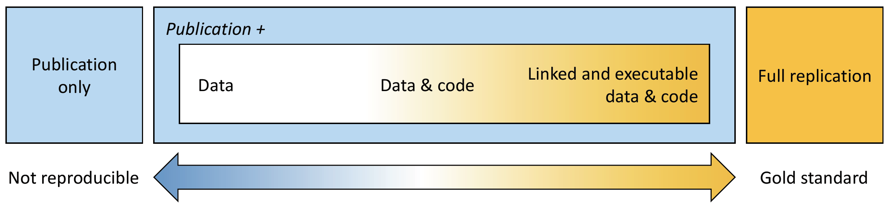
Figure 3.1: The spectrum of reproducibility.
3.1.3 Supporting Files
Files supporting this chapter are available on Google Drive.
3.1.4 Install R Markdown Software
Software and packages required to perform this tutorial are detailed below. Students should install those software and packages on their personal computers to be able to complete this course. Additional packages might need to be installed and the instructor will provide guidance on how to install those as part of the forthcoming tutorials.
- R: https://www.r-project.org
- R packages:
bookdown,knitrandR Markdown. Use the following R command to install those packages:
install.packages(c("bookdown", "knitr", "rmarkdown"))- RStudio: https://www.rstudio.com/products/rstudio/download/
- TeX: This software is required to compile document into
pdfformat. Please install MiKTeX on Windows, MacTeX on OS X and TeXLive on Linux. For this class, you are not requested to install this software, which takes significant hard drive space and is harder to operate on Windows OS.
NOTE: The instructor is using the following version of RStudio: Version 2025.05.0+496 (2025.05.0+496). If your computer is experiencing issues running the latest version of the software, you can install previous versions here.
3.1.5 What is RStudio?
RStudio (RStudio Team, 2020) is an integrated development environment (IDE) that allows you to interact with R more efficiently. While similar to the standard R GUI, RStudio is significantly more user-friendly. It offers more drop-down menus, tabbed windows, and extensive customization options (see Figure 3.2).
Detailed information on using RStudio can be found on RStudio’s website.
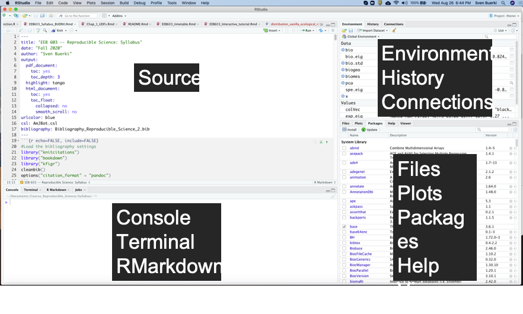
Figure 3.2: Snapshot of the RStudio environment showing the four windows and their content.
3.1.6 Web Resources
Below are URLs to web resources that provide key information related to Chapter 2:
- R Markdown: https://rmarkdown.rstudio.com
- R Markdown: The Definitive Guide (by Yihui Xie, J. J. Allaire, and Garrett Grolemund): https://bookdown.org/yihui/rmarkdown/
- Write HTML, PDF, ePub, and Kindle books with R Markdown: https://bookdown.org
- bookdown: Authoring Books and Technical Documents with R Markdown (by Yihui Xie): https://bookdown.org/yihui/bookdown/
- knitr: http://yihui.name/knitr/
- Pandoc: A Universal Document Converter: https://pandoc.org
- Bibliographies and Citations in R Markdown: https://rmarkdown.rstudio.com/authoring_bibliographies_and_citations.html
- Tutorial on knitr with R Markdown (by Karl Broman): http://kbroman.org/knitr_knutshell/pages/RMarkdown.html
3.2 PART A: Learning the Basics
In this part, we will provide a survey of the procedures to create and render (or knitting) your first R Markdown document.
3.2.1 Learning Outcomes
This tutorial provides students with the opportunity to learn how to:
- Create and render (or “knit”) your first R Markdown document
- Understand basic Markdown syntax and conventions, including:
3.2.2 Introduction to R Markdown
Markdown is a simple formatting syntax used for authoring HTML, PDF, and Microsoft Word documents. It is implemented in the rmarkdown package. An R Markdown document is typically divided into three sections (see Figure 3.3):
- YAML metadata section: This section provides high-level information about the output format of the R Markdown file. The information defined here is used by the Pandoc program to format the final document (see Figure 3.3).
- Main body text: This section represents the core content of your document or publication and uses Markdown syntax.
- Code chunks: This section allows you to import and analyze data, and to produce figures and tables that are directly embedded in the output document.
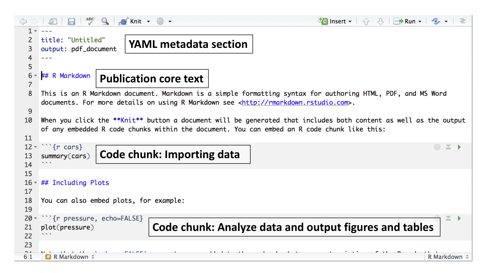
Figure 3.3: Example of an R Markdown file showing the three major sections.
3.2.3 Your First R Markdown Document
In this section, you will learn how to create and knit your first R Markdown document.
3.2.3.1 Create Document
To create an R Markdown document, follow these steps in RStudio:
- Navigate to:
File -> New File -> R Markdown...
- Enter a title for your document and set the output format to
HTML(see Figure 3.4)- Title:
Chapter 2 - Part A(This is the title of your document, not the name of your file; see below) - Note: We will knit documents to the
HTMLformat, which is the default output in RStudio. If you prefer to generate aPDFdocument, you must have a version of theTeXprogram installed on your computer (see Figure 3.4).
- Title:
- Save the
.Rmdfile by selecting:File -> Save As...- File name:
Chapter_2_part_A.Rmd
- Project path:
Reproducible_Science/Chapters/Chapter_2
- Warning: Because the knitting process generates multiple files, you should save your
.Rmdfile in a dedicated project folder.
- File name:
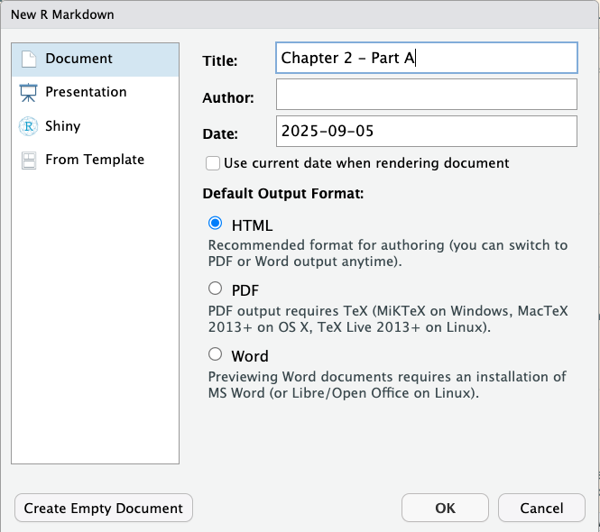
Figure 3.4: Snapshot of window to create an R Markdown file.
3.2.3.2 Knit Document
To knit or render your R Markdown document into an HTML file, follow these steps in RStudio:
- Click the
Knitbutton (Figure 3.3) in the top toolbar to render the document.
- There are several output format options; however, if you simply click the button, RStudio will automatically knit the document using the settings specified in the YAML metadata section (Figure 3.3).
- The output file will be created in the same directory as your
.Rmdfile (Figure 3.5). You can monitor the progress in the R Markdown console.
💡 Info If the knitting process fails, error messages will appear in the Render console, often indicating the line in the script where the error occurred (although this is not always the case). These messages are helpful for debugging your R Markdown document.
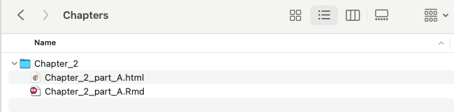
Figure 3.5: Snapshot of your project folder with the knitted html document.
3.2.3.3 How Does the Knitting Process Work?
When you knit your document, R Markdown passes the .Rmd file to the R knitr package, which executes all code chunks and generates a new Markdown (.md) file. This Markdown file includes both the code and its output (see Figure 3.6).
The .md file created by knitr is then processed by the Pandoc program, which converts it into the final output format (e.g., HTML, PDF, or Word) as illustrated in Figure 3.6.
Figure 3.6: R Markdown flow.
3.2.4 Basic R Markdown Syntax
In this section, we will focus on learning the syntax and protocols needed to create:
- Headers
- Inside text commenting
- Lists
- Italicized, bold, and combined formatting
- Embedded code chunks and inline code
- Spell checking
To master these skills, edit your .Rmd file as we progress, and knit the document to view the final result.
Additional syntax and formatting options are available in the R Markdown Reference Guide, which you can access in RStudio as follows:
- Select:
Help -> Cheatsheets -> R Markdown Reference Guide
Note: The Cheatsheets section also provides access to other helpful resources related to R Markdown and data manipulation. These documents will be very useful throughout this course.
3.2.5 Before Starting
Before you start this tutorial, please delete the content of your R Markdown file starting on line 11 ## R Markdown to the end of the document (see Figure 3.7).
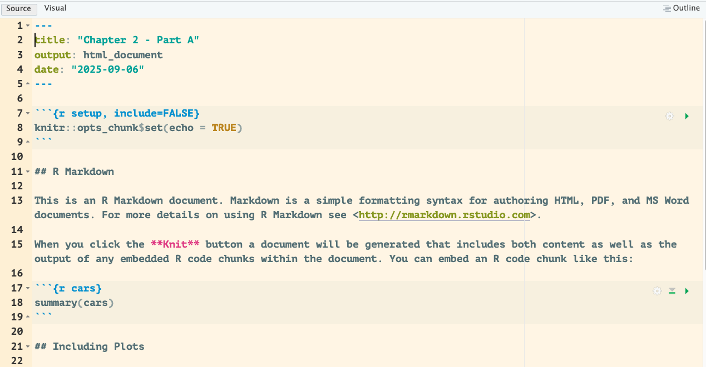
Figure 3.7: R Markdown of Chapter 2 - Part A.
3.2.6 Headers
Below is the syntax to create headers at three levels:
Syntax:
The "#" refers to the level of the header
# Header 1
## Header 2
### Header 3 💡 Info
- While Markdown headers will render correctly without blank lines, it is best practice to include blank lines both before and after headers. Doing so improves the readability of the raw Markdown and helps minimize knitting quirks. Overall, including a blank line before a header (except at the very start of a document) and after it is not strictly required, but it makes your Markdown cleaner and more consistent.
💡 Your turn to practice this syntax in your document by:
- Including 2 level 1 headers
- Embedding 2 level 2 headers under each level 1 header
- Checking your code by knitting the document
I let you pick great names for your headers!
3.2.7 Inside Text Commenting
Markdown does not have a built-in syntax for adding comments within text, but you can use HTML-style comments instead:
# HTML syntax to comment inside text
<!-- COMMENT -->This syntax is typically used to highlight areas of the text that need revision, clarification, or further work. Comments inserted this way will not be visible in the knitted document.
You can learn more about this HTML syntax on this webpage.
💡 Your turn to practice this syntax in your document by:
- Adding comments describing the content included under each level 1 header
- Checking your code by knitting the document
3.2.8 Lists
There are two types of lists:
- Unordered
- Ordered
3.2.8.1 Syntax for unordered lists
Syntax:
* unordered list
* item 2
+ sub-item 1
+ sub-item 2Note: For each sub-level include two tabs to create the hierarchy.
Output:
- unordered list
- item 2
- sub-item 1
- sub-item 2
💡 Your turn to practice this syntax in your document by:
- Including a 2-level unordered list under the first level 1 header
- Checking your code by knitting the document
3.2.8.2 Syntax for ordered lists
Syntax:
1. ordered list
2. item 2
+ sub-item 1
+ sub-item 2Output:
- ordered list
- item 2
- sub-item 1
- sub-item 2
💡 Your turn to practice this syntax in your document by:
- Including a 2-level ordered list under the second level 1 header
- Checking your code by knitting the document
3.2.9 Italicize and Bold Words
The following syntax renders text in italics, bold, or both italics and bold:
#Syntax for italics
*italics*
#Syntax for bold
**bold**
#Syntax for italic and bold
***italic and bold***Output:
- Italic
- Bold
- Italic and bold
💡 Your turn to practice this syntax in your document by:
- Writing a sentence in your R Markdown document that includes an italicized word
- Writing a sentence that includes a word or phrase in bold
- Writing a sentence where a word or phrase is both bold and italicized
- Checking your code by knitting the document
3.2.10 Create Hyperlinks
Adding hyperlinks to your documents support reproducible science and it can be easily done with the following syntax:
#Syntax to add hyperlink
[text](link)
#Example to provide hyperlink to RStudio
[RStudio](https://www.rstudio.com)When knitted, the example with RStudio turns like that RStudio.
💡 Your turn to practice this syntax in your document by:
- Creating a hyperlink to the Boise State website
- Creating a hyperlink to download R for Mac computers
- Checking your code by knitting the document
3.2.11 Include Code Chunks
One of the most exciting features of working with the R Markdown format is the ability to directly embed the output of R code into the compiled document (see Figure 3.6).
In other words, when you compile your .Rmd file, R Markdown will automatically execute each code chunk and inline code expression (see example below), and insert their results into the final document.
If the output is a table or a figure, you can assign a label to it (by adding metadata within the code chunk; see Part B) and refer to it later in your PDF or HTML document. This process—known as cross-referencing—is made possible through the \@ref() function, which is implemented in the R bookdown package.
3.2.11.1 Code Chunk
A code chunk can be easily inserted into your document using one of the following methods:
- Using the keyboard shortcut Ctrl + Alt + I (on macOS: Cmd + Option + I).
- Clicking the
Insertbutton in the editor toolbar. - Typing
{r} to open the chunk andto close it.
By default, the code chunk expects R code, but you can also insert chunks for other programming languages (e.g., Bash, Python).
💡 Your turn to practice this syntax in your document by:
- Creating a code chunk in your R Markdown document that prints the message “Hello world” when you knit the document
3.2.11.2 Chunk Options
Chunk output can be customized with knitr options arguments set in the {} of a code chunk header. In the examples displayed in Figure 3.8 five arguments are used:
include = FALSEprevents code and results from appearing in the finished file. R Markdown still runs the code in the chunk, and the results can be used by other chunks.echo = FALSEprevents code, but not the results from appearing in the finished file. This is a useful way to embed figures.message = FALSEprevents messages that are generated by code from appearing in the finished file.warning = FALSEprevents warnings that are generated by code from appearing in the finished.fig.cap = "..."adds a caption to graphical results.
We will delve more into chunk options in part D of chapter 2, but in the meantime please see the R Markdown Reference Guide for more details.
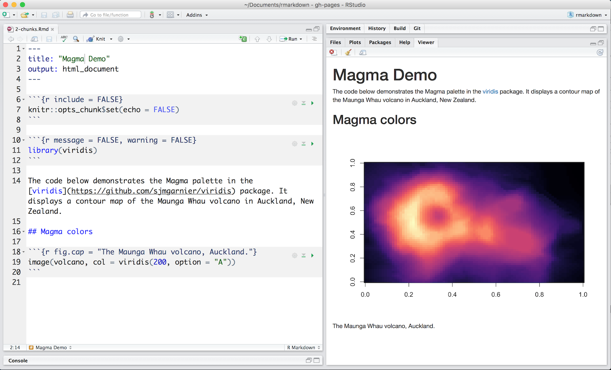
Figure 3.8: Example of code chunks.
💡 Your turn to practice this syntax in your document by:
- Editing the code chunk you created earlier (that prints “Hello world”) so that the code is hidden when you knit the document, but the output is still displayed
3.2.12 Inline Code
Code results can also be inserted directly into the text of a .Rmd file by enclosing the code as follows:
# Syntax for inline code
``r 2+2`` # Please amend to include only 1 back tickOutput: 4
R Markdown will always:
- Display the results of inline code, but not the code.
- Apply relevant text formatting to the results.
As a result, inline output is indistinguishable from the surrounding text.
Warning: Inline expressions do not take knitr options and is therefore less versatile. We usually use inline code to perform simple stats (e.g. 4x4; 16)
💡 Your turn to practice this syntax in your document by:
- Editing a sentence in your R Markdown text to include the output of the line of code 2 + 2, so that the result is automatically displayed when the document is knitted
3.2.13 Check Spelling
There are three ways to access spell checking in an R Markdown document in RStudio:
- A spell check button to the right of the save button.
Edit > Check Spelling...- The F7 key.
3.3 PART B: Setting Your R Markdown Document
3.3.1 Introduction
The aim of this tutorial is to develop an R Markdown document that can be used as a template to produce your reproducible reports.
We will focus on learning how to configure your document to manage software dependencies, set global parameters for knitting, and produce appendices with software citations, package version information, and details about the operating system used to generate the reproducible report.
3.3.2 Learning Outcomes
This tutorial provides students with the opportunity to learn how to:
- Study and understand the structure of an R Markdown document
- Reinforce your skills in creating R Markdown documents within dedicated project folders
- Define parameters in the YAML metadata section to control the formatting of the knitted document
- Install R dependencies and load packages needed to produce your document
- Generate a citation file for the R packages used in the document
- Generate an appendix with citations for all R packages
- Generate an appendix with R package versions used to produce the document
3.3.3 Structure of an R Markdown Document
To facilitate the teaching of the learning outcomes, a roadmap of the R Markdown file (*.Rmd) structure is summarized in Figure 3.9.
To support the reproducibility of your research, we structure the R Markdown file as follows (Figure 3.9):
- The YAML metadata section (at the top of the document) must include information about your bibliography (
*.bib) and citation style language (*.csl) files, both of which must be stored in the working directory. - Two R code chunks are provided just below the YAML metadata section:
- Code chunk #1: Installs and loads packages, and generates a
packages.bibfile (stored in the working directory). - Code chunk #2: Sets global options for code chunks.
- Code chunk #1: Installs and loads packages, and generates a
- The Markdown section beneath the two R code chunks is edited to add headers for the References and Appendices sections.
- Finally, two R code chunks are included in the Appendices section:
- Code chunk #3: Provides citations of software (relying on the output of Code chunk #1) for Appendix 1.
- Code chunk #4: Provides software version information (relying on sessionInfo()) for Appendix 2.
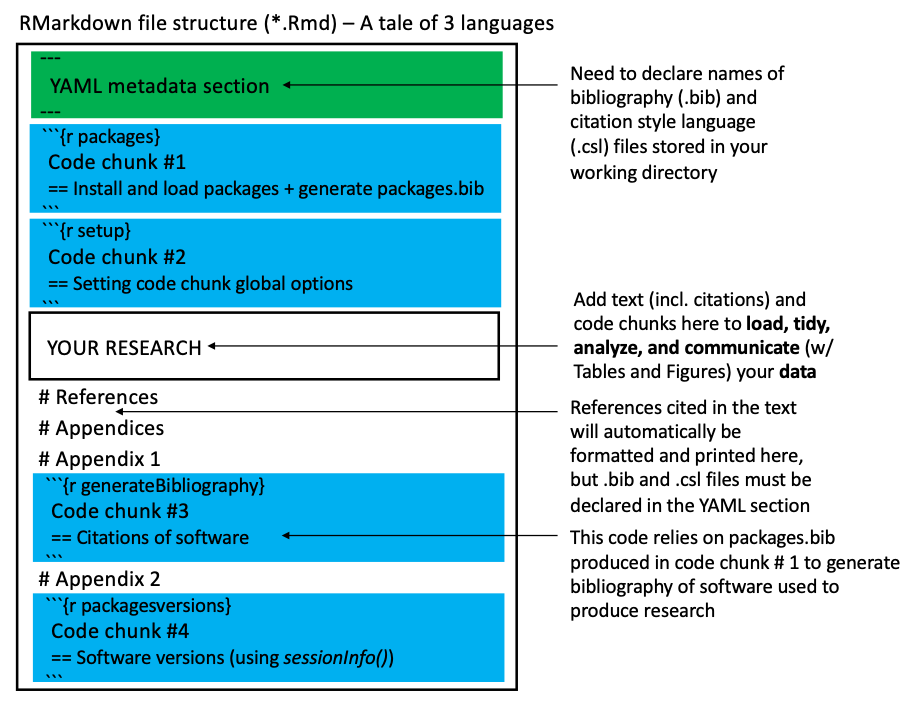
Figure 3.9: Representation of the RMarkdown file structure taught in this class. The following colors represent the three main computing languages found in an RMarkdown document: Black: Markdown (we also sometimes use HTML), Green: YAML, and Blue: R (included in code chunks). See text for more details.
3.3.4 Supporting Files
Please refer to section for more details on supporting files and their locations on the shared Google Drive.
3.3.5 Create Your R Markdown Document
Use the material from the Chapter 2 – Part A and Before Starting sections to create and save your R Markdown document for this tutorial.
💡 Guidelines
- Document title: Chapter 2 - part B
- Document output format: HTML
- File name: Chapter2_partB.Rmd
-
File path:
Reproducible_Science/Chapters/Chapter_2
3.3.6 YAML Metadata Section
The YAML metadata section (Figure 3.9) allows users to provide arguments (referred to as fields) that control how an R Markdown document is converted into its final output format. In this class, we will use functions from the knitr (Xie, 2015, 2023b) and bookdown (Xie, 2016, 2023a) packages to populate this section. (Field names, as declared in the YAML metadata section, are provided in parentheses.)
- Title (
title) - Subtitle (
subtitle) - Author(s) (
author) - Date (
date) - Output format(s) (
output) - Citations link (
link-citations) - Font size (
fontsize) - Bibliography file(s) (
bibliography) - Citation style file for journal formatting (
csl)
The YAML code shown below generates either an HTML or PDF document (see the output field), includes a table of contents (see the toc field), and formats in-text citations and the bibliography section according to the journal style specified in the AmJBot.csl file (via the csl field). The bibliography must be stored in a .bib file (in this case, Bibliography_Reproducible_Science_2.bib) placed at the root of your working directory.
---
title: "Your title"
subtitle: "Your subtitle"
author: "Your name"
date: "`r Sys.Date()`"
output:
bookdown::html_document2:
toc: TRUE
bookdown::pdf_document2:
toc: TRUE
link-citations: yes
fontsize: 12pt
bibliography: Bibliography_Reproducible_Science_2.bib
csl: AmJBot.csl
---3.3.6.1 Step-by-Step Procedure
Follow these steps to set up your YAML metadata section (also see Figure 3.9):
- Make sure you have created a document following the approach described here
- Copy the following files, available on Google Drive, into your project folder:
Bibliography_Reproducible_Science_2.bib
AmJBot.csl
- Replace your YAML metadata section (at the top of your R Markdown document) with the code as shown in the section above
- Knit your document and inspect the output file. Read this section to get more details on the knitting procedure.
💡 Info
-
Warning: The
.biband.cslfiles must be stored in the same working directory as your.Rmdfile. -
Rfunctions in the YAML metadata section: This can be done using inline R code syntax. For example, useSys.Date()to automatically add the current date to the output document. -
Bibliography files: You can use multiple bibliography files by specifying them like this:
bibliography: [file1.bib, file2.bib]. -
Omitting parameters in the YAML metadata section: You can omit parameters by commenting them out with a
#at the beginning of the line (equivalent to commenting). - More information: To learn more about YAML and its use in R Markdown, visit this website.
3.3.6.2 Knitting Procedure
Since you have declared two output formats in the YAML metadata section, and both are specific to bookdown functions, you need to select which format you want to use to compile your document. To do this, click the drop-down menu to the left of the Knit button (see Figure 3.10).
To ensure that bookdown functions are applied correctly, make sure to select one of the following options (see Figure 3.10):
Knit to html_document2Knit to pdf_document2
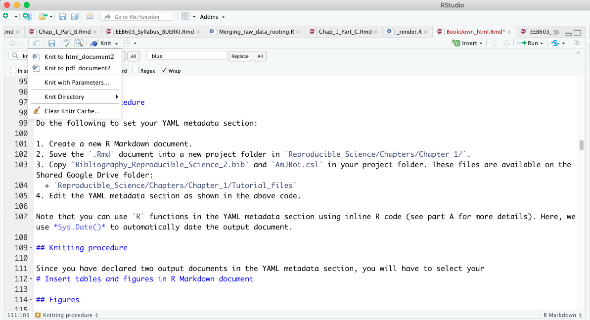
Figure 3.10: Snapshot of RStudio console showing the drop-down list associated to Knit button.
3.3.7 Install R Dependencies and Load Packages
3.3.7.1 Introduction
It is best practice to add an R code chunk directly below the YAML metadata section to automatically install and load the required R packages.
This approach offers two key benefits that support the reproducibility of your research:
- It ensures that all dependencies needed to produce your document are installed and available (see Figure 3.9).
- It allows you to automatically generate a citation file for all R packages used in your report (see below).
💡 Disclaimer
-
Warning: The code provided in this section will install the following
Rpackages on your computer: “knitr”, “rmarkdown”, “bookdown”, “formattable”, “kableExtra”, “dplyr”, “magrittr”, “prettydoc”, “htmltools”, “knitcitations”, “bibtex”, “devtools”. -
More on the
Rpackages: These packages are required to produce your reproducible reports in RStudio. All of them are available on CRAN, the official repository forR. -
Rpackage repositories: Make sure you have set yourRpackage repositories in RStudio before proceeding with this tutorial. You can do this by following this procedure. - Questions or concerns: If you have any questions, please contact the instructor at svenbuerki@boisestate.edu.
3.3.7.2 Step-by-Step Procedure
- Insert an R code chunk directly below your YAML metadata section (see Figure 3.9).
- Name the code chunk
packagesand set the chunk options as follows (see Figure 3.11):echo = FALSE
warning = FALSE
include = FALSE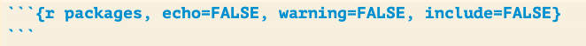
Figure 3.11: This is how your packages R code chunk should look like at this stage of the procedure.
- Copy the following code into your R code chunk (Figure 3.11) to install and load the packages required to produce your report:
###~~~
# Load R packages
###~~~
#Create a vector w/ the required R packages
# --> If you have a new dependency, don't forget to add it in this vector
pkg <- c("knitr", "rmarkdown", "bookdown", "formattable", "kableExtra", "dplyr", "magrittr", "prettydoc", "htmltools", "knitcitations", "bibtex", "devtools")
##~~~
#2. Check if pkg are already installed on your computer
##~~~
print("Check if packages are installed")
#This line outputs a list of packages that are not installed
new.pkg <- pkg[!(pkg %in% installed.packages())]
##~~~
#3. Install missing packages
##~~~
# Use an if/else statement to check whether packages have to be installed
# WARNING: If your target R package is not deposited on CRAN then you need to adjust code/function
if(length(new.pkg) > 0){
print(paste("Install missing package(s):", new.pkg, sep=' '))
install.packages(new.pkg, dependencies = TRUE)
}else{
print("All packages are already installed!")
}
##~~~
#4. Load all required packages
##~~~
print("Load packages and return status")
#Here we use the sapply() function to require all the packages
# To know more about the function type ?sapply() in R console
sapply(pkg, require, character.only = TRUE)- Review the R code to ensure you understand what it does and why
- Knit your document and inspect the output file
3.3.8 Generate a Citation File of R Packages Used
3.3.8.1 Introduction
I do not know about you, but I often struggle to properly cite R packages in my publications. Fortunately, R provides a built-in function to help with this. If you want to retrieve the citation for an R package, you can use the base R function citation().
For example, the citation for the knitr package can be obtained as follows:
# Generate citation for knitr Type this code directly in
# the Console
citation("knitr")##
## To cite package 'knitr' in publications use:
##
## Xie Y (2023). _knitr: A General-Purpose Package for Dynamic Report
## Generation in R_. R package version 1.44, <https://yihui.org/knitr/>.
##
## Yihui Xie (2015) Dynamic Documents with R and knitr. 2nd edition.
## Chapman and Hall/CRC. ISBN 978-1498716963
##
## Yihui Xie (2014) knitr: A Comprehensive Tool for Reproducible
## Research in R. In Victoria Stodden, Friedrich Leisch and Roger D.
## Peng, editors, Implementing Reproducible Computational Research.
## Chapman and Hall/CRC. ISBN 978-1466561595
##
## To see these entries in BibTeX format, use 'print(<citation>,
## bibtex=TRUE)', 'toBibtex(.)', or set
## 'options(citation.bibtex.max=999)'.If you want to generate those citation entries in BibTeX format, you can pass the object returned by citation() to toBibtex() as follows:
# Generate citation for knitr in BibTex format Note that
# there is no citation identifiers. Those will be
# automatically generated in our next code.
utils::toBibtex(utils::citation("knitr"))## @Manual{,
## title = {knitr: A General-Purpose Package for Dynamic Report Generation in R},
## author = {Yihui Xie},
## year = {2023},
## note = {R package version 1.44},
## url = {https://yihui.org/knitr/},
## }
##
## @Book{,
## title = {Dynamic Documents with {R} and knitr},
## author = {Yihui Xie},
## publisher = {Chapman and Hall/CRC},
## address = {Boca Raton, Florida},
## year = {2015},
## edition = {2nd},
## note = {ISBN 978-1498716963},
## url = {https://yihui.org/knitr/},
## }
##
## @InCollection{,
## booktitle = {Implementing Reproducible Computational Research},
## editor = {Victoria Stodden and Friedrich Leisch and Roger D. Peng},
## title = {knitr: A Comprehensive Tool for Reproducible Research in {R}},
## author = {Yihui Xie},
## publisher = {Chapman and Hall/CRC},
## year = {2014},
## note = {ISBN 978-1466561595},
## }💡 Info
-
Note that both
citation()andtoBibtex()are functions in the utils R package. -
To make sure that you are calling the right R function, you can add the package
name in front of the function, followed by
::. In this example, the code is as follows:utils::toBibtex(utils::citation(“knitr”)).
3.3.8.2 Step-by-Step Procedure
Here, you will edit the packages code chunk to output a .bib file containing references for all R packages used to generate your document. This file will be included in the appendix 1 presented in the next section.
This can be done by adding the following code at the end of your packages R code chunk:
# Generate BibTex citation file for all loaded R packages
# used to produce report Notice the syntax used here to
# call the function
knitr::write_bib(.packages(), file = "packages.bib")The .packages() function returns invisibly the names of all packages loaded in the current R session (to see the output, use .packages(all.available = TRUE)). This ensures that all packages used in your code will have their citation entries written to the .bib file.
Finally, to be able to cite these references (see Citation identifier) in your text, you need to edit the YAML metadata section. See Appendix 1 for a full list of references associated with the R packages used to generate this report.
💡 Your turn to practice this syntax in your document by:
-
Adding the code to generate
packages.bibin your R code chunk entitledpackages
. -
Knitting your document and inspecting your project folder to observe the creation of a new file entitled
packages.bib.
3.3.9 Generate Appendix with Citations of Used R Packages
Although a References section will be provided at the end of your document to cite in-text references (see References and Figure 3.9), it is useful to create a customized appendix listing citations for all R packages used to conduct the research, as shown in Appendix 1.
Here, we will learn the procedure to assemble such an appendix.
3.3.9.1 Step-by-Step Procedure
- Add a level-1 header at the end of your document titled “References”.
- Include the appendices after the References section (see Figure 3.9) by following the steps below:
- Insert
<div id="refs"></div>as shown below. This ensures that the appendices (or any other material) appear after the References section.
(See this resource for more details.)
- Insert
# References
<div id="refs"></div>
# (APPENDIX) Appendices {-}
# Appendix 1
Citations of all R packages used to generate this report.- Insert an R code chunk directly below
# Appendix 1to read and print the citations saved inpackages.bib. Use the following code:
### Load R package
library("knitcitations")
### Process and print citations in packages.bib Clear all
### bibliography that could be in the cash
cleanbib()
# Set pandoc as the default output option for bib
options(citation_format = "pandoc")
# Read and print bib from file
read.bibtex(file = "packages.bib")- Edit your R code chunk options as follows to correctly print the references:
{r generateBibliography, results = "asis", echo = FALSE, warning = FALSE, message = FALSE} - Knit your document to check that it produces the correct output (see Knitting procedure). Refer to Appendix 1 to see an example of the expected result.
3.3.10 Generate Appendix with R Package Versions and Operating System
In addition to citing R packages, you may also want to provide detailed information about the R package versions and operating system used (see Figure 3.9).
In R, the simplest — yet highly useful and important — way to document your environment is to include the output of sessionInfo() (or devtools::session_info()). Among other details, this output shows all loaded packages and their versions from the R session used to run your analysis.
Providing this information allows others to reproduce your work more reliably, as they will know exactly which packages, versions, and operating system were used to execute the code.
For example, here is the output of sessionInfo() showing the R version and packages I used to create this document:
# Collect Information About the Current R Session
sessionInfo()## R version 4.2.0 (2022-04-22)
## Platform: x86_64-apple-darwin17.0 (64-bit)
## Running under: macOS Big Sur/Monterey 10.16
##
## Matrix products: default
## BLAS: /Library/Frameworks/R.framework/Versions/4.2/Resources/lib/libRblas.0.dylib
## LAPACK: /Library/Frameworks/R.framework/Versions/4.2/Resources/lib/libRlapack.dylib
##
## locale:
## [1] en_US.UTF-8/en_US.UTF-8/en_US.UTF-8/C/en_US.UTF-8/en_US.UTF-8
##
## attached base packages:
## [1] stats graphics grDevices utils datasets methods base
##
## other attached packages:
## [1] rticles_0.27 DiagrammeR_1.0.11 DT_0.34.0
## [4] data.tree_1.2.0 kfigr_1.2.1 devtools_2.4.5
## [7] usethis_3.2.1 bibtex_0.5.1 knitcitations_1.0.12
## [10] htmltools_0.5.7 prettydoc_0.4.1 magrittr_2.0.3
## [13] dplyr_1.1.4 kableExtra_1.4.0 formattable_0.2.1
## [16] bookdown_0.36 rmarkdown_2.29 knitr_1.44
##
## loaded via a namespace (and not attached):
## [1] Rcpp_1.0.11 svglite_2.1.3 lubridate_1.9.3 visNetwork_2.1.4
## [5] digest_0.6.33 mime_0.12 R6_2.6.1 plyr_1.8.9
## [9] backports_1.4.1 evaluate_1.0.5 highr_0.11 httr_1.4.7
## [13] pillar_1.11.1 rlang_1.1.2 rstudioapi_0.17.1 miniUI_0.1.2
## [17] jquerylib_0.1.4 urlchecker_1.0.1 RefManageR_1.4.0 stringr_1.5.2
## [21] htmlwidgets_1.6.4 shiny_1.7.5.1 compiler_4.2.0 httpuv_1.6.13
## [25] xfun_0.41 pkgconfig_2.0.3 systemfonts_1.0.5 pkgbuild_1.4.8
## [29] tidyselect_1.2.0 tibble_3.2.1 viridisLite_0.4.2 later_1.3.2
## [33] jsonlite_1.8.8 xtable_1.8-4 lifecycle_1.0.4 formatR_1.14
## [37] scales_1.4.0 cli_3.6.2 stringi_1.8.3 cachem_1.0.8
## [41] farver_2.1.1 fs_1.6.3 promises_1.2.1 remotes_2.5.0
## [45] xml2_1.3.6 bslib_0.5.1 ellipsis_0.3.2 generics_0.1.4
## [49] vctrs_0.6.5 RColorBrewer_1.1-3 tools_4.2.0 glue_1.6.2
## [53] purrr_1.0.2 crosstalk_1.2.2 pkgload_1.4.1 fastmap_1.1.1
## [57] yaml_2.3.8 timechange_0.2.0 sessioninfo_1.2.3 memoise_2.0.1
## [61] profvis_0.3.8 sass_0.4.83.3.10.1 Step-by-Step Procedure
I have also used the approach described above to add this information in Appendix 2. This can be done as follows:
- Edit your document to add the following text below Appendix 1.
# Appendix 2
Version information about R, the operating system (OS) and attached or R loaded packages. This appendix was generated using `sessionInfo()`.- Then, add an R code chunk and set its options as follows to correctly print the content:
{r sessionInfo, eval = TRUE, echo = FALSE, warning = FALSE, message = FALSE} - Copy this code in your code chunk:
# Load and provide all packages and versions
sessionInfo()- Knit your document to check that it produces the correct output.
3.3.11 All Set — You’re Good to Go!
You have now set up your R Markdown environment and are ready to start populating it! This means you can begin inserting your text and additional code chunks directly below the packages code chunk.
The References section marks the end of the main body of your document. If you wish to add appendices, do so under Appendix 2. Note that appendices will be labeled differently from the main sections of the document.
💡 Info
- This R Markdown document will be used as a template for the rest of Chapter 2.
- This document also serves as a foundation for your Bioinformatics Tutorial.
3.4 PART C: Tables, Figures and References
3.4.1 Introduction
The aim of this tutorial is to provide students with the expertise to generate reproducible reports using bookdown (Xie, 2016, 2023a) and related R packages (see Appendix 1 for a full list). Unlike the functions implemented in the R rmarkdown package (Xie et al., 2018, which is better suited for generating PDF reproducible reports), bookdown allows the use of one unified set of functions to generate both HTML and PDF documents.
In addition, the same approach and functions are used to process tables and figures, as well as to cross-reference them in the main body of the text. This tutorial will also cover how to cite references in the text, automatically generate a references section, and format citations according to journal styles.
3.4.2 Learning Outcomes
This tutorial provides students with the opportunity to learn how to:
- Insert tables in an R Markdown document
- Insert figures in an R Markdown document
- Cross-reference tables and figures in the text
- Cite references in the text
- Generate a References section
- Format citations according to journal style
3.4.3 Create Your R Markdown
Follow the approach described in the box below to create your R Markdown file for Chapter 2 – Part C.
💡 Approach to Create Your R Markdown
-
Create document: Make a copy of
Chapter2_partB.Rmdin the same project folder and rename itChapter2_partC.Rmd - Download document: If you have any issues with Chapter 2 - part B, then download the instructor version on Google Drive
-
Document title: Open the file in RStudio and edit the title in the YAML section to
Chapter 2 – Part C - Test document: Knit your document to ensure it works properly
3.4.4 Insert Tables
This tutorial introduces key concepts related to table creation in R Markdown, specifically the following:
- Creating a table based on R code
- Assigning a table caption
- Providing a unique label to the R code chunk for cross-referencing in the text
- Displaying the table in the document
More details on this topic will be provided in Chapter 9.
In this section, you will learn the R Markdown syntax and R code needed to replicate the grading scale presented in the syllabus (see Table 3.1).
| Percentage | Grade |
|---|---|
| 100-98 | A+ |
| 97.9-93 | A |
| 92.9-90 | A- |
| 89.9-88 | B+ |
| 87.9-83 | B |
| 82.9-80 | B- |
| 79.9-78 | C+ |
| 77.9-73 | C |
| 72.9-70 | C- |
| 69.9-68 | D+ |
| 67.9-60 | D |
| 59.9-0 | F |
3.4.4.1 Step-by-Step Protocol (10 minutes)
Follow these steps to reproduce Table 3.1 in your R Mardown document:
- Open
Chapter2_partC.Rmdin RStudio.
- Add a first-level header titled
Tablesbelow thepackagescode chunk.
- Insert an R code chunk under your header by clicking the
Insertbutton in the editor toolbar.
- Copy and paste the following R code into your code chunk:
### Load package (for testing)
library(dplyr)
### Create a data.frame w/ grading scale
grades <- data.frame(Percentage = c("100-98", "97.9-93", "92.9-90",
"89.9-88", "87.9-83", "82.9-80", "79.9-78", "77.9-73", "72.9-70",
"69.9-68", "67.9-60", "59.9-0"), Grade = c("A+", "A", "A-",
"B+", "B", "B-", "C+", "C", "C-", "D+", "D", "F"))
### Plot table and add caption
knitr::kable(grades, caption = "Grading scale applied in this class.",
format = "html") %>%
kableExtra::kable_styling(c("striped", "scale_down"))- Edit the R code chunk options line by adding the following argument (Note: each argument should be separated by a comma):
echo = FALSE
- Add the unique label
tabgradesin the chunk options line (immediately after{r) to enable cross-referencing.
- Test your R code to ensure it produces the expected table by clicking the
Playbutton at the top left of the code chunk (see Fig. 3.12).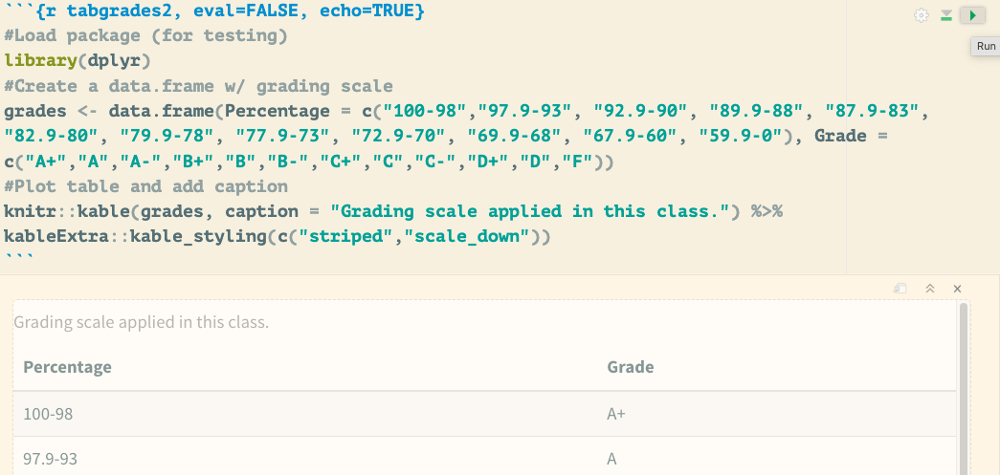
Figure 3.12: Demonstrates how to test your code within the R Markdown document. Click the play icon in the top-right corner of the code chunk to execute the code and return its output directly in the R Markdown document without knitting.
- Knit your document using the
Knitbutton in the editor toolbar (see Figure 3.10) to inspect the output and check your syntax and code.
3.4.4.1.1 Challenge (10 minutes)
💡 Is something missing?
- Challenge: Scrutinize the code provided in this section to determine how the table caption is created.
- Test Your Hypothesis: Once you have figured out how the caption is assigned, test your hypothesis by editing it and knitting your document.
3.4.4.2 Double “Table” in Caption (10 minutes)
Several students have encountered an issue with duplicate table labels in the caption. The instructor did a web search and found a possible solution to help debug the issue:
- Problem: When using
kableExtra::kbl()orknitr::kable()in combination withkableExtrafunctions, you might see a caption like “Table Table X: Your Caption”. - Solution: Specify the
formatargument inknitr::kable()(e.g.,format = "html"), or usekableExtra::kbl()directly, which automatically handles the format. This preventskableExtrafrom re-interpreting a markdown table as a new table and adding an extra “Table” prefix.
In our case, we could try editing the code as follows (two options):
### Load package (for testing)
library(dplyr)
### Create a data.frame w/ grading scale
grades <- data.frame(Percentage = c("100-98", "97.9-93", "92.9-90",
"89.9-88", "87.9-83", "82.9-80", "79.9-78", "77.9-73", "72.9-70",
"69.9-68", "67.9-60", "59.9-0"), Grade = c("A+", "A", "A-",
"B+", "B", "B-", "C+", "C", "C-", "D+", "D", "F"))
### Plot table and add caption
# Option 1
knitr::kable(grades, caption = "Grading scale applied in this class.",
format = "html") %>%
kableExtra::kable_styling(c("striped", "scale_down"))
# Option 2
kableExtra::kbl(grades, caption = "Grading scale applied in this class.") %>%
kableExtra::kable_styling(c("striped", "scale_down"))The instructor encourages students to test the options proposed above in their own documents and determine whether they resolve the issue.
3.4.5 Insert Figures
This tutorial introduces key concepts related to figure creation in R Markdown, specifically the following:
- Creating a figure based on R code.
- Assigning a figure caption.
- Providing a unique label to the R code chunk allowing further cross-referencing in the text.
- Displaying the figure in the document.
More details on this topic will be provided in Chapter 10.
In this section, you will learn the R Markdown syntax and R code needed to replicate Figure 3.13.
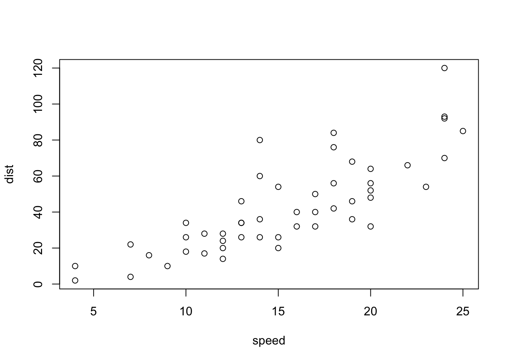
Figure 3.13: Plot of cars’ speed in relation to distance.
3.4.5.1 Step-by-Step Protocol (10 minutes)
Follow these steps to reproduce Figure 3.13 in your R Markdown document:
- If not done yet, open
Chapter2_partC.Rmdin RStudio. - Add a first-level header titled
Figuresbelow theTablesheader.
- Insert an R code chunk under your header by clicking the
Insertbutton in the editor toolbar. - Copy and paste the following R code into your code chunk:
### Load and summarize the cars dataset
summary(cars)
### Plot data
plot(cars)- Edit the R code chunk options line by adding the following argument (Note: each argument should be separated by a comma):
echo = FALSEresults = "hide"fig.cap = "Plot of cars' speed in relation to distance."out.width = "100%"
- Add the unique label
carsin the chunk options line (immediately after{r) to enable cross-referencing. - Test your R code to ensure it produces the expected table by clicking the
Playbutton at the top left of the code chunk (as done in Tables). - Knit your document using the
Knitbutton in the editor toolbar (see Figure 3.10) to inspect the output and check your syntax and code.
3.4.5.1.1 Challenge (10 minutes)
💡 Challenge
- What syntax is used to assign a figure caption?
- How does the syntax for assigning captions to tables and figures compare?
3.4.6 Cross-reference Tables and Figures in the Text
Cross-referencing tables and figures in the main body of your R Markdown document can easily be done by using the \@ref() function implemented in the bookdown package (see Figure 3.9).
3.4.6.1 General Syntax
The general syntax is as follows:
# Cross-referencing tables in main body of text
Table \@ref(tab:code_chunk_ID)
# Cross-referencing figures in main body of text
Figure \@ref(fig:code_chunk_ID)💡 More Info on the Syntax
-
It is worth mentioning that you need to manually add
TableorFigurein front of@ref(tab:code_chunk_ID)or@ref(fig:code_chunk_ID). This design allows the user to choose how tables and figures are referenced in the text. Journals often have distinct formatting styles, which must be followed during submission.
3.4.6.2 Step-by-Step Procedure (10 minutes)
- To cross-reference your table (labeled
tabgrades) in the text, follow these steps:- Type the following sentence below your
Tablesheader:
The grading scale presented in the syllabus is available in Table \@ref(tab:tabgrades). - Knit your document using the
Knitbutton in the editor toolbar (see Figure 3.10) to inspect the output and verify that the syntax and code are working correctly.
- Type the following sentence below your
- To cross-reference your figure (labeled
cars) in the text, follow these steps:- Type the following sentence below your
Figuresheader:
The plot of the cars data is available in Figure \@ref(fig:cars). - Knit your document using the
Knitbutton in the editor toolbar (see Figure 3.10) to inspect the output and verify that the syntax and code are working correctly.
- Type the following sentence below your
3.4.7 Cite References in the Text
3.4.7.1 Introduction
In this section, we will cover the following topics before delving into the practical implementation of citing references in your R Markdown document:
3.4.7.1.1 The Bibliography File
Pandoc can automatically generate citations in your text and a References section following a specific journal style (see Figure 3.9). To use this feature, you need to declare a bibliography file in the YAML metadata section under the bibliography: field.
In this course, we are working with bibliography files formatted using the BibTeX format. Other formats can also be used — please see this resource for more details.
Most journals allow citations to be downloaded in BibTeX format, but if this feature is not available, you can convert citation formats using online services (e.g., EndNote to BibTeX: https://www.bruot.org/ris2bib/).
3.4.7.1.2 The BibTeX Format
BibTeX is a reference management tool commonly used in conjunction with LaTeX (a Markup language) to format lists of references in scientific documents. It allows users to maintain a bibliographic database (.bib file) and cite references in a consistent and automated way.
Each entry in a .bib file follows this general structure:
Please find below an example of a reference formatted in BibTeX format:
@entrytype{citationIndentifier,
field1 = {value1},
field2 = {value2},
...
}💡 Info on BibTeX format
-
@entrytype: Type of reference (e.g.,@article, @book, @inproceedings). - citationIdentifier: Unique ID used to cite the entry in your R Markdown document.
- fields: Key-value pairs with bibliographic information (e.g., author, title, year).
Here is an example associated with Baker (2016):
# Example of BibTex format for Baker (2016) published in Nature
@Article{Baker_2016,
doi = {10.1038/533452a},
url = {https://doi.org/10.1038/533452a},
year = {2016},
month = {may},
publisher = {Springer Nature},
volume = {533},
number = {7604},
pages = {452--454},
author = {Monya Baker},
title = {1,500 scientists lift the lid on reproducibility},
journal = {Nature},
}3.4.7.1.3 Citation Identifier
The unique citation identifier of a reference (Baker_2016 in the example above) is set by the user in the BibTeX citation file (see the first lines in the examples provided above). This identifier is used to refer to the publication in the R Markdown document and also enables citing references and generating the References section.
3.4.7.2 Step-by-Step Procedures
In this section, we will cover the following topics to implement the tools for references citing in your R Markdown document:
3.4.7.2.1 Steps to Complete Before Citing References in Your Text
- Save all your
BibTeX-formatted references in a bibliography text file, and make sure to add the.bibor.bibtexextension.
- Place the bibliography file in your project folder (alongside your
.Rmdfile).
- Declare the name of your bibliography file in the YAML metadata section under the
bibliography:field.
- References formatted in the
BibTeXformat are available in the following file:Bibliography_Reproducible_Science_2.bib
3.4.7.2.1.1 Challenge (5 minutes)
💡 Download a Citation in BibTeX Format
- Visit this webpage.
-
Locate the
Citeicon and download a citation in.bibtexformat. -
Open the
.bibtexfile in a text editor and inspect its contents. - What is the unique citation identifier of this article?
3.4.7.2.2 Cite References in Your Text
We will examine the syntax for citing references, either as parenthetical citations or in-text citations.
- Parenthetical Citation: The entire citation appears in parentheses, usually at the end of a sentence or clause.
- In-Text Citation: The author’s name is part of the sentence, and the citation appears naturally in the flow of the text.
3.4.7.2.2.1 Parenthetical Citation
In this case, citations are placed inside square brackets ([]) (usually at the end of a sentence or clause) and separated by semicolons. Each citation must include a key composed of @ followed by the citation identifier (as stored in the BibTeX file).
Please find below some examples on citation syntax:
#Syntax
Blah blah [see @Baker_2016, pp. 33-35; also @Smith2016, ch. 1].
Blah blah [@Baker_2016; @Smith2016].Once knitted (using the button), the citation syntax is rendered as:
Blah blah (see Baker, 2016 pp. 33–35; also Smith et al., 2016, ch. 1).
Blah blah (Baker, 2016; Smith et al., 2016).
A minus sign (-) before the @ symbol will suppress the author’s name in the citation. This is useful when the author is already mentioned in the text:
#Syntax
Baker says blah blah [-@Baker_2016].Once knitted, the citation is rendered as:
Baker says blah blah (2016).
3.4.7.2.2.2 In-Text Citation
In this case, in-text citations can be rendered with the following syntax:
#Syntax
@Baker_2016 says blah.
@Baker_2016 [p. 1] says blah.Once knitted, the citation is rendered as:
Baker (2016) says blah.
Baker (2016 p. 1) says blah.
3.4.7.2.2.3 Challenge (10 minutes)
💡 Your turn to practice citing references in your document by:
- Write a sentence citing @Baker_2016 using parenthetical citation syntax.
- Write a sentence citing @Baker_2016 using in-text citation syntax.
3.4.8 Generate a References Section
Upon knitting, a References section will automatically be generated and inserted at the end of your document (see Figure 3.9).
We recommend adding a level-1 “References” header immediately after the final paragraph of the document, as shown below:
last paragraph...
# ReferencesThe bibliography will be inserted after this header (please see the References section of this tutorial for more details).
3.4.8.1 Challenge (10 minutes)
💡 Your Turn!
- Edit your document to add a References section.
3.4.9 Format Citations to Journal Style
In this section, we will explore how your bibliography can be automatically formatted to match a specific journal style. This is done by specifying a Citation Style Language (CSL) file in the YAML metadata section using the csl: field. The CSL file contains the formatting rules required to style both in-text citations and the bibliography according to the selected journal or publication.
3.4.9.1 What is the Citation Style Language?
The Citation Style Language (CSL) is an open-source project designed to simplify scholarly publishing by automating the formatting of citations and bibliographies. The project maintains a crowdsourced repository of over 8,000 free CSL citation styles. For more information, visit: https://citationstyles.org
3.4.9.2 CSL repositories
There are two main CSL repositories:
- GitHub Repository: https://github.com/citation-style-language/styles
- Zotero Style Repository: https://www.zotero.org/styles
3.4.9.3 Step-by-Step Procedure (10 minutes)
To learn this procedure and syntax, you will be tasked with downloading a .csl file and using it in your document (in place of AmJBot.csl).
Follow these steps to format your citations and bibliography according to a specific citation style (see Figure 3.9 for more details):
- Download a
.cslfile from the Zotero Style Repository.- To do this, type the name of your target journal in the search bar. Then, right-click on the corresponding style and select “Save Link As…” to download the
.cslfile. Save it in your project folder (see Figure 3.14).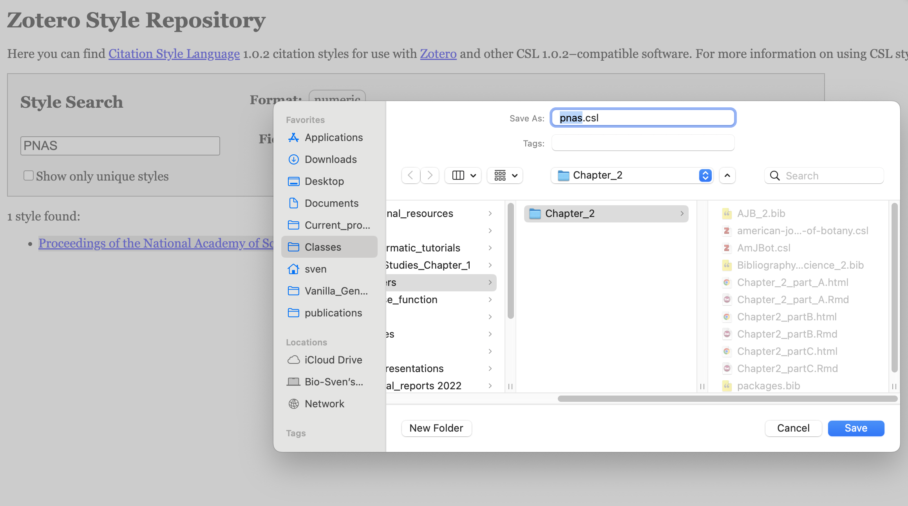
Figure 3.14: Procedure to save csl file for PNAS on the Zotero Style Repository.
- To do this, type the name of your target journal in the search bar. Then, right-click on the corresponding style and select “Save Link As…” to download the
- Make sure your
.cslfile is in your project folder (alongside your.Rmdfile).
- Edit your YAML metadata section to specify the name of your
.cslfile. - Knit your document using the
Knitbutton. The Pandoc program will use the information specified in the YAML metadata section to format both the in-text citations and the bibliography section according to the citation style defined in the CSL file. Be sure to add aReferencesheader at the end of your.Rmddocument.
3.5 PART D: Advanced R and R Markdown settings
3.5.1 Introduction
The aim of this tutorial is to provide an overview of procedures that can be applied to streamline your R Markdown document, supporting both your computing needs and formatting style.
3.5.2 Learning Outcomes
This tutorial provides students with the opportunity to learn how to:
- Set up your working directory
- Understand how to set global options for code chunks related to:
- Implement global options for code chunks
- Practice the global options procedure
3.5.3 Supporting Files
Please refer to section for more details on supporting files and their locations on the shared Google Drive.
3.5.4 Set Up Your Working Directory
Unlike R scripts, where you must set your working directory or provide the path to your files, the approach implemented in an R Markdown document (.Rmd) automatically sets the working directory to the location of the .Rmd file. This behavior is managed by functions from the knitr package.
💡 More Info
-
knitrexpects all referenced files to be located either in the same directory as the.Rmdfile or in a subfolder within that directory. - This setup is designed to enhance the portability of your R Markdown project, which typically consists of multiple related files.
3.5.4.1 Step-by-Step Procedure
Before knitting your document, you will be testing your code (see Figure 3.12). To ensure smooth code testing, you need to set your working directory. This can be done in RStudio by clicking (see Figure 3.15):
Session --> Set Working Directory --> To Source File Location
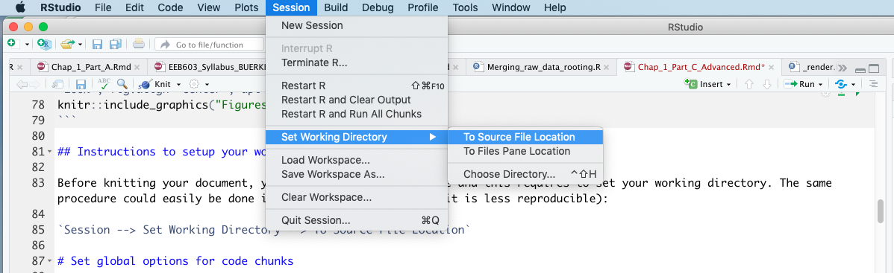
Figure 3.15: Snapshot of RStudio showing procedure to set your working directory to allow testing your code prior to knitting.
3.5.5 Set Global Options for Code Chunks
3.5.5.1 Introduction
To improve code reproducibility and efficiency, and to comply with publication requirements, it is customary to include a code chunk at the beginning of your .Rmd file that sets global options for the entire document (see Figure 3.9). These settings relate to the following elements of your code:
These general settings will be configured using the opts_chunk$set() function provided by the knitr package (Xie, 2023b). The following website contains valuable information on code chunk options:
3.5.5.1.1 The opts_chunk$set() Function
The knitr function opts_chunk$set() is used to modify the default global options in an .Rmd document.
Before starting, please note the following important points about the options:
- Chunk options must be written on a single line; no line breaks are allowed within chunk options.
- Avoid using spaces and periods (
.) in chunk labels and directory names. - All option values must be valid R expressions, just as function arguments are written.
We will discuss each part of the settings individually; however, these settings must be combined into a single code chunk in your document named setup (please see below for more details).
3.5.5.2 Text Output
This section covers settings related to the text output generated by code chunks.
Below is an example of options that can be applied across code chunks:
# Setup options for text results
opts_chunk$set(echo = TRUE, warning = TRUE, message = TRUE, include = TRUE)3.5.5.2.1 Explanations of the Code
echo = TRUE: Include all R source code in the output file.warning = TRUE: Preserve warnings (produced bywarning()) in the output, as if running R code in a terminal.message = TRUE: Preserve messages emitted bymessage()(similar to warnings).include = TRUE: Include all chunk outputs in the final output document.
If you want some text results to use different options, please adjust those in their specific code chunks. This comment applies to all other general settings as well.
3.5.5.3 Code Formatting
This section covers settings related to code formatting (that is, how code is displayed in the final html or pdf document) generated by code chunks.
Below is an example of options that can be applied across code chunks:
# Setup options for code formatting
opts_chunk$set(tidy = TRUE, tidy.opts = list(blank = FALSE, width.cutoff = 60),
highlight = TRUE)3.5.5.3.1 Explanations of the Code
tidy = TRUE: UseformatR::tidy_source()to reformat the code. Please see thetidy.optsoption below.tidy.opts = list(blank = FALSE, width.cutoff = 60): A list of options passed to the function specified by thetidyoption. Here, the code is formatted to avoid blank lines and has a width cutoff of 60 characters.highlight = TRUE: Highlight the source code.
3.5.5.4 Code Caching
To compile your .Rmd document faster—especially when you have computationally intensive tasks—you can cache the output of your code chunks. This process saves the results of these chunks, allowing you to reuse the output later without re-running the code.
The knitr package provides options to evaluate cached chunks only when necessary, but this must be set by the user. This procedure creates a unique MD5 digest (a data storage technique) for each chunk to track changes. When the option cache = TRUE (there are other, more granular settings; see below) is set, the chunk will only be re-evaluated in the following scenarios:
- There are no cached results (either this is the first time running or the cached results were moved or deleted).
- The code chunk has been modified.
The following code allows you to implement this caching procedure in your document:
# Setup options for code caching
opts_chunk$set(cache = 2, cache.path = "cache/")3.5.5.4.1 Explanations of the Code
- In addition to
TRUEandFALSE, thecacheoption also accepts numeric values (cache = 0, 1, 2, 3) for more granular control.0is equivalent toFALSE, and3is equivalent toTRUE.- With
cache = 1, the results are loaded from the cache, so the code is not re-evaluated; however, everything else is still executed, including output hooks and saving recorded plots to files.
- With
cache = 2(used here), the behavior is similar to1, but recorded plots will not be re-saved to files if the plot files already exist—saving time when dealing with large plots.
- With
cache.path = "cache/": Specifies the directory where cache files will be saved. You do not need to create the directory manually; knitr will create it automatically if it does not already exist.
3.5.5.5 Plot Output
Plots are a major component of your research and form the basis of your figures. You can take advantage of options provided by the knitr package to produce plots that meet publication requirements. This approach can save valuable time during the writing phase, as it eliminates the need to manually adjust figure size and resolution to comply with journal guidelines.
Below is an example of options that can be applied across code chunks:
# Setup options for plots The first dev is the master for
# the output document
opts_chunk$set(fig.path = "Figures_MS/", dev = c("png", "pdf"),
dpi = 300)3.5.5.5.1 Explanations of the Code
fig.path = "Figures_MS/": Specifies the directory where figures generated by the R Markdown document will be saved. As with caching, this folder does not need to exist beforehand; it will be created automatically. Files will be saved based on the code chunk label and assigned figure number.dev = c("pdf", "png"): Saves each figure in bothpdfandpngformats.dpi = 300: Sets the resolution (dots per inch) for bitmap devices. The resulting image dimensions follow the formula: DPI × inches = pixels. Check the submission guidelines of your target publication to ensure this value meets their requirements.
💡 More Than One Type of Figure
-
It is worth noting that you might use external figures in your
.Rmddocument. To avoid confusion between figures generated by the.Rmdfile and those imported from outside sources, it is best practice to save them in two separate subfolders for more details).
3.5.5.5.2 Additional Plot Options
Some journals have specific requirements for figure dimensions. You can easily set these using the following option:
fig.dim: (NULL; numeric) — If a numeric vector of length 2, it specifiesfig.widthandfig.height. For example:fig.dim = c(5, 7).
The unit for both dimensions is inches.
3.5.5.6 Figure Positioning
Positioning figures close to their corresponding code chunks is important for clarity and reproducibility. This can be controlled by adding another opts_chunk$set() option in your setup code chunk.
Use the fig.pos argument and set it to "H" to enforce figure placement near the relevant code.
## Locate figures as close as possible to requested
## position (=code)
opts_chunk$set(fig.pos = "H")💡 Warning
-
This setting may cause errors when the
.Rmdfile is knitted to apdfdocument. If this occurs, comment out the line of code using#and try knitting again.
3.5.6 Implement Global Options for Code Chunks
In this section, we will combine all the global settings discussed above into a code chunk named setup, which should be placed below the YAML metadata section (see Figure 3.9 for more details on its location).
In addition to containing the global settings, it is advisable to include a code section for loading the required R packages (see Chapter 2 - Part B and Figure 3.9).
Below is the code for the setup code chunk based on the options presented above:
### Load packages Add any packages specific to your code
library("knitr")
library("bookdown")
### Chunk options: see http://yihui.name/knitr/options/ ###
### Text output
opts_chunk$set(echo = TRUE, warning = TRUE, message = TRUE, include = TRUE)
## Code formatting
opts_chunk$set(tidy = TRUE, tidy.opts = list(blank = FALSE, width.cutoff = 60),
highlight = TRUE)
## Code caching
opts_chunk$set(cache = 2, cache.path = "cache/")
## Plot output The first dev is the master for the output
## document
opts_chunk$set(fig.path = "Figures_MS/", dev = c("png", "pdf"),
dpi = 300)
## Figure positioning
opts_chunk$set(fig.pos = "H")3.5.6.1 Settings of the setup R Code Chunk
When inserting the code above into an R code chunk (see Figure 3.9), please set the chunk options as follows:
setup: Unique ID of the code chunk.include = FALSE: The code will be evaluated, and any plot files will be generated, but nothing will be written to the output document.cache = FALSE: The code chunk will not be cached (see above for more details).message = FALSE: Messages emitted bymessage()will not be included in the output.
3.5.7 Practice the Global Options Procedure
Please follow the procedure outlined above to implement the material presented in this section and become familiar with the tutorial content. This exercise is divided into seven steps as follows:
- Open RStudio and open your
Chapter_2_PartC.Rmddocument. - Set your working directory according to the file location. Note: This step is especially important if you want to test your R code prior to knitting the document.
- Insert an R code chunk (using the
Insertbutton) directly below yourpackagescode chunk and name itsetup. This code chunk will be used to define the global settings via theopts_chunk$set()function. - Copy the content of the code presented in this section into your
setupcode chunk. - Edit your code chunk options as presented above.
- Use the R code provided below (which generates a plot) to explore the effect of global settings on code outputs.
- Once you have completed the procedures associated with step 6, knit your document using the
Knitbutton. Please pay attention to the outputs in your working directory. - Use the
bookdown\@ref()function to cite your figure or plot in the text.
3.5.7.1 Code for Step 6
The R code provided below corresponds to step 6 of the procedure and produces the plot shown in Figure 3.16.
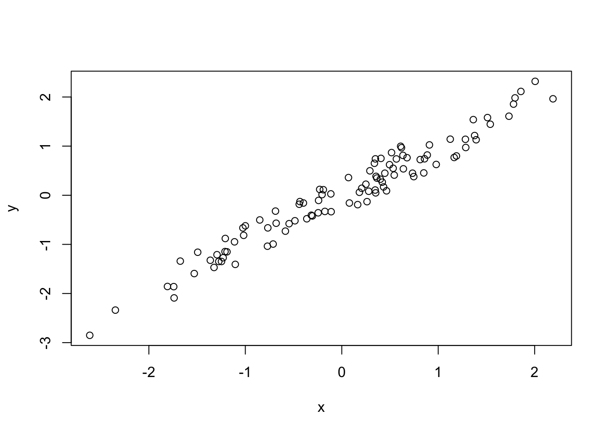
Figure 3.16: Plot of y ~ x.
3.5.7.1.1 Step-by-Step Procedure
- Insert an R code chunk (using the
Insertbutton) under theFiguresheader of your document and set the following options and arguments:plotcache: Unique ID of the code chunk.fig.cap = "Plot of y ~ x.": Figure caption.fig.show = "asis": Figure display.out.width = "100%": Figure width on the page.
- Enter the following R code inside the code chunk.
# Generate a set of observations (n=100) that have a normal
# distribution
x <- rnorm(100)
# Add a small amount of noise to x to generate a new vector
# (y)
y <- jitter(x, 1000)
# Plot y ~ x
plot(x, y)- Test your code to ensure it performs as expected (using the
Runbutton).
- Proceed to step 7 in the above section and complete the procedure.
3.6 PART E: User-Defined Functions in R
3.6.1 Aim
The aim of this tutorial is to provide an introduction to functions; more specifically, we will be studying user-defined functions (UDFs) as implemented in R.
💡 UDFs 101
- What are UDFs? UDFs allow users to write their own functions and make them available in the R Global Environment.
-
How do they work? UDFs are saved in
.Rscripts and are made available to users using thesource()function, which reads the file content and loads the UDFs. - Your UDF collection can ultimately lead to creating R packages.
3.6.2 Learning Outcomes
By the end of this tutorial, students will be able to:
- Define a function and understand its applicability
- Use the correct syntax to implement user-defined functions in R
- Apply best practices for writing clear and maintainable code
- Load and call user-defined functions
- Develop, implement, and apply user-defined functions that return a single value
- Create, name, and access elements of a list in R
- Develop, implement, and apply user-defined functions that return multiple values
- Implement defensive programming techniques to improve code robustness
- Use logical operators effectively within R functions
💡 Disclaimer
- To achieve the learning outcomes, students will complete three guided exercises. Mathematical examples will be used to demonstrate the broad applicability of the material. Before diving into the exercises, the instructor will provide context on what functions are, when to use them, and best practices for writing pseudocode and R code (explored further in Chapter 5). The tutorial will also cover effective strategies for calling and organizing R functions.
-
This tutorial will be taught using an
.Rscript. -
We will discuss how to integrate user-defined functions (UDFs) from an
.Rscript into your R Markdown document.
3.6.3 Define a Function and Understand its Applicability
3.6.3.1 What is a Function?
In programming, you use functions to incorporate sets of instructions that you want to use repeatedly or that, because of their complexity, are better self-contained in a subprogram and called when needed.
A function is a piece of code written to carry out a specified task; it may or may not accept arguments or parameters, and it may or may not return one or more values.
3.6.3.2 Functions in R
There are many terms used to define and describe functions—subroutines, procedures, methods, etc.—but for the purposes of this tutorial, you will ignore these distinctions, which are often semantic and reminiscent of older programming languages (see here for more details on semantics). In our context, these definitions are less important because, in R, we only have functions.
3.6.3.3 R Syntax for Functions
In R, according to the base documentation, you define a function with the following construct:
function(arglist){
body
}The code between the curly braces is the body of the function.
When you use built-in functions, the only things you need to worry about are how to effectively communicate the correct input arguments (arglist) and how to manage the return value(s) (or outputs), if there are any. To learn more about the arguments associated with a specific function, you can access its documentation using the following syntax (entered in the R console):
#General syntax
?function()
#Example with read.csv()
?read.csv()3.6.4 Syntax to Implement UDFs in R
R allows users to define their own functions (UDFs), which are based on the following syntax:
function.name <- function(arguments){
computations on the arguments
some more code
return value(s)
}💡 In most cases, an R function has the following components:
-
A name: In our example,
function.name. -
Arguments (
arguments): These are inputs to the function, declared within the parentheses()following the keywordfunction. -
A body: The body is the code enclosed within curly braces
{}, where the computation is carried out. - One or more return values: These values are output by the user-defined function (UDF).
-
Definition syntax: Overall, you define the function similarly to variables, by “assigning” the directive
function(arguments)to the “variable”function.name, followed by the function body.
3.6.5 Apply Best Practices for Writing Code
This topic will be explored in more detail in Chapter 5, but here we introduce some best practices for writing clear and maintainable code.
A key part of this process involves starting with pseudocode before transitioning to actual R code. Pseudocode provides a high-level, language-agnostic description of the tasks your function needs to perform. It allows you to plan the structure and logic of your function before dealing with R syntax.
Once the pseudocode is defined, the next step is to translate each task into actual R code. This involves identifying existing R functions that can perform the required operations. If suitable functions do not exist, you may need to write your own—potentially supported by additional pseudocode to clarify the logic.
Below, you will find more detailed definitions of the two key concepts introduced here: pseudocode and code writing/implementation.
3.6.5.1 Writing Pseudocode
Pseudocode is an informal, high-level description of the operating logic of a computer program or algorithm. It uses the structural conventions of a programming language (in this case, R) but is intended for human understanding rather than machine execution.
In this stage, you outline the major steps of your function and break them down into associated tasks. You then link these steps to specific R functions—either existing ones or those you will need to develop. This provides the backbone of your code and supports the transition to implementation.
3.6.5.2 Writing Code
Writing clear, reproducible code has (at least) three main benefits:
- It makes it much easier to revisit your code months later—whether you’re returning to an old project or making revisions after peer review.
- It allows others to more easily scrutinize the results of your analysis, helping to establish their validity.
- Clean, well-documented, and reproducible code can encourage others to adopt any new methods you’ve developed (and can lead to more citations).
3.6.6 Load and Call UDFs
When working on your project, it is highly likely that you will develop multiple UDFs tailored to your research. In this case, it is recommended to create a dedicated folder named R_functions within your project directory (see Figure 3.17). Save each UDF as a separate file (e.g., check.install.pkg.R) inside the R_functions folder.
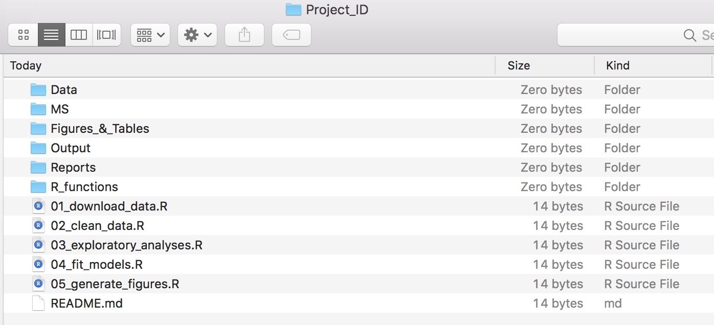
Figure 3.17: Example file structure of a simple analysis project. See Chapter 4 for more details
3.6.6.1 The source() Function
Once your project is properly structured (see Figure 3.17), it becomes easy to load specific UDFs stored in separate R scripts using the source() function.
For example, to load the check.install.pkg() function (saved as R_functions/check.install.pkg.R) into the Global Environment, enter the following code in the R console (see Figure 3.18):
source("R_functions/check.install.pkg.R")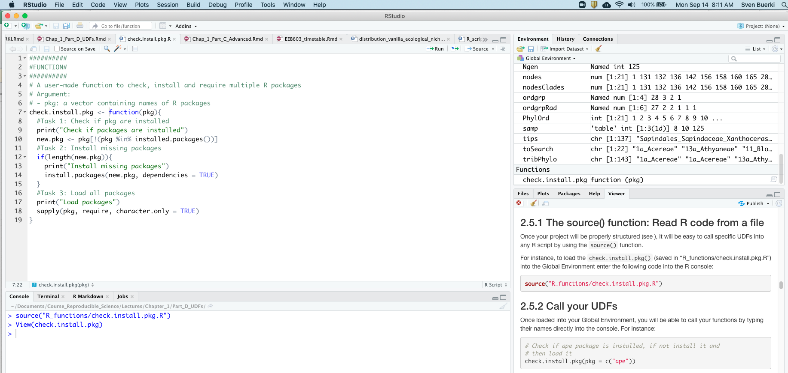
Figure 3.18: Snapshot of RStudio showing output of source() function and the UDF made available in the Global Environment. You can also view the code unperpinning the UDF.
Below is an example of R code that loads all your UDFs stored in the R_functions folder. This approach is especially useful when you have multiple UDFs associated with your analysis pipeline.
### Load all UDFs stored in R_functions
# 1. Create vector with names of UDF files in R_functions
# (with full path)
files_source <- list.files("R_functions", full.names = T)
# 2. Iterative sourcing of all UDFs
sapply(files_source, source)3.6.6.2 Call Your UDFs
Once your UDFs are loaded into the Global Environment (see Figure 3.18 for an example), you can call them by typing their names directly into the R console. For example:
# Check if knitr package is installed, if not install it
# and then load it
check.install.pkg(pkg = c("knitr"))## [1] "Check if packages are installed"
## [1] "Load packages"## knitr
## TRUE3.6.7 Develop, Implement, and Apply UDFs That Return a Single Value
In this section, we aim at developing UDFs that return a single value. But how do we tell a function what to return?
In R, this is done using the return() function.
To learn this skill, we will work on a challenge.
3.6.7.1 Challenge (15 minutes)
We are tasked with
Developing, implementing, and applying a UDF to calculate the square of a number.
3.6.7.1.1 Writing Pseudocode
Let’s begin by understanding this challenge from a mathematical perspective. Then, we will develop a pseudocode to solve it computationally. Finally, we will implement our solution in R.
In mathematics, the squared symbol (\(^2\)) is an arithmetic operator that signifies multiplying a number by itself. The “square” of a number is the product of the number and itself. Multiplying a number by itself is called “squaring” the number.
Although this task is straightforward, the pseudocode to implement the function requires the following steps:
- Store the number inputted by the user into an argument called
base, as part of the function’s argument(s). - Calculate the square of
baseby multiplying the number by itself. - Save the result of step 2 into an object called
sq. - Return the
sqobject to the user (a single numeric value). To do this, we will use thereturn()function.
💡 Let’s talk about the class of input/output data
-
Input: The class of the input data must be
numeric. -
Output: The class of the output data must also be
numeric. -
Tip: You can check the class of an object using the
class()function. -
The
class()function is also useful when implementing defensive programming.
3.6.7.1.2 Writing Code
In this section, we will implement the pseudocode outlined above in a function called square_number().
This function takes one argument from the user (base, a number) and returns the square of that number (i.e., base * base).
## Create a UDF in R to calculate square number:
# - argument: base (= one number)
# - output: square of base (= one number)
square_number <- function(base){
#Infer square of base and save it into object
sq <- base*base
#Return sq object
return(sq)
}3.6.7.2 Implement and Load the UDF in R (10 minutes)
Follow these steps to implement and load the UDF in R:
- Create a new folder named
R_functionsinside yourChapter_2folder. - In RStudio, create a new
.Rscript and save it assquare_number.RinChapter_2/R_functions. - Copy the code for the
square_numberfunction into your new R script. - Load the function into the Global Environment by executing all lines related to
square_number. - Verify that
square_numberhas been loaded by checking the Environment panel in RStudio (see Figure 3.19).
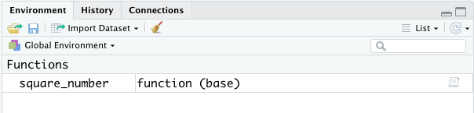
Figure 3.19: Close-up of the Environment panel in RStudio showing that the UDF is loaded in the Global Environment and can be used.
💡 Use the source() function to load the UDF.
-
You can also load the
square_number()function by typing the following command in the console:source(“R_functions/square_number.R”).
3.6.7.3 Apply Your Function (5 minutes)
The R language is quite flexible and allows functions to be applied to a single value (e.g., base = 2) or a vector (e.g., base = c(2, 4, 16, 23, 45)). Let’s further explore this concept by completing the following tasks in your R script:
- Apply the function to a single value:
# Square number of 2
square_number(base = 2)## [1] 4- Apply the function to a vector containing multiple values:
# Create vector with numbers
bases <- c(2, 4, 16, 23, 45)
# Apply function to vector
square_number(base = bases)## [1] 4 16 256 529 20253.6.8 Create, Name, and Access Elements of a List in R
In this section, we introduce lists in R and learn how to create, name, and access list elements. We will also explore how lists can contain mixed data types and nested structures.
The procedures and syntax covered here will be applied in the next section, where we investigate how to implement user-defined functions (UDFs) that return multiple values.
More specifically, this section provides procedures and syntax for:
💡 Create Your R Script to Practice
-
R Script: Create an
Rscript titledR_lists.Rand save it in your project folder. - Copy and paste the code provided in this section into your script to practice and reinforce these new protocols and syntax.
3.6.8.1 What is a List in R?
Lists are R objects that can contain elements of different types, such as numbers, strings, vectors, or even another list. A list can also include a matrix or a function as an element. Lists are created using the list() function.
3.6.8.2 How to Create a List
Below is an example of how to create a list containing strings, numbers, vectors, and logical values:
# Create a list containing strings, numbers, vectors and a
# logical value
list_data <- list("Red", 51.3, 72, c(21, 32, 11), TRUE)
# Print object
print(list_data)## [[1]]
## [1] "Red"
##
## [[2]]
## [1] 51.3
##
## [[3]]
## [1] 72
##
## [[4]]
## [1] 21 32 11
##
## [[5]]
## [1] TRUE3.6.8.3 How to Name List Elements
List elements can be assigned names, which allows them to be accessed using those names, as shown below:
# Create a list containing a vector, a matrix and a list
list_data <- list(c("Jan", "Feb", "Mar"), matrix(c(3, 9, 5, 1,
-2, 8), nrow = 2), list("green", 12.3))
# Give names to the elements in the list
names(list_data) <- c("1st_Quarter", "A_Matrix", "An_inner_list")
# Show the list
print(list_data)## $`1st_Quarter`
## [1] "Jan" "Feb" "Mar"
##
## $A_Matrix
## [,1] [,2] [,3]
## [1,] 3 5 -2
## [2,] 9 1 8
##
## $An_inner_list
## $An_inner_list[[1]]
## [1] "green"
##
## $An_inner_list[[2]]
## [1] 12.33.6.8.4 How to Access List Elements
Elements of a list can be accessed using their index or, in the case of named lists, using their names.
The following example illustrates how to access list elements using both methods:
# Create a list containing a vector, a matrix and a list
list_data <- list(c("Jan", "Feb", "Mar"), matrix(c(3, 9, 5, 1,
-2, 8), nrow = 2), list("green", 12.3))
# Give names to the elements in the list
names(list_data) <- c("1st_Quarter", "A_Matrix", "An_inner_list")
# Access the first element of the list
print(list_data[[1]])## [1] "Jan" "Feb" "Mar"# Access the thrid element. As it is also a list, all its
# elements will be printed
print(list_data[[3]])## [[1]]
## [1] "green"
##
## [[2]]
## [1] 12.3# Access the list element using the name of the element
print(list_data$A_Matrix)## [,1] [,2] [,3]
## [1,] 3 5 -2
## [2,] 9 1 8We will now apply what you have learned to return multiple values in a UDF.
3.6.9 Develop, Implement, and Apply UDFs that Return Multiple Values
In this section, we will focus on developing UDFs that return multiple values.
To learn this skill, we will work on a challenge.
3.6.9.1 Challenge
We are tasked with
Developing, implementing, and applying a UDF to calculate both the logarithm and the square of a number.
To accomplish this, we will collect the different outputs into a list, which will then be returned to the user using return().
3.6.9.2 Student Activity and Solution (20 minutes)
3.6.9.2.1 Students Work in Groups
Students will work in groups of 2–3 to complete the following tasks:
- Develop a pseudocode plan to solve the challenge.
- Implement the pseudocode as a UDF in R (saved in a script).
- Apply and test your UDF.
3.6.9.2.2 Solution proposed by the instructor
Please find below the solution proposed by the instructor:
##Create a user defined function in R to calculate log and square of a number:
# argument: base (= one number)
# output: log and square of base (= two numbers) returned in a list
my_log_square <- function(base){
## 1. Infer log and square of base
#log (base 10)
log_value <- log(base)
#Square of base
square_value <- base^2
## 2. Return both objects/values in a list
# Name objects in the list to help user determine what value refers to which output
return(list(log_val = log_value, square_val = square_value))
}
# Call the function
my_log_square(base = 2)## $log_val
## [1] 0.6931472
##
## $square_val
## [1] 43.6.10 Implement Defensive Programming to Improve Code Robustness
3.6.10.1 Introduction
Defensive programming is a technique used to ensure that code fails with well-defined errors—that is, in situations where you know it should not work. The key idea is to ‘fail fast’ by ensuring the code throws an error as soon as something unexpected occurs. This may require a bit more effort from the programmer, but it makes debugging much easier later on.
3.6.10.2 Example
To demonstrate how to apply defensive programming in your code, a power function y = x^n is implemented as a user-defined function (UDF) and used as an example.
💡 Create Your R Script to Practice
-
R Script: Create an
Rscript titledexp_number.Rand save it inChapter_2/R_functions. - Copy and paste the code provided in this section into your script to practice and reinforce these new protocols and syntax.
# Define a power function (exp_number): y = x^n
# - Arguments: base (= x) and power (= n)
# - Output: a number (y)
exp_number <- function(base, power){
#Infer exp (y) based on base (x) and power (n) (y=base^power)
exp <- base^power
#Return exp object
return(exp)
}
# Call function
exp_number(base = 2, power = 5)## [1] 323.6.10.2.1 Let’s Test the UDF!
You can apply defensive programming to the exp_number function defined above. The function requires that both arguments be of class numeric. If you provide a string (e.g., a word) as input, the function will return an error:
# Example where we don't respect the class associated with
# the argument base
exp_number(base = "hello", power = 5)## Error in base^power: non-numeric argument to binary operator3.6.10.2.2 Let’s Implement Defensive Programming in the UDF!
To help users identify and resolve potential issues, we can implement a routine that checks the class of the arguments (i.e., the input data provided by the user). If the inputs are not of class numeric, the function will notify the user of the issue and provide guidance on how to fix it.
This routine can be implemented as follows:
# Define a power function (exp_number): y = x ^n
# - Arguments: base (= x) and power (= n)
# - Output: a number (y)
exp_number <- function(base, power){
# This if statement tests if classes of base and power are numeric.
# If one of them is not numeric it stops and return meaningful message
if(class(base) != "numeric" | class(power) != "numeric"){
stop("Both base and power inputs must be numeric")
}
#If classes are good then infer exp
exp <- base^power
# Return exp object
return(exp)
}
# Call function
exp_number(base = "hello", power = 5)## Error in exp_number(base = "hello", power = 5): Both base and power inputs must be numericAlthough in this case debugging the error might not take long, in more complex functions you’re more likely to encounter vague error messages or code that runs for some time before failing. By applying defensive programming and adding checks to your code, you can detect unexpected behavior earlier and receive more meaningful error messages.
3.6.11 Use Logical Operators within R Functions
As you saw in the previous example, we used a logical operator—in that case, OR (represented by the | symbol)—to implement defensive programming in our user-defined function (UDF).
In a nutshell, the most commonly used logical operators in R are:
- AND (
&): ReturnsTRUEonly if both values areTRUE. - OR (
|): ReturnsTRUEif at least one of the values isTRUE. - NOT (
!): Negates the logical value it is applied to.
You can learn more about logical operators (including practice exercises) on this website.
3.7 PART F: Interactive Tutorials
The objective of this section is to provide students with some tools and ideas to design their bioinformatic tutorials (for PART 2). Here, students will have an overview of the tools implemented in the R package learnr, which was developed to produce interactive tutorials. Although developed in R, the interactive tutorials are designed to be conducted in web browsers (but it could also be entirely done within RStudio).
The interactive tutorial presented here is subdivided into five topics:
- Introduction: This part sets the scene and provides some background information on the tutorial.
- Exercise: The aim of the exercise is presented together with a pseudocode (with associated R functions) outlying steps to design and implement an R code to complete the exercise. Students are asked to develop their R codes and execute them in the code chunk. You can type your code directly in the window/console and execute it using the
R Codebutton. The instructor has also provided the solution to the exercise, which could be accessed by pressing theSolutionbutton available in the top banner of the code chunk window. - Questions: These questions are designed to test students’ knowledge of the code.
- Solution: A commented solution proposed by the instructor is available in a code chunk. Students can execute the code and inspect outputs produced to generate the final answer.
- YouTube tutorial: Here, a short YouTube video presents the procedure to launch a learn interactive tutorial and briefly presents the exercise. The main objective of this video is to show students that it is quite easy to integrate a video into their tutorials.
Finally, the instructor wants to stress that students are not obliged to design their tutorials using learnr. You can also use the R Markdown language/syntax and output tutorials in HTML or PDF formats (more on this subject in Chapter 1).
This document highlights steps to execute the interactive tutorial designed by the instructor.
3.7.1 Installation of required package
Open RStudio and install the learnr package from CRAN by typing the following command in the console:
install.packages("learnr")3.7.2 Files location & description
Files associated to this tutorial are deposited on the Google Drive under this path:
Reproducible_Science -> Bioinformatic_tutorials -> Intro_interactive_tutorial
There are two main files:
README.html: The documentation to install R package and run interactive tutorial.EEB603_Interactive_tutorial.Rmd: The interactive tutorial written in R Markdown, but requiring functions from learnr.
3.7.3 YouTube video
The instructor has made a video explaining the procedure to launch the interactive tutorial (based on option 1; see below) as well as some additional explanations related to the exercise.
3.7.4 Running tutorial
- Download the
Intro_interactive_tutorialfolder and save it on your local computer. - Set working directory to location of
EEB603_Interactive_tutorial.Rmd.
- This can be done as follows in RStudio:
Session -> Set Working Directory -> Choose Directory.... - You can also use the
setwd()function to set your working directory (e.g.setwd("~/Documents/Course_Reproducible_Science/Timetable/Intro_interactive_tutorial")).
- Running tutorial. There are two options to run the integrative tutorial:
- Option 1: Open
EEB603_Interactive_tutorial.Rmdin RStudio and press theRun Documentbutton on the upper side bar to launch the tutorial. It will appear in theViewerpanel (on right bottom corner). You can open the interactive tutorial in your web browser by clicking on the third icon at the top of the viewer panel. This procedure is also explained in the Youtube video. - Option 2: Type the following command in the console. This will open a window in RStudio. You can also open the tutorial in your web browser by pressing the
Open in Browserbutton.
rmarkdown::run("EEB603_Interactive_tutorial.Rmd")- Enjoy going through the tutorial!
3.7.5 Learning syntax to develop interactive tutorials
The procedure to develop interactive tutorials using learnr is presented here. To learn more about the syntax, the instructor encourages you to open EEB603_Interactive_tutorial.Rmd in RStudio and inspect the document. This will allow learning syntax and associated procedures to:
- Design exercises (with embedded R code chunks and associated solutions).
- Include multiple choices questions.
- Embed a YouTube video.
4 Chapter 3
4.1 Let’s start with a quote
While studying the material presented in this chapter, keep in mind this quote from Richard Feynman:
The first principle is that you must not fool yourself — and you are the easiest person to fool.
4.2 Aim
The aim of this chapter is to engage in readings and group discussions that equip you with the knowledge and tools needed to implement reproducible science practices in support of your research.
We will begin by reviewing the steps of the scientific process and identifying potential threats to its integrity. Then, we will discuss strategies to mitigate these threats and explore initiatives that promote and reward reproducibility in science.
4.3 Learning Outcomes
By the end of this chapter, you will be able to:
- Review the key steps involved in the scientific process
- Identify and define common threats to the scientific process
- Discuss strategies to mitigate these threats
- Explain the Transparency and Openness Promotion (TOP) Guidelines and their application in scientific publishing and funding contexts
4.4 Resources
This chapter is primarily based on the following resources:
- Kerr NL (1998). “HARKing: Hypothesizing After the Results are Known.”, Personality and Social Psychology Review, 2(3), 196-217., https://doi.org/10.1207/s15327957pspr0203_4. – On HARKing (see Glossary section).
- Nosek BA, Spies JR, Motyl M (2012). “Scientific Utopia: II., Restructuring Incentives and Practices to Promote Truth Over, Publishability.” Perspectives on Psychological Science, 7(6),, 615-631. doi:10.1177/1745691612459058, https://doi.org/10.1177/1745691612459058,, https://doi.org/10.1177/1745691612459058. – On incentives.
- Nosek BA, Alter G, Banks GC, Borsboom D, Bowman SD, Breckler SJ, Buck, S, Chambers CD, Chin G, Christensen G, Contestabile M, Dafoe A, Eich E,, Freese J, Glennerster R, Goroff D, Green DP, Hesse B, Humphreys M,, Ishiyama J, Karlan D, Kraut A, Lupia A, Mabry P, Madon T, Malhotra N,, Mayo-Wilson E, McNutt M, Miguel E, Paluck EL, Simonsohn U, Soderberg C,, Spellman BA, Turitto J, VandenBos G, Vazire S, Wagenmakers EJ, Wilson, R, Yarkoni T (2015). “Promoting an open research culture.” Science,, 348(6242), 1422-1425. ISSN 0036-8075, doi:10.1126/science.aab2374, https://doi.org/10.1126/science.aab2374,, http://science.sciencemag.org/content/348/6242/1422.full.pdf,, http://science.sciencemag.org/content/348/6242/1422. – On promoting an open research culture.
- Baker M (2016). “1,500 scientists lift the lid on reproducibility.”, Nature, 533(7604), 452-454. doi:10.1038/533452a, https://doi.org/10.1038/533452a, https://doi.org/10.1038/533452a. – Results of a reproducibility survey.
- Munafo MR, Nosek BA, Bishop DVM, Button KS, Chambers CD, du Sert NP,, Simonsohn U, Wagenmakers E, Ware JJ, Ioannidis JPA (2017). “A manifesto, for reproducible science.” Nature human behaviour, 1(0021), 0021., ISSN 2397-3374, doi:{10.1038/s41562-016-0021}, https://doi.org/%7B10.1038/s41562-016-0021%7D. – Provides a framework to implement the measures proposed in this chapter.
- Nosek BA, Ebersole CR, DeHaven AC, Mellor DT (2018). “The, preregistration revolution.” Proceedings of the National Academy of, Sciences, 115(11), 2600-2606. ISSN 0027-8424,, doi:10.1073/pnas.1708274114 https://doi.org/10.1073/pnas.1708274114,, http://www.pnas.org/content/115/11/2600.full.pdf,, http://www.pnas.org/content/115/11/2600. – On the pre-registration revolution.
- Troudet J, Vignes-Lebbe R, Grandcolas P, Legendre F (2018). “The, Increasing Disconnection of Primary Biodiversity Data from Specimens:, How Does It Happen and How to Handle It?” Systematic Biology, syy044., doi:10.1093/sysbio/syy044 https://doi.org/10.1093/sysbio/syy044,, /oup/backfile/content_public/journal/sysbio/pap/10.1093_sysbio_syy044/3/syy044.pdf,, http://dx.doi.org/10.1093/sysbio/syy044. – On the accuracy of biodiversity occurrence data available in GBIF.
The website of the Center for Open Science was also used to design the chapter content. More specifically, see this webpage on study pre-registration.
4.5 Teaching Material
The presentation associated with this class is available here:
4.6 Review the Steps Involved in the Scientific Process
The scientific process can be subdivided into six phases (Figure 4.1):
- Ask a question, review the literature, and generate a hypothesis1.
- Design the study.
- Collect data.
- Analyze data and test the hypothesis.
- Interpret results.
- Publish and/or conduct the next experiment.
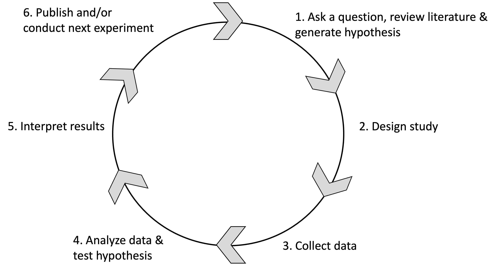
Figure 4.1: Overview of the scientific process.
To facilitate understanding of the material in this chapter, the six phases of the scientific process are grouped into three categories that reflect the progress of a study:
- Pre-study: includes phases 1 and 2
- Study: includes phases 3 to 5
- Post-study: includes phase 6
Distinguishing these categories is essential for ensuring the reproducibility and transparency of a study, and for avoiding common pitfalls described in the next section of this chapter.
For instance, treating the pre-study category as a distinct step in the scientific process promotes study pre-registration and helps prevent practices such as HARKing, p-hacking, and publication bias (see the Glossary section).
Recognizing the post-study category is equally important, as it encourages both pre- and post-publication review, thereby supporting improved dissemination and transparency of your research.
4.7 Identify and Define Threats to the Scientific Process
A hallmark of scientific creativity is the ability to recognize novel and unexpected patterns in data. However, a major challenge for scientists is remaining open to new and important insights while also avoiding the tendency to be misled by perceived structure in randomness.
This challenge is often driven by a combination of cognitive biases, including:
- Apophenia: the tendency to see patterns in random data.
- Confirmation bias: the tendency to focus on evidence that aligns with our expectations or preferred explanations.
- Hindsight bias (also known as the knew-it-all-along effect): the tendency to view events as having been predictable only after they have occurred.
These factors can easily lead us to false conclusions and therefore pose significant threats to the scientific process. Some of these threats—such as HARKing and p-hacking—are illustrated in Figure 4.2, and definitions are provided in the Glossary section.
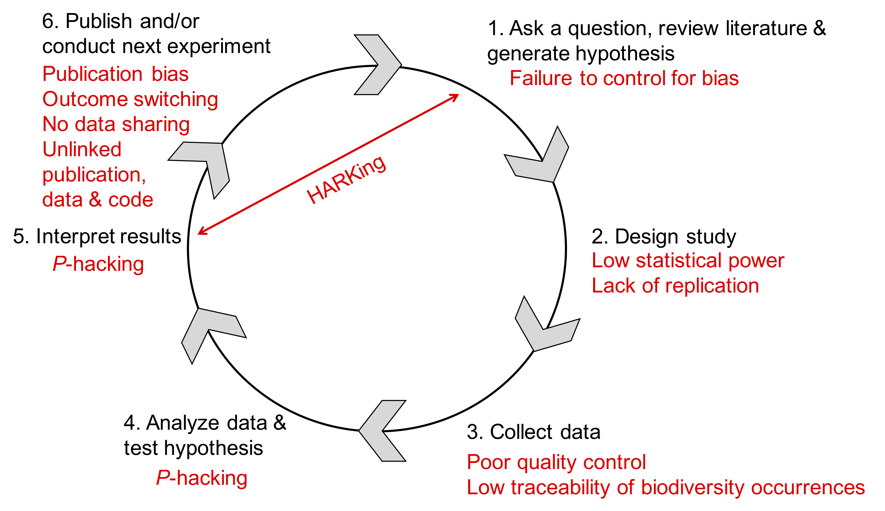
Figure 4.2: Overview of the scientific process and threats preventing reproducibility of the study (indicated in red). Abbreviations: HARKing: hypothesizing after the results are known; P-hacking: data dredging.
4.7.1 Glossary of Common Threats to the Scientific Process
Below are definitions of common threats to the scientific process (see Figure 4.2):
HARKing: Hypothesizing After the Results are Known. This occurs when a post hoc hypothesis—that is, a hypothesis developed based on or informed by the observed results—is presented in a research report as if it were an a priori hypothesis (formulated before the study).
Outcome switching: The practice of changing the study’s outcomes of interest after seeing the results. For example, a researcher may measure ten possible outcomes but then selectively report only those that show statistically significant results, intentionally or unintentionally. This increases the likelihood of reporting spurious findings by capitalizing on chance, while ignoring negative or non-significant results.
P-hacking: Also known as “data dredging,” this involves conducting multiple statistical tests on data and focusing only on those with significant results, rather than pre-specifying a hypothesis and performing a single appropriate test. This misuse inflates the chance of false positives by finding patterns that appear statistically significant but have no real underlying effect.
Publication bias: Also called the file drawer problem, this refers to the tendency for studies with positive, novel, or significant results to be published more often than studies with negative results or replications. As a result, the published literature overrepresents positive findings and can give a misleading impression of the strength of evidence.
4.8 Discuss Solutions to Mitigate Threats to the Scientific Process
The aim of this section is to discuss solutions for addressing threats to the scientific process by presenting measures that ensure reproducibility and transparency.
Following the framework proposed by Munafo et al. (2017), the measures covered in this section are organized into five categories that promote research reproducibility and transparency. When possible, these categories include specific working themes designed to minimize the threats discussed earlier (see Figure 4.2).
These measures are not intended to be exhaustive, but they provide a broad, practical, and evidence-based set of actions that can be implemented by researchers, institutions, journals, and funders. They also serve as a roadmap for students when designing their thesis projects.
4.8.1 Methods
This section outlines key measures that can be implemented during the research process—such as study design, methodology, statistical analysis, and collaboration—to improve scientific rigor, reproducibility, and transparency.
We have organized the content into the following themes:
- Protecting against cognitive biases
- Improving methodological training
- Strengthening the chain of evidence supporting the identification of biodiversity occurrences
- Implementing independent methodological support
- Encouraging collaboration and team science
4.8.1.1 Protecting Against Cognitive Biases
There is a substantial body of literature on the difficulty of avoiding cognitive biases. An effective strategy to mitigate self-deception and unwanted biases is blinding. In some research contexts, participants and data collectors can be blinded to the experimental conditions to which participants are assigned, as well as to the research hypotheses. Data analysts can also be blinded to key parts of the dataset. For example, during data preparation and cleaning (see Chapters 6 and 7), the identity of experimental conditions or variable labels can be masked so that outputs are not interpretable in terms of the research hypotheses.
Pre-registration of the study design, primary outcome(s), and analysis plan (see the Promoting Study Pre-registration section below) is another highly effective form of blinding, as the data do not yet exist and the outcomes are not yet known.
4.8.1.2 Improving Methodological Training
Research design and statistical analysis are deeply interconnected. Common misconceptions—such as misunderstanding p-values, the limitations of null hypothesis significance testing, the importance of statistical power, the accuracy of effect size estimates, and the likelihood that a statistically significant result will replicate—can all be addressed through improved statistical training. These topics are covered in BIOL603: Advanced Biometry.
4.8.1.3 Improving the Chain of Evidence Supporting Biodiversity Occurrences
4.8.1.3.1 Are occurrences in GBIF scientifically sound?
Primary biodiversity occurrence data are central to research in Ecology and Evolution. However, these data are no longer collected as they once were. The mass production of observation-based (OB) occurrences is displacing the collection of specimen-based (SB) occurrences. Troudet et al. (2018) analyzed 536 million occurrences from the Global Biodiversity Information Facility (GBIF)2 and found that, between 1970 and 2016, the proportion of occurrences traceable to tangible material (i.e., SB occurrences) dropped from 68% to 18%. Moreover, many of the remaining specimen-based occurrences could not be readily traced back to a physical specimen due to missing information.
This alarming trend—characterized by low traceability and, therefore, low confidence in species identification—threatens the reproducibility of biodiversity research. For instance, low-confidence identifications limit the utility of large databases for deriving insights into species distributions, ecological traits, conservation status, phylogenetic relationships, and more.
Troudet et al. (2018) advocate that SB occurrences must continue to be collected to allow replication of ecological and evolutionary studies and to support rich, diverse research questions. When SB collection is not possible, they suggest OB occurrences should be accompanied by ancillary data (e.g., photos, audio recordings, tissue samples, DNA sequences). Unfortunately, such data are often not shared. A more rigorous approach to data collection—including proper documentation of ancillary evidence—can help ensure that recently collected biodiversity data remain useful and scientifically credible.
4.8.1.3.2 Specimens Are More Than Just Dead Stuff Stored in Dusty Cabinets
Specimens deposited in natural history museums and botanical gardens serve critical roles in biodiversity research. They enable:
- Verification of species identifications
- Access to ecological data from specimen labels (e.g., GPS coordinates, habitat type, soil composition)
- Collection of morphological data (e.g., measuring phenotypic variation across a species’ range)
- Sampling of tissues to support further analyses, including:
- Molecular analyses (e.g., genotyping or sequencing)
- Anatomical studies
- Physiological analyses (e.g., stable isotope analysis for dietary inference)
- etc.
- Molecular analyses (e.g., genotyping or sequencing)
These additional data are invaluable during the data collection phase and enhance the rigor of hypothesis testing. While SB occurrences may present logistical challenges (especially in field ecology), we strongly encourage students to collect and document ancillary data to support their observations and ensure the reproducibility of their analyses.
4.8.1.4 Implementing Independent Methodological Support
The need for independent methodological oversight is well-established in some fields. For example, many clinical trials employ multidisciplinary steering committees to oversee study design and execution. These committees arose in response to known financial conflicts of interest in clinical research.
Involving independent researchers—particularly methodologists who have no personal or financial stake in the research question—can reduce bias and improve study quality. This can be done either at the level of individual research projects or coordinated through funding agencies.
4.8.1.5 Encouraging Collaboration and Team Science
Studies of statistical power consistently find it to be low—often below 50%—across time and disciplines (see Munafo et al., 2017 and references therein). Low statistical power increases the likelihood of both false positives and false negatives, making it ineffective for building reliable scientific knowledge.
Despite this, low-powered research persists due to poor incentives, limited understanding of statistical power, and a lack of resources. Team science offers a solution: instead of relying on the limited capacity of individual investigators, distributed collaboration across multiple research sites supports high-powered study designs. It also improves generalizability across populations and contexts, and fosters integration of multiple theoretical frameworks and research cultures into a single project.
4.8.2 Reporting and Dissemination
This section describes measures that can be implemented when communicating research, including (for example) reporting standards, study pre-registration, and the disclosure of conflicts of interest.
We have organized the content into the following themes:
- Promoting study pre-registration
- Improving the quality of reporting
- Promoting integration of publications, data, code, and analyses
The last theme is addressed in more detail in Chapter 2.
4.8.2.1 Promoting Study Pre-registration
Progress in science relies, in part, on generating hypotheses from existing observations and testing hypotheses with new observations.
The distinction between postdiction3 and prediction is well understood conceptually, but often not respected in practice. Confusing postdictions with predictions reduces the credibility of research findings. Cognitive biases—particularly hindsight bias—make it difficult to avoid this mistake.
An effective solution is to define the research questions and analysis plan before observing the outcomes — a process known as pre-registration. Pre-registration clearly distinguishes between analyses and outcomes that result from a priori hypotheses and those that arise post hoc. Various practical strategies now exist to implement pre-registration effectively, even in cases involving pre-existing data. Services to support pre-registration are now available across disciplines, and their growing adoption is contributing to increased research transparency and credibility.
At its simplest, study pre-registration (see Nosek et al., 2018) may involve the basic registration of study design. More thorough pre-registration includes detailed specifications of procedures, outcomes, and the statistical analysis plan.
Study pre-registration addresses two major problems:
- Publication bias
- Analytical flexibility (especially outcome switching)
Definitions of these terms are provided in the Glossary section.
4.8.2.2 Improving the Quality of Reporting
Pre-registration enhances the discoverability of research, but discoverability does not guarantee usability.
Poor usability occurs when it is difficult to evaluate what was done, replicate the methods to assess reproducibility, or incorporate findings into systematic reviews and meta-analyses.
Improving the quality and transparency of research reporting is therefore essential. This includes using standardized reporting guidelines, ensuring that methods and data are clearly described, and making materials available for reuse wherever possible.
4.8.3 Reproducibility
This section describes measures that can be implemented to support the verification of research, including, for example, sharing data and methods.
4.8.3.1 Promoting Transparency and Open Science
Science is a social enterprise: independent and collaborative groups work to accumulate knowledge as a public good.
The credibility of scientific claims is rooted in the evidence supporting them, which includes the methodology applied, the data collected, the process of methodology implementation, data analysis, and outcome interpretation. Claims become credible through community review, criticism, extension, and reproduction of the supporting evidence. However, without transparency, credibility relies solely on trust in the confidence or authority of the originator. Transparency is superior to trust.
Open science refers to the process of making both the content and the process of producing evidence and claims transparent and accessible to others.
Transparency is a scientific ideal, and therefore adding ‘open’ should be redundant. In practice, however, science often lacks openness: many published articles are not available to those without personal or institutional subscriptions, and most data, materials, and code supporting research outcomes are not publicly accessible (though this is rapidly changing thanks to several initiatives, such as the Dryad digital repository).
Much of the research process—for example, study protocols, analysis workflows, and peer review—is historically inaccessible, partly because there were few opportunities to make it accessible, even if desired. This has motivated calls for open access, open data, and open workflows (including analysis pipelines). However, substantial barriers remain, including vested financial interests (particularly in scholarly publishing) and limited incentives for researchers to adopt open practices.
4.8.3.2 Promoting Open Science is Good, but the “Open” Costs Fall onto Researchers…
To promote open science, several open-access journals have recently been established (e.g., BMC, Frontiers, PLoS). These journals facilitate the sharing of scientific research—including associated methods, data, and code—but they are often expensive, with fees averaging over $1500 per publication.
Waivers may be available for researchers based in certain countries, and some institutions sponsor these initiatives, allowing a number of papers to be published for “free” each year. However, if you do not qualify for such waivers or institutional support, it can be challenging to cover these costs without grant funding. For example, the NSF is making efforts to promote open science through funding support.
The EEB program may be able to support some of these costs, but support will vary depending on the yearly budget and timing of the request. This topic is explored further in Chapter 4.
4.8.4 Evaluation
This section describes measures that can be implemented when evaluating research, including, for example, peer review.
4.8.4.1 Diversifying Peer Review: Pre- and Post-publication Reviews
For most of the history of scientific publishing, two functions have been confounded: evaluation and dissemination. Journals have provided dissemination by sorting and delivering content to the research community, and gatekeeping via peer review to determine what is worth disseminating. However, with the advent of the internet, individual researchers are no longer dependent on publishers to bind, print, and mail their research to subscribers. Dissemination is now easy and can be controlled by researchers themselves (see examples of preprint publishers below).
With the increasing ease of dissemination, the role of publishers as gatekeepers is declining. Nevertheless, the other role of publishing—evaluation—remains a vital part of the research enterprise. Conventionally, a journal editor selects a limited number of reviewers to assess the suitability of a submission for a particular journal. However, more diverse evaluation processes are now emerging, allowing the collective wisdom of the scientific community to be harnessed. For example, some preprint services support public comments on manuscripts, a form of pre-publication review that can be used to improve the manuscript (see below). Other platforms, such as PubMed Commons and PubPeer, offer public forums to comment on published works, facilitating post-publication peer review. At the same time, some journals are trialing ‘results-free’ review, where editorial decisions to accept are based solely on the rationale and study methods (i.e., results-blind; for instance, PLoS ONE applies this approach).
Both pre- and post-publication peer review mechanisms dramatically accelerate and broaden the evaluation process. By sharing preprints, researchers can obtain rapid feedback on their work from a diverse community, rather than waiting several months for a few reviews in the conventional, closed peer review process. Using post-publication services, reviewers can make positive and critical commentary on articles instantly, rather than relying on the laborious, uncertain, and lengthy process of authoring a commentary and submitting it to a publishing journal for possible publication.
4.8.4.2 Preprint Services to Disseminate Your Research Early and Receive Feedback
bioRxiv (pronounced “bio-archive”) is a free online archive and distribution service for unpublished preprints in the life sciences. It is operated by Cold Spring Harbor Laboratory, a not-for-profit research and educational institution. By posting preprints on bioRxiv, authors can make their findings immediately available to the scientific community and receive feedback on draft manuscripts before submitting them to journals.
Articles on bioRxiv are not peer-reviewed, edited, or typeset before being posted online. However, all articles undergo a basic screening process to check for offensive and/or non-scientific content, potential health or biosecurity risks, and plagiarism. No endorsement of an article’s methods, assumptions, conclusions, or scientific quality by Cold Spring Harbor Laboratory is implied by its appearance on bioRxiv. An article may be posted prior to, or concurrently with, submission to a journal but should not be posted if it has already been accepted for publication.
PeerJ Preprints is a preprint server for the Biological Sciences, Environmental Sciences, Medical Sciences, Health Sciences, and Computer Sciences. A PeerJ Preprint is a draft of an article, abstract, or poster that has not yet been peer-reviewed for formal publication. Authors can submit a draft, incomplete, or final version of their work for free.
Submissions to PeerJ Preprints are not formally peer-reviewed. Instead, they are screened by PeerJ staff to ensure that they fit the subject area, do not contravene any policies, and can reasonably be considered part of the academic literature. Submissions deemed unsuitable in any of these respects will not be accepted for posting. Content considered non-scientific or pseudo-scientific will not pass screening.
4.8.5 Incentives
Publication is the currency of academic science, influencing employment, funding, promotion, and tenure. However, not all research is equally publishable. Positive, novel, and clean results are more likely to be published than negative findings, replications, or results with loose ends. Consequently, researchers are incentivized to produce the former, sometimes at the expense of accuracy (see Nosek et al., 2012). These incentives ultimately increase the likelihood of false positives in the published literature. Changing these incentives offers an opportunity to enhance the credibility and reproducibility of published results.
Funders, publishers, societies, institutions, editors, reviewers, and authors all contribute to the cultural norms that create and sustain dysfunctional incentives. Therefore, shifting incentives requires a coordinated effort by all stakeholders to alter reward structures. While there will always be incentives for innovative outcomes—rewarding those who discover new things—there can also be incentives for efficiency and rigor. Researchers who conduct transparent, rigorous, and reproducible research should be rewarded more than those who do not.
Promising examples of effective interventions include journals adopting:
- Badges to acknowledge open practices.
- Registered Reports as a results-blind publishing model.
- TOP (Transparency and Openness Promotion) guidelines to promote openness and transparency.
Collectively, and at scale, these efforts can shift incentives so that what benefits the scientist also benefits science—encouraging rigorous, transparent, and reproducible research that produces credible results.
4.9 The Transparency and Openness Promotion Guidelines
The Transparency and Openness Promotion (TOP) guidelines (published in Nosek et al., 2015) provide a framework for journals and funders to incentivize or require greater transparency in the planning and reporting of research. The guidelines consist of eight modular standards, each with three levels of increasing stringency (see Figure 4.4). Journals choose which of the eight standards to adopt and at what level, allowing flexibility that accommodates disciplinary differences while establishing community-wide transparency standards.
4.9.1 TOP Transparency Modular Standards
The eight modular standards are:
- Citation standards: Proper citation of data sets and other research outputs.
- Data transparency: Archiving and sharing of research data.
- Analytic methods transparency: Archiving and sharing of analytic code.
- Research materials transparency: Archiving and sharing of materials used in the research.
- Design and analysis transparency: Reporting detailed methods and results.
- Pre-registration of studies: Registering study plans prior to initiation.
- Pre-registration of analysis plans: Registering analysis plans before conducting the study.
- Replication: Conducting studies designed to replicate previously published research.
Each standard has three levels of transparency (Level 1, Level 2, and Level 3) reflecting increasing rigor (see Figure 4.4). Journals select levels based on their readiness and disciplinary norms, balancing implementation feasibility with the desire for stronger transparency requirements.
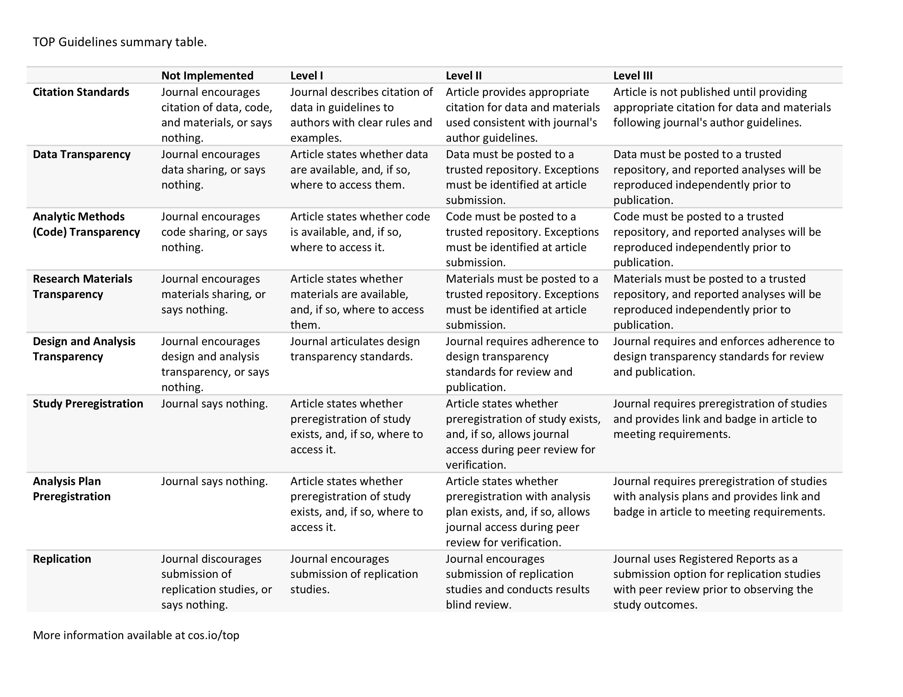
Figure 4.3: Table presenting the TOP standards and their associated levels of transparency.
Over 1,000 journals and organizations had adopted one or more TOP-compliant policies as of August 2018, including Ecology Letters, The Royal Society, and Science. The full list of journals implementing the TOP guidelines can be found here: https://osf.io/2sk9f/
4.9.2 Promoting Linkage of Publication, Data, Code, and Analyses into a Unified Environment
The material in Chapter 1 on R Markdown (as used in RStudio) addresses the need for a unified environment that links publications, code, and data.
The Center for Open Science offers a platform called the Open Science Framework (OSF) to support this goal (see Figure 4.4). OSF is a free, open-source project management and repository platform designed to assist researchers throughout the entire project life cycle.
As a collaboration tool, OSF allows researchers to work privately with selected collaborators or to make parts or all of their projects publicly accessible, with citable and discoverable DOIs for broader dissemination.
As a workflow system, OSF integrates with many existing research tools, enabling researchers to manage their entire projects from one place. This connectivity helps eliminate data silos and information gaps by allowing tools to work together seamlessly, reflecting how researchers actually collaborate and share knowledge (see Figure 4.4).
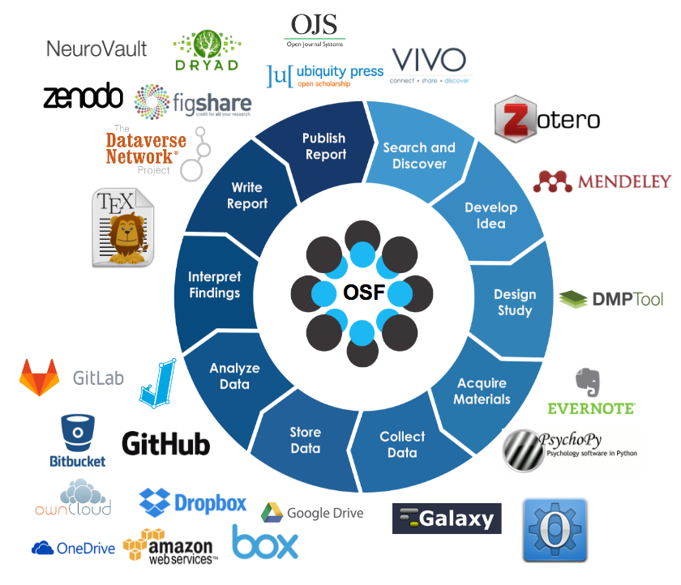
Figure 4.4: Overview of the OSF workflow and connections with other widely used software.
5 Chapter 4
5.1 Challenge
Today, funding agencies and journals are increasingly promoting Open Science, a topic we began discussing in Chapter 3. In this context:
Balancing the promotion of Open Science to support reproducibility with the values of your stakeholders can be a challenging task.
5.2 Aim
This chapter aims to explore how Open Science is promoted while recognizing when other principles, like the CARE Principles, must be applied to respect diverse perspectives, values, and data sovereignty.
It also provides solutions to address threats to the scientific process (introduced in Chapters 1 and 3) and guidance on managing the data life cycle and responsibly sharing research.
5.3 Learning Outcomes
By the end of this chapter, you will be able to:
- Understand what Open Science is
- Identify and describe the seven pillars of Open Science:
- Explain the Open Access mechanism and how it supports Open Science
- Describe the purpose and use of Creative Commons licenses in scientific publications
- Understand the CARE Principles and data sovereignty, especially concerning Indigenous Peoples
5.4 Resources
This chapter is based on:
Web resources
- Albertsons library: https://www.boisestate.edu/library/
- Altmetric: https://www.altmetric.com/
- BSU Office of Research Compliance: https://www.boisestate.edu/research-compliance/
- CARE Principles: https://www.gida-global.org/care
- Creative Common: https://creativecommons.org/
- DORA Declaration: https://sfdora.org/
- FAIR Principles: https://www.go-fair.org/fair-principles/
- LERU Roadmap for Open Science: https://www.leru.org/publications/open-science-and-its-role-in-universities-a-roadmap-for-cultural-change#
- United Nations Declaration on the Rights of Indigenous Peoples: https://www.un.org/development/desa/indigenouspeoples/declaration-on-the-rights-of-indigenous-peoples.html
Publications
- Carroll SR, Herczog E, Hudson M, Russell K, Stall S (2021)., “Operationalizing the CARE and FAIR Principles for Indigenous data, futures.” Scientific Data, 8(1), 108. ISSN 2052-4463,, doi:10.1038/s41597-021-00892-0, https://doi.org/10.1038/s41597-021-00892-0,, https://doi.org/10.1038/s41597-021-00892-0.
- Groom Q, Weatherdon L, Geijzendorffer IR (2017). “Is citizen science an, open science in the case of biodiversity observations?” Journal of, Applied Ecology, 54(2), 612-617. doi:10.1111/1365-2664.12767, https://doi.org/10.1111/1365-2664.12767,, https://besjournals.onlinelibrary.wiley.com/doi/pdf/10.1111/1365-2664.12767,, https://besjournals.onlinelibrary.wiley.com/doi/abs/10.1111/1365-2664.12767.
- Khoo SY (2019). “Article Processing Charge Hyperinflation and Price, Insensitivity: An Open Access Sequel to the Serials Crisis.” LIBER, Quarterly: The Journal of the Association of European Research, Libraries, 29(1), 1–18. doi:10.18352/lq.10280, https://doi.org/10.18352/lq.10280,, https://liberquarterly.eu/article/view/10729.
- Wagenknecht K, Woods T, Sanz FG, Gold M, Bowser A, Rüfenacht S,, Ceccaroni L, Piera J (2021). “EU-Citizen.Science: A Platform for, Mainstreaming Citizen Science and Open Science in Europe.” Data, Intelligence, 3(1), 136-149. ISSN 2641-435X,, doi:10.1162/dint_a_00085 https://doi.org/10.1162/dint_a_00085,, https://direct.mit.edu/dint/article-pdf/3/1/136/1893818/dint\_a\_00085.pdf,, https://doi.org/10.1162/dint%5C_a%5C_00085.
- Wilkinson MD, Dumontier M, Aalbersberg IJ, Appleton G, Axton M, Baak A,, Blomberg N, Boiten J, da Silva Santos LB, Bourne PE, Bouwman J, Brookes, AJ, Clark T, Crosas M, Dillo I, Dumon O, Edmunds S, Evelo CT, Finkers, R, Gonzalez-Beltran A, Gray AJ, Groth P, Goble C, Grethe JS, Heringa J,, ’t Hoen PA, Hooft R, Kuhn T, Kok R, Kok J, Lusher SJ, Martone ME, Mons, A, Packer AL, Persson B, Rocca-Serra P, Roos M, van Schaik R, Sansone, S, Schultes E, Sengstag T, Slater T, Strawn G, Swertz MA, Thompson M,, van der Lei J, van Mulligen E, Velterop J, Waagmeester A, Wittenburg P,, Wolstencroft K, Zhao J, Mons B (2016). “The FAIR Guiding Principles for, scientific data management and stewardship.” Scientific Data, 3(1),, 160018. ISSN 2052-4463, doi:10.1038/sdata.2016.18, https://doi.org/10.1038/sdata.2016.18,, https://doi.org/10.1038/sdata.2016.18.
5.5 What is Open Science?
The Organisation for Economic Co-operation and Development (OECD) defines Open Science as:
“to make the primary outputs of publicly funded research results – publications and the research data – publicly accessible in digital format with no or minimal restriction.”
While this definition focuses on access to research outputs, several other organizations advocate for a broader view of Open Science. According to the FOSTER Open Science initiative, Open Science involves:
“extending the principles of openness to the whole research cycle, fostering sharing and collaboration as early as possible, thus entailing a systemic change to the way science and research is done.”
5.6 What are the Pillars of Open Science?
The 7 pillars of Open Science are:
- FAIR Data
- Research Integrity
- Next Generation Metrics
- Future of Scholarly Communication
- Citizen Science
- Education and Skills
- Rewards and Initiatives
5.6.1 FAIR Data
The FAIR Principles (Wilkinson et al., 2016) guide researchers in ensuring that research outputs are (Figure 5.1):
- Findable: Research outputs should be discoverable by the broader academic community and the public.
- Accessible: Data should be accompanied by unique identifiers, metadata, and clear language, using standardized access protocols.
- Interoperable: Data and metadata should follow recognized standards that allow them to be shared and integrated across systems. Interoperability means that different tools, platforms, or systems can connect and communicate seamlessly, without extra effort from the user.
- Reusable: Research outputs should be designed for reuse and re-purposing, allowing others to maximize their research potential.
💡 Why FAIR Matters:
- Reduces barriers to accessing and using research outputs.
- Helps secondary researchers find, understand, and reuse data to generate new insights.
- Maximizes the value of existing research resources.
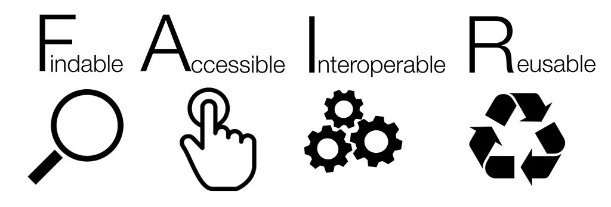
Figure 5.1: The FAIR Principles (source: SangyaPundir, CC BY-SA 4.0).
5.6.1.1 The FAIR Guiding Principles
Wilkinson et al. (2016) outline a set of guidelines that support the implementation of the FAIR Principles. These guidelines ensure that data and metadata are structured in a way that promotes discovery, access, integration, and reuse.
- To be Findable:
- F1. (Meta)data are assigned a globally unique and persistent identifier.
- F2. Data are described with rich metadata (as defined by R1 below).
- F3. Metadata clearly and explicitly include the identifier of the data they describe.
- F4. (Meta)data are registered or indexed in a searchable resource.
- F1. (Meta)data are assigned a globally unique and persistent identifier.
- To be Accessible:
- A1. (Meta)data are retrievable by their identifier using a standardized communication protocol.
- A1.1. The protocol is open, free, and universally implementable.
- A1.2. The protocol allows for authentication and authorization, where necessary.
- A1.1. The protocol is open, free, and universally implementable.
- A2. Metadata remain accessible even when the data are no longer available.
- A1. (Meta)data are retrievable by their identifier using a standardized communication protocol.
- To be Interoperable:
- I1. (Meta)data use a formal, accessible, shared, and broadly applicable language for knowledge representation.
- I2. (Meta)data use vocabularies that themselves follow FAIR principles.
- I3. (Meta)data include qualified references to other (meta)data.
- I1. (Meta)data use a formal, accessible, shared, and broadly applicable language for knowledge representation.
- To be Reusable:
- R1. (Meta)data are richly described with a plurality of accurate and relevant attributes.
- R1.1. (Meta)data are released with a clear and accessible data usage license.
- R1.2. (Meta)data are associated with detailed provenance.
- R1.3. (Meta)data conform to domain-relevant community standards.
- R1.1. (Meta)data are released with a clear and accessible data usage license.
- R1. (Meta)data are richly described with a plurality of accurate and relevant attributes.
5.6.2 Research Integrity
Research integrity refers to the commitment of researchers to act honestly, reliably, respectfully, and to be accountable for their actions throughout the research process.
At Boise State University, the Office of Research Compliance provides resources and guidance to support best practices in research integrity.
5.6.3 Next Generation Metrics
The Next Generation Metrics pillar of Open Science aims to shift cultural thinking around how research is evaluated. It encourages moving beyond traditional metrics—such as citation counts and journal impact factors—toward more diverse, meaningful indicators of research quality and influence.
These metrics, drawn from a variety of sources and describing different aspects of scholarly impact, can help us gain a broader and more nuanced understanding of the significance and reach of research.
In this chapter, we demonstrate this topic with two examples:
5.6.3.0.1 The San Francisco Declaration on Research Assessment
The San Francisco Declaration on Research Assessment (DORA) exemplifies the growing shift in how research quality is evaluated. Increasingly, institutions and funding bodies are supporting DORA and openly rejecting the use of journal impact factors and other quantitative metrics as primary indicators of research quality.
Among many others, Springer Nature has endorsed DORA. You can view their specific commitments here.
5.6.3.0.2 Altmetric
Another example is Altmetric, a tool that tracks and demonstrates the reach and influence of research outputs—particularly among key stakeholders—by focusing primarily on social media and other online platforms (Figure 5.2).
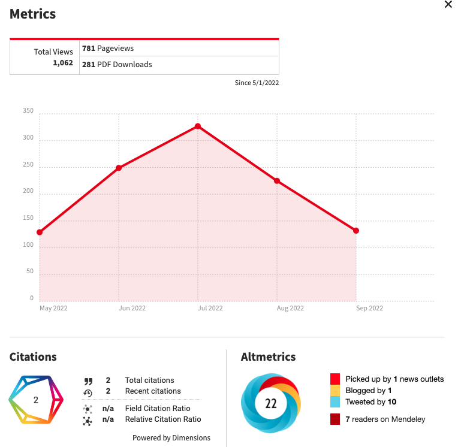
Figure 5.2: Example of new metrics associated to publications to assess impact of research beyond the impact factor.
5.6.4 Future of Scholarly Communication
The future of scholarly communication is one of the most prominent pillars of Open Scholarship, as it aims to shift the current academic publishing model toward fully Open Access. We will explore this topic further in the section on Open Access and associated licenses below.
5.6.5 Citizen Science
Citizen Science refers to the increased involvement of the public in the research process, recognizing the invaluable insights that non-academic contributors can offer. These contributions often provide perspectives or data that researchers might not otherwise access. Examples of such initiatives include eBird and iNaturalist.
Leveraging the internet, openly available tools, and local knowledge, citizen science is transforming how research is conducted. No longer limited to academic researchers, it encourages collaboration across society.
Wagenknecht et al. (2021) discuss this concept through a European Citizen Science project, while Groom et al. (2017) reflect on its role in biodiversity research. Citizen science has the potential to significantly enhance your research—but it’s important to be aware of its challenges. For more on this topic, refer to this section in Chapter 3.
5.6.6 Education and Skills
This pillar focuses on identifying researchers’ training needs and addressing gaps in knowledge and skills related to Open Science—such as making publications openly accessible, managing research data in alignment with the FAIR Principles (Figure 5.1), and upholding research integrity.
All researchers, regardless of career stage, should have access to training and professional development opportunities that support Open Science practices. Additionally, skills development should be extended to other stakeholders in the research ecosystem, including librarians, data managers, and the public, particularly in support of citizen science initiatives.
At Boise State University, the Albertsons Library offers resources, workshops, and seminars on these topics.
5.6.7 Rewards and Initiatives
Promoting engagement with Open Science requires recognizing and rewarding the efforts of those who contribute to it. This pillar addresses systemic barriers while advocating for best practices.
A common barrier is the perceived lack of recognition for tasks such as managing research data or publishing open access. These efforts are often undervalued in traditional academic assessments, discouraging wider adoption of Open Science practices.
Work under this pillar seeks to overcome these challenges and promote greater participation in Open Science. For more on current initiatives and reward systems, refer to Chapter 3.
5.7 Open Access: A Tool to Promote Open Science?
Open Access (OA) refers to a set of principles and practices that make research outputs freely available online, without access charges or other barriers (Figure 5.3). While OA publications are free for users to read, researchers often pay publication fees—typically between $1,500 and $2,500—to make their work openly accessible.
According to the 2001 definition of Open Access, it also involves removing or reducing barriers to copying and reuse by applying an open license. An open license allows others to reuse a creator’s work freely, in ways that are typically restricted by copyright, patent, or commercial licenses.
Most open licenses are:
- Worldwide in scope
- Royalty-free
- Non-exclusive
- Perpetual (they do not expire)
These characteristics ensure that research can be reused, adapted, and redistributed in alignment with the goals of Open Science.
5.7.1 The Open Access Conundrum
Since most Open Access (OA) journals rely on publication fees paid by authors to generate revenue, there is concern that some OA publishers may be motivated to accept lower-quality papers and forgo rigorous peer review in order to maximize profits.
At the same time, publication fees in prestigious OA journals can exceed $5,000, making this publishing model inaccessible for many researchers, particularly those without institutional funding or support.
This situation has been described as the “Open Access sequel to the Serials Crisis” (Khoo, 2019). The original Serials Crisis refers to the unsustainable pressure on library budgets caused by the rapid inflation of journal subscription costs. Open Access was initially proposed as a solution to this problem—by removing subscription barriers, research would remain accessible without ongoing costs. However, as Khoo (2019) notes, both traditional subscription models and Open Access publishing present their own challenges and limitations.
5.8 Creative Commons Licenses
Most Open Access journals use Creative Commons (CC) licenses, so it is important that you and your co-authors understand their implications before submitting your manuscript—especially regarding potential commercial use of your work by third parties (Figure 5.3).
A CC license is a type of public copyright license that enables the free distribution of a copyrighted work. It allows authors to grant others the right to share, use, and build upon their work while retaining some control over how it is used.
Creative Commons licenses provide flexibility; for example, authors can choose to allow only non-commercial uses. They also protect users and redistributors from copyright infringement claims, provided they follow the license terms set by the author.
To help authors select the most appropriate license for their work, the Creative Commons initiative offers an online tool, which I recommend consulting. For more detailed information on CC licenses, see this Wikipedia page.
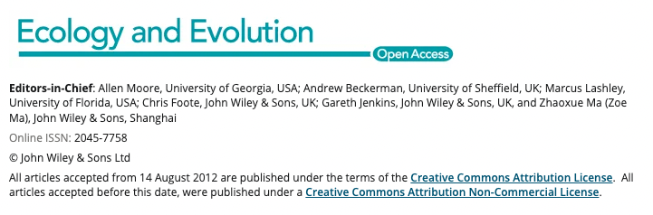
Figure 5.3: Front page of Ecology and Evolution, an open access journal publishing articles under the Creative Common licensing system.
5.8.1 Available CC Licenses
The Creative Commons licenses provided by the CC initiative are summarized in Figure 5.4.
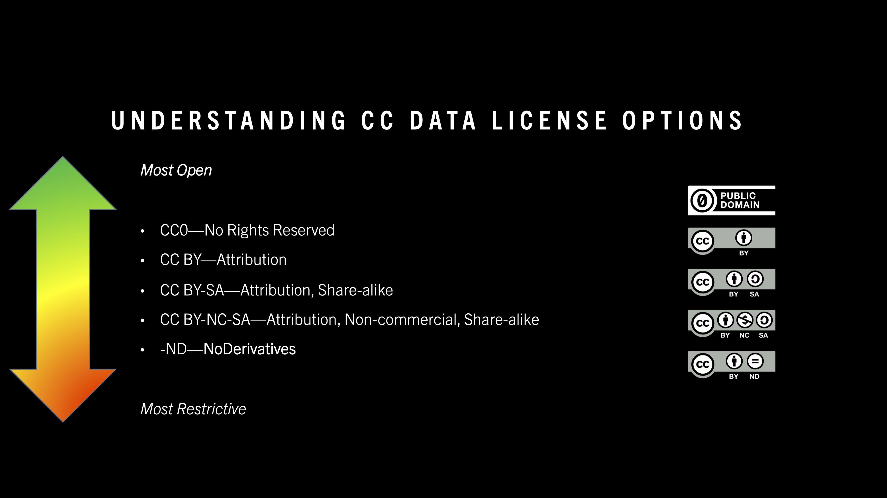
Figure 5.4: Overview of Creative Common licenses sorted from most open to most restrictive (provided by Andrew Child).
The description of these licenses is always presented in this format:
- You are free to:
- Share — copy and redistribute the material under specified conditions.
- Adapt — remix, transform, and build upon the material under specified conditions.
- Under the following terms:
- Attribution — give appropriate credit to the original author.
- No additional restrictions — you may not apply legal terms or technological measures that restrict others from doing anything the license permits.
Here is a list of some of the most commonly used CC licenses with URLs leading to their descriptions:
- Attribution 4.0 International (CC BY 4.0)
- Attribution-ShareAlike 4.0 International (CC BY-SA 4.0)
- Attribution-NoDerivatives 4.0 International (CC BY-ND 4.0)
- Attribution-NonCommercial-NoDerivatives 4.0 International (CC BY-NC-ND 4.0)
5.9 The CARE Principles and Data Sovereignty
In this chapter, we will investigate both the CARE Principles and Data Sovereignty, emphasizing how these concepts are closely connected.
As noted by Carroll et al. (2021):
“while big data, open data, and Open Science increase access to complex and large datasets for innovation, discovery, and decision-making, Indigenous Peoples’ rights to control and access their data within these environments remain limited.”
Integrating the FAIR Principles for scientific data with the CARE Principles for Indigenous Data Governance enhances machine actionability while prioritizing people and purpose. This combined approach supports Indigenous Peoples’ rights and interests in their data throughout the data lifecycle (Figure 5.5).

Figure 5.5: Be FAIR and CARE (source: https://www.gida-global.org/care).
5.9.1 The CARE Principles
The CARE Principles detail that the use of Indigenous data should result in tangible benefits for Indigenous collectives through inclusive development and innovation, improved governance and citizen engagement, and result in equitable outcomes.
Collective benefit is more likely to be realized when data ecosystems are designed to support Indigenous nations and when the use/reuse of data for resource allocation is consistent with community values. The United Nations Declaration on the Rights of Indigenous Peoples asserts Indigenous Peoples’ rights and interests in data and their authority to control their data. Access to ‘data for governance’ is vital to support self-determination and Indigenous nations should be actively involved in ‘governance of data’ to ensure ethical reuse of data. Given the majority of Indigenous data is controlled by non-Indigenous institutions there is a responsibility to engage respectfully with those communities to ensure the use of Indigenous data supports capacity development, increasing community data capabilities, and the strengthening of Indigenous languages and cultures. Similarly, Indigenous Peoples’ ethics should inform the use of data across time in order to minimize harm, maximize benefits, promote justice, and allow for future use (see Carroll et al., 2021 for more details).
5.9.2 Data Sovereignty
The CARE Principles (Figure 5.5) are directly connected to the concept of data sovereignty. We provide a definition here because it is especially important for this course, as data sovereignty can impact your data sharing protocols. More on this topic will be discussed in Chapter 5.
Data sovereignty is the idea that data are subject to the laws and governance structures of the nation where they are collected. This concept is closely linked with data security, cloud computing, network sovereignty, and technological sovereignty. Unlike technological sovereignty, which is vaguely defined and often used as an umbrella term in policymaking, data sovereignty specifically concerns the governance of data itself.
Data sovereignty is usually discussed in two contexts: Indigenous groups and their autonomy from post-colonial states, and the control of transnational data flows. With the rise of cloud computing, many countries have enacted laws governing data control and storage, reflecting measures of data sovereignty. More than 100 countries now have data sovereignty laws in place.
In the context of self-sovereign identity (SSI), individuals can fully create and control their credentials, although nations may still issue digital identities within this framework.
6 Chapter 5
6.1 Introduction
This chapter is subdivided into two parts as follows:
6.2 Data management
6.2.1 Introduction
Good data management is fundamental to research excellence. It produces high-quality research data that are accessible to others and usable in the future (see TOP guidelines in chapter 3). The value of data is now explicitly acknowledged through citations (e.g. GBIF and Dryad repositories provide DOIs to cite datasets) so researchers can make a difference to their own careers, as well as to their fields of research, by sharing and making data available for reuse. These citations have to be directly included in publications in devoted sections usually entitled “Data Availability Statement” located at the end of the article (see Figure 6.1 for an example).
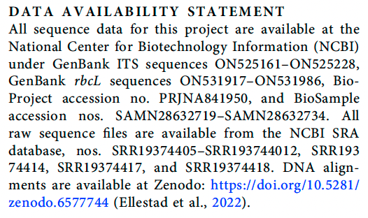
Figure 6.1: Example of a Data Availability Statement.
This chapter aims at helping students navigate data management firstly by explaining what data and data management are and why data sharing is important, and secondly by providing advice and examples of best practice in data management.
6.2.2 Learning outcomes
- Learn what are the different types of research data and their specificity.
- Provide an overview of the data life-cycle.
- Highlight the benefits of good data management.
- Study best-practices to planning data management.
6.2.3 Literature and web resources
This chapter is based on:
- British Ecological Society (2014a) – A Guide to Data Management in Ecology and Evolution published by the British Ecological Society.
- UK Managing and Sharing Research Data handbook: https://data-archive.ac.uk/media/2894/managingsharing.pdf
- The companion website presenting material for UK Managing and Sharing Research Data handbook: https://www.ukdataservice.ac.uk/manage-data/handbook/
- Digital Object Identifier (DOI): https://www.doi.org/index.html
- ASCII or American Standard Code for Information Interchange used by computers to ensure data are readable by a maximum number of software programs
- Dryad Data Repository: https://datadryad.org/stash
- Zenodo Data Repository: https://zenodo.org/
6.2.4 Teaching material
The presentation slides for Chapter 5 - part A can be downloaded here.
6.2.5 What are research data?
Research data are the factual pieces of information used to test research hypotheses. Data can be classified into five categories:
- Observational: Data which are tied to time and place and are irreplaceable (e.g. field observations, weather station readings, satellite data).
- Experimental: Data generated in a controlled or partially controlled environment, which can be reproduced, although it may be expensive to do so (e.g. field plots or greenhouse experiments, chemical analyses).
- Simulation: Data generated from models (e.g. climate or population modelling).
- Derived: Data which are not collected directly but inferred from (an)other data file(s) (e.g. a population biomass which has been calculated from population density and average body size data).
- Metadata: Data about data (more about this category later).
A key challenge facing researchers today is the need to work with different data sources. It is not uncommon for projects to integrate any combination of data types into a single analysis, even drawing on data from disciplines outside Ecology and Evolution. As research becomes increasingly collaborative and interdisciplinary, issues surrounding data management are growing in prevalence.
6.2.6 The data life cycle
Data have a longer lifespan than the project they were created for, as illustrated by the data life-cycle displayed in Figure 6.2.
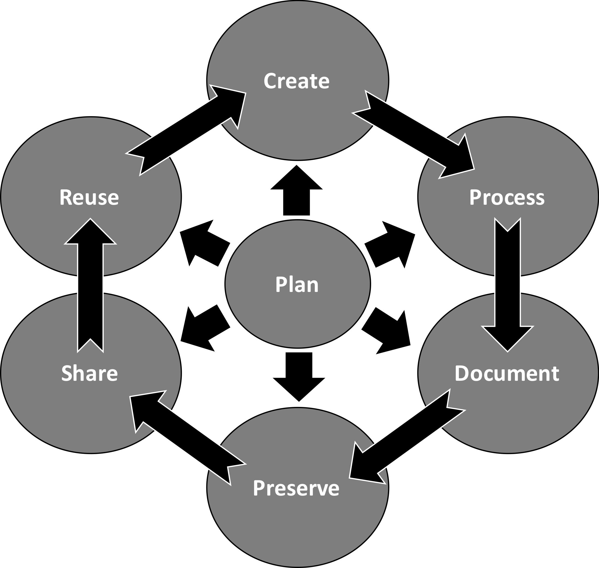
Figure 6.2: The data lifecycle
Some projects may only focus on certain parts of the data life-cycle, such as primary data creation, or reusing others’ data. Other projects may go through several revolutions of the cycle. Either way, most researchers will work with data at all stages throughout their career.
6.2.7 Why should I manage data?
Data management concerns how you plan for all stages of the data life-cycle and implement this plan throughout the research project. Done effectively it will ensure that the data life-cycle is kept in motion. It will also keep the research process efficient and ensure that your data meet all the expectations set by you, funders, research institutions, legislation and publishers (e.g. copyright, data protection).
In order to bring some perspective on this topic, ask yourself this question:
Would a colleague be able to take over my project tomorrow if I disappeared, or make sense of the data without talking to me?
If you can answer YES, then you are managing your data well!
6.2.7.1 The benefits of good data management include:
- Ensuring data are accurate, complete, authentic and reliable.
- Increasing research efficiency.
- Saving time and money in the long run – ‘undoing’ mistakes is frustrating.
- Meeting funder requirements.
- Minimizing the risk of data loss.
- Preventing duplication by others.
- Facilitating data sharing.
6.2.9 Planning data management
Regardless of whether your funder requires you to have a data management or sharing plan as part of a grant application, having such a plan in place before you begin your research project will mean that you are prepared for any data management issues that may come your way (see the Data management checklist section below).
6.2.9.1 Before you start planning
Here are few things that you should consider before planning your data management workflow:
- Check funder specifications for data management plans.
- Consult with your institution (especially regarding resources and policies).
- Consider your budget.
- Talk to your supervisor, colleagues and collaborators.
6.2.9.2 What are the key things to consider when planning?
- Time: Writing a data management plan may well take a significant amount of time. It is not as simple as filling out a template or working through a checklist of things to include. Planning for data management should be thorough before the research project starts to ensure that data management is embedded throughout the research process.
- Design according to your needs: Data management should be planned and implemented with the purpose of the research project in mind.
- Roles and responsibilities: Creating a data management plan may be the responsibility of one single person, but data management implementation may involve various people at different stages. One of the major uses of a data management plan is to enable coordinated working and communication among researchers on a project.
- Review: Plan how data management will be reviewed throughout the project and adapted if necessary; this will help to integrate data management into the research process and ensure that the best data management practices are being implemented. Reviewing will also help to catch any issues early on, before they turn into bigger problems.
6.2.10 Creating data
In the data life-cycle (Figure 6.2), creating datasets occurs as a researcher collects data in the field or lab, and digitizes them to end up with a raw dataset.
# Workflow associated with creating data
Collect data (in the field and/or lab) --> Digitize data --> Raw dataset
!! Perform quality checks @ each step to validate data !!Quality control during data collection is important because often there is only one opportunity to collect data from a given situation. Researchers should be critical of methods before collection begins – high-quality methods will result in high-quality data. Likewise, when collection is under way, detailed documentation of the collection process should be kept as evidence of quality.
6.2.10.1 Key things to consider during data collection
- Logistical issues in the field (what are the challenges associated with your fieldwork (e.g. no power to re-charge your batteries?).
- Calibration of instruments (is the balance that I plan using accurate enough to weigh my samples?).
- Taking multiple measurements/observations/samples (to e.g. ensure statistical accuracy or cover genetic variation within population).
- Creating a template (and associated protocols) for use during data collection to ensure that all information is collected consistently, especially if there are multiple collectors.
- Describing any conditions during data collection that might affect the quality of the data (e.g. impact of weather conditions, tropical storm, on wildlife observations).
- Creating an accompanying questionnaire for multiple collectors, asking them any questions which may affect the quality of the data (this could account for slight differences observed during analytical phase of project. In other words, account for the effect of data collecting on analyses).
- Widening the possible applications of data, and therefore increasing their impact, by adding variables and parameters to data. For instance, wider landscape variables, which will encourage reuse and potentially open up new avenues for research.
6.2.11 Data digitization
Data may be collected directly in a digital form using devices that feed results straight into a computer/tablet or they may be collected as hand-written notes. Either way, there will be some level of processing involved to end up with a digital raw dataset.
Key things to consider during data digitization include:
- Designing a database structure to organize data and data files (i.e. making sure that observations have unique IDs).
- Using a consistent format for each data file – e.g. one row represents a complete record and the columns represent all the parameters that make up that record (this is known as spreadsheet format).
- Atomizing data – make sure that only one piece of data is in each entry (this greatly helps analyses).
- Using plain text characters (e.g. ASCII, which stands for American Standard Code for Information Interchange used for computers) to ensure data are readable by a maximum number of software programs.
- Using code – coding assigns a numerical value to variables and allows for statistical analysis of data. Keep coding simple.
- Describing the contents of your data files in a
Readme.txtfile or even better in protocol files (later attached as appendixes of your manuscript), or other metadata standard, including a definition of each parameter, the units used and codes for missing values. - Keeping raw data raw.
6.2.12 Processing data
Data should be processed into a format that is suited to subsequent analyses and ensures long-term usability. Data are at risk of being lost if the hardware and software originally used to create and process them are rendered obsolete. Therefore, data should be well organized, structured, named and versioned in standard formats that can be interpreted in the future (see the Data structure and organisation of files section below).
Here are some guidelines to ensure best processing of data (Figure 6.2):
- File formats: Data should be written in non-proprietary formats, also known as open standard formats. These files can be used and implemented by anyone, as opposed to proprietary formats which can only be used by those with the correct software installed. The most common format used for spreadsheet data are comma-separated values files (
.csv). Other non-proprietary formats include: plain text files (.txt) for text; andGIF,JPEGandPNGfor images. - File names and folders: To keep track of data and know how to find them, digital files and folders should be structured and well organized. Use a folder hierarchy that fits the structure of the project and ensure that it is used consistently. Drawing a folder map which details where specific data are saved may be particularly useful if others will be accessing folders, or if there is simply a lot to navigate (store this information in the
Readme.txtfile). - File names should be:
- unique,
- descriptive,
- succinct,
- naturally ordered and consistent,
- describing the project, file contents, location, date, researcher’s initials and version.
- File names should not include spaces – these can cause problems with scripting and metadata.
- Quality assurance: Checking that data have been edited, cleaned, verified and validated to create a reliable masterfile which will become the basis for further analyses (tyding up data so that they are ready for analyses). Use a scripting language, such as R, to process your data for quality checking so that all steps are documented.
Assurance checks may include:- Identifying estimated values, missing values or double entries.
- Performing statistical analyses to check for questionable or impossible values and outliers (which may just be typos from data entry).
- Checking the format of the data for consistency across the dataset.
- Checking the data against similar data to identify potential problems.
- Version control: Once the masterfile has been finalized, keeping track of ensuing versions of this file can be challenging, especially if working with collaborators in different locations. A version control strategy will help locate required versions, and clarify how versions differ from one another.
Version control best practice includes:- Deciding how many and which versions to keep.
- Using a systematic file naming convention, using filenames that include the version number and status of the file (e.g. v1_draft, v2_internal, v3_final).
- Record what changes took place to create the version in a separate file (e.g. a version table).
- Mapping versions if they are stored in different locations.
- Synchronizing versions across different locations.
- Ensuring any cross-referenced information between files is also subject to version control.
6.2.13 Data structure and organisation of files
Inferring the directory tree structure of your project provides a simple and efficient way to summarize the data structure and organization of files related to your project (see above). In UNIX, this can be easily achieved by using the tree package as shown in Figure 6.3.
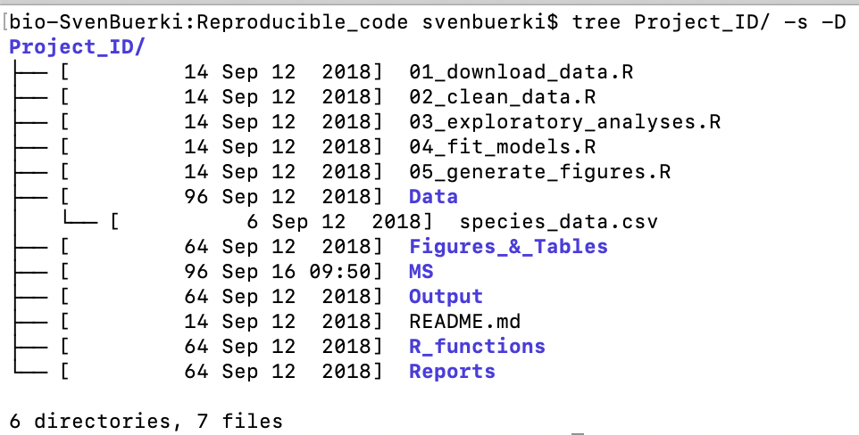
Figure 6.3: Infer directory tree structure using the UNIX tree package.
6.2.13.1 The UNIX tree package: A way to support data structure & organisation
The UNIX tree package was used here to infer the directory structure of the folder Project_ID/ and several arguments were set to obtain data on files that could be used to check for file names and location as well as version control:
-s: Print the size of each file in bytes along with the name.-D: Print the date of the last modification time or if-cis used, the last status change time for the file listed.
To install the tree package on your Mac, do the following:
#Install tree by typing the following code in a terminal
brew install tree6.2.14 Documenting data
Producing good documentation and metadata ensures that data can be understood and used in the long term (Figure 6.2). Documentation (i.e. the manual associated with your data) describes the data, explains any manipulations and provides contextual information – no room should be left for others to misinterpret the data.
All documentation requirements should be identified at the planning stages so you are prepared for it during all stages of the data life-cycle, particularly during data creation and processing. This will avoid having to perform a rescue mission in situations where you have forgotten what has happened or when a collaborator has left without leaving any key documentation behind.
Data documentation includes information at project and data levels and should cover the following information.
6.2.14.1 Project level
- The project aim, objectives and hypotheses.
- Personnel involved throughout the project, including who to contact with questions.
- Details of sponsors.
- Data collection methods, including details of instrumentation and environmental conditions during collection, copies of collection instructions if applicable.
- Standards used.
- Data structure and organisation of files (see Figure 6.3).
- Software used to prepare and read the data.
- Procedures used for data processing, including quality control and versioning and the dates these were carried out.
- Known problems that may limit data use.
- Instructions on how to cite the data.
- Intellectual property rights and other licensing considerations.
6.2.14.2 Data level
- Names, labels and descriptions for variables.
- Detailed explanation of codes used.
- Definitions of acronyms or specialist terminology.
- Reasons for missing values.
- Derived data created from the raw file, including the code or algorithm used to create them.
If a software package such as R is used for processing data, much of the data level documentation will be created and embedded during analysis.
Metadata help others discover data through searching and browsing online and enable machine-to-machine interoperability of data, which is necessary for data reuse. Metadata are created by using either a data center’s deposit form, a metadata editor, or a metadata creator tool, which can be searched for online. Metadata follow a standard structure and come in three forms:
- Descriptive – fields such as title, author, abstract and keywords.
- Administrative – rights and permissions and data on formatting.
- Structural – explanations of e.g. tables within the data.
6.2.15 Preserving data
To protect data from loss and to make sure data are securely stored, good data management should include a strategy for backing up and storing data effectively (see where this step fits in Figure 6.2). It is recommended to keep three versions of your data: the original, external/local and external/remote. Talk with your thesis supervisor to isolate best procedure to ensure preservation of your data.
6.2.15.1 Data backup
When designing a backup strategy, thought should be given to the possible means by which data loss could occur. These include:
- Hardware failure.
- Software faults.
- Virus infection or hacking.
- Power failure.
- Human error.
- Hardware theft or misplacement (especially common during fieldwork).
- Hardware damage (e.g. fire, flood. Again common in the field).
- Backups – good backups being overwritten with backups from corrupt data (this happen more often that you would imagine).
An ideal backup strategy should provide protection against all the risks, but it can be sensible to consider which are the most likely to occur in any particular context and be aware of these when designing your backup strategy.
6.2.15.1.1 Things to consider to establish a backup plan
- Which files require backup.
- Who is responsible for backups.
- The frequency of backup needed, this will be affected by how regularly files are updated.
- Whether full or incremental backups are needed – consider running a mix of frequent incremental backups (capturing recent data changes) along with periodic full backups (capturing a ‘snapshot’ of the state of all files).
- Backup procedures for each location where data are held, e.g. tablets, home-based computers or remote drives.
- How to organize and label backup files.
6.2.16 Data storage
Data storage, whether of the original or backed up data, needs to be robust. This is true whether the data are stored on paper or electronically, but electronic storage raises particular issues.
6.2.16.1 Guidelines to ensure best practice for electronic storage of data
- Use high-quality storage systems (e.g. media, devices).
- Use non-proprietary formats for long-term software readability.
- Migrate data files every two to five years to new storage – storage media such as CDs, DVDs and hard drives can degrade over time or become outdated (e.g. floppy disks).
- Check stored data regularly to make sure nothing has been lost.
- Use different forms of storage for the same data, this also acts as a method of backup, e.g. using remote storage, external hard drives and a network drive.
- Label and organize stored files logically to make them easy to locate and access.
- Think about encryption: sensitive data may be regarded as protected while on a password-protected computer, but when backed up onto a portable hard drive they may become accessible to anyone – backups may need to be encrypted or secured too.
6.2.16.1.1 Storage and backing-up of data
Data can be stored and backed up on:
- Network drives which are managed by IT staff and are regularly backed up. They ensure secure storage and prohibit unauthorized access to files.
- Personal devices such as laptops and tablets are convenient for short-term, temporary storage but should not be used for storing master files. They are at high risk of being lost, stolen or damaged.
- External devices such as hard drives, USB sticks, CDs and DVDs are often convenient because of their cost and portability. However, they do not guarantee long-term preservation and can also be lost, stolen or damaged. High-quality external devices from reputable manufacturers should be used.
- Remote or online services such as Google Drive or Dropbox use cloud technology to allow users to synchronize files across different computers. They provide some storage space for free but any extra space or functions will have to be bought.
- Paper! If data files are not too big, do not overlook the idea of printing out a paper copy of important ones data files as a complement to electronic storage. It may not be convenient, but ink on paper has proven longevity and system independence (as long as you can remember where you put it)!
6.2.18 Reusing data
All aspects of data management lead up to data discovery and reuse by others. Intellectual property rights, licenses and permissions, which concern reuse of data, should be explained in the data documentation and/or metadata.
At this stage of the life-cycle it is important to state your expectations for the reuse of your data, e.g. terms of acknowledgment, citation and co-authorship. Likewise, it becomes the responsibility of others to reuse data effectively, credit the collectors of the original data, cite the original data and manage any subsequent research to the same effect.
When requesting to use someone else’s data it is important to clearly state the purpose of the request, including the idea you will be addressing and your expectations for co-authorship or acknowledgment. Co-authorship is a complex issue and should be discussed with any collaborators at the outset of a project.
Increasing openness to data and ensuring long-term preservation of data fosters collaboration and transparency, furthering research that aims to answer the big questions in ecology and evolution. By implementing good data management practices, researchers can ensure that high-quality data are preserved for the research community and will play a role in advancing science for future generations.
6.2.19 Data management checklist
The data management checklist from the UK Data Archive will help you design your own data management planning and data sharing. The text is available below:
6.2.19.1 Planning
- Who is responsible for which part of data management?
- Are new skills required for any activities?
- Do you need extra resources to manage data, such as people, time or hardware?
- Have you accounted for costs associated with depositing data for longer-term preservation and access?
6.2.19.2 Documenting
- Will others be able to understand your data and use them properly?
- Are your structured data self-explanatory in terms of variable names, codes and abbreviations used?
- Which descriptions and contextual documentation explain what your data mean, how they were collected and the methods used to create them?
- How will you label and organize data, records and files?
- Will you be consistent in how data are cataloged?
6.2.19.3 Formatting
- Are you using standardized and consistent procedures to collect, process, transcribe, check, validate and verify data, such as standard protocols, templates or input forms?
- Which data formats will you use? Do formats and software enable sharing and long-term sustainability of data, such as non-proprietary software and software based on open standards?
- When converting data across formats, do you check that no data, annotation or internal metadata have been lost or changed?
6.2.19.4 Storing
- Are your digital and non-digital data, and any copies, held in multiple safe and secure locations?
- Do you need to securely store personal or sensitive data? If so, are they properly protected?
- If data are collected with mobile devices, how will you transfer and store the data?
- If data are held in multiple places, how will you keep track of versions?
- Are your files backed up sufficiently and regularly and are backups stored safely?
- Do you know which version of your data files is the master?
- Who has access to which data during and after research? Is there a need for access restrictions? How will these be managed after you are dead?
- How long will you store your data for and do you need to select which data to keep and which to destroy?
6.2.19.5 Confidentiality, ethics and consent
- Do your data contain confidential or sensitive information? If so, have you discussed data sharing with the respondents from whom you collected the data?
- Are you gaining written consent from respondents to share data beyond your research?
- Do you need to anonymise data, for example, to remove identifying information or personal data, during research or in preparation for sharing?
6.2.19.6 Copyright
- Have you established who owns the copyright in your data? Might there be joint copyright?
- Have you considered which kind of license is appropriate for sharing your data and what, if any, restrictions there might be on re-use?
- If you are purchasing or re-using someone else’s data sources have you considered how that data might be shareable, for example negotiating a new licence with the original supplier?
- Can you preserve for the long-term, personal information so that it can be used in the future?
6.3 Reproducible code
6.3.1 Introduction
The following steps have to be fully integrated in order to produce a reproducible code:
- Step 1: Establish a reproducible project workflow.
- Step 2: Organize project for reproducibility.
- Step 3: Ensure basic programming standards.
- Step 4: Document and manage dependencies.
- Step 5: Produce a reproducible report (with R Markdown).
- Step 6: Implement a version control protocol (with Git).
- Step 7: Ensure archiving and citation of code.
In this chapter, we will cover steps 1 to 4. Steps 5 and 7 have been respectively studied in chapters 2 and 5 (Data management), whereas step 6 will be covered in the bioinformatic tutorial associated to chapter 12.
6.3.2 Learning outcomes
- Learn protocol to organize projects for reproducibility.
- Discuss licenses for code and software.
- Learn basic programming standards to ensure transparency and broad understanding of the data workflow.
- Learn how to use R to infer data structure and files organization.
- Learn about code portability: Absolute vs. Relative paths.
- Review knowledge on documenting and managing software dependencies.
6.3.3 Literature and web resources
This chapter is based on:
- British Ecological Society (2014c) – A Guide to Reproducible Code in Ecology and Evolution published by the British Ecological Society.
- Wickham (2014) – Advanced R by Hadley Wickham (https://adv-r.hadley.nz)
- Hadley Wickham’s R Style Guides: http://adv-r.had.co.nz/Style.html
- Absolute vs relative paths: https://en.wikipedia.org/wiki/Path_(computing)#Absolute_and_relative_paths
- Comparison of free and open-source software licenses: https://en.wikipedia.org/wiki/Comparison_of_free_and_open-source_software_licenses
- GNU Affero General Public License: This type of license is commonly used for code and software
6.3.4 Teaching material
The presentation slides for Chapter 5 - part B can be downloaded here.
6.3.5 Data and dependencies
To conduct the exercises presented in this chapter, you will need to:
- Download a folder from the shared Google Drive
- Install R packages
More information on these items is provided below.
6.3.5.1 Data
The data (Project_ID) used for this chapter are deposited on our shared Google Drive at this address:
Reproducible_Science > Exercises > Chapter_5 > Project_ID
Please download this whole folder prior to starting the exercises.
6.3.5.2 R packages
Here, we are using code developed in Chapter 1 to make sure the R dependencies (data.tree, DiagrammeR) are installed and loaded prior to pursuing the exercises.
## ~~~ 1. List all required packages ~~~ Object (args)
## provided by user with names of packages stored into a
## vector
pkg <- c("data.tree", "DiagrammeR")
## ~~~ 2. Check if pkg are installed ~~~
print("Check if packages are installed")## [1] "Check if packages are installed"# This line outputs a list of packages that are not
# installed
new.pkg <- pkg[!(pkg %in% installed.packages())]
## ~~~ 3. Install missing packages ~~~
if (length(new.pkg) > 0) {
print(paste("Install missing package(s):", new.pkg, sep = " "))
install.packages(new.pkg, dependencies = TRUE)
} else {
print("All packages are already installed!")
}## [1] "All packages are already installed!"## ~~~ 4. Load all packages ~~~
print("Load packages and return status")## [1] "Load packages and return status"# Here we use the sapply() function to require all the
# packages
sapply(pkg, require, character.only = TRUE)## data.tree DiagrammeR
## TRUE TRUE6.3.6 Organize project for reproducibility
6.3.6.1 “Draw” a reproducible project workflow
Organizing your project for reproducibility starts by drawing a workflow serving as basis to guide your project implementation. An example of a reproducible project workflow is displayed in Figure 6.4. This workflow will be used as template for the material presented in this chapter.
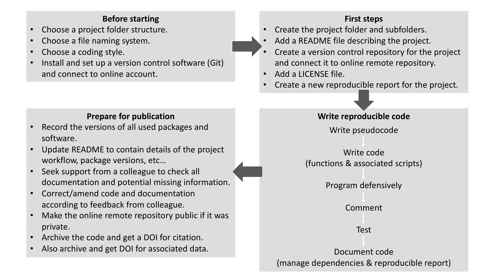
Figure 6.4: A simple reproducible project workflow.
6.3.6.2 The repeatable, reproducible analysis workflow
The fundamental idea behind a robust, reproducible analysis is a clean, repeatable script-based workflow (i.e. the sequence of tasks from the start to the end of a project) linking raw data through to clean data and to final analysis outputs.
6.3.6.3 Principles of a good analysis workflow
Please find below some key concepts associated with this task:
- Start your analysis from copies of your raw data.
- Any cleaning, merging, transforming, etc. of data should be done in scripts, not manually.
- Split your workflow (scripts) into logical thematic units. For example, you might separate your code into scripts that
- load, merge and clean data,
- analyse data,
- produce outputs like figures and tables.
- Eliminate code duplication by packaging up useful code into custom functions (see Step3 : Ensure basic programming standards). Make sure to comment your functions thoroughly, explaining their expected inputs and outputs (as well as the associated arguments and their options), and what they are doing and why.
- Document your code and data as comments in your scripts and by producing separate documentation (using the R Markdown format).
- Any intermediary outputs generated by your workflow should be kept separate from raw data.
- Keep your raw data raw.
6.3.6.4 Organizing and documenting workflows
The simplest and most effective way of documenting your workflow – its inputs and outputs – is through good file system organization, and informative, consistent naming of materials associated with your analysis. The name and location of files should be as informative as possible on what a file contains, why it exists, and how it relates to other files in the project. These principles extend to all files in your project (not just scripts) and are also intimately linked to good research data management (see Chapter 5: Data management).
6.3.6.5 File system structure
It is best to keep all files associated with a particular project in a single root directory. RStudio projects offer a great way to keep everything together in a self-contained and portable (i.e. so they can be moved from computer to computer) manner, allowing internal pathways to data and other scripts to remain valid even when shared or moved.
Figure 6.5: Example file structure of a simple analysis project. Make sure you left-pad single digit numbers with a zero for the R scripts to avoid having those misordered.
There is no single best way to organize a file system. The key is to make sure that the structure of directories and location of files are consistent, informative and works for you. Please find below an example of basic project directory structure (Figure 6.5):
- The
datafolder contains all input data (and metadata) used in the analysis. - The
MSfolder contains the manuscript. - The
Figures_&_Tablesfolder contains figures and tables generated by the analyses. - The
Outputfolder contains any type of intermediate or output files (e.g. simulation outputs, models, processed datasets, etc.). You might separate this and also have acleaned-datafolder. - The
R_functionsfolder contains R scripts with function definitions. - The
Reportsfolder contains RMarkdown files that document the analysis or report on results. - The scripts (
*.R) that actually do things are stored in the root directory together with theREADME.mdfile. If your project has too many scripts, you might consider organizing them in a separate folder.
6.3.6.6 License file
Usually, code and software are licensed under a GNU Affero General Public License. This is a free, copyleft license for software and other kinds of works, specifically designed to ensure cooperation with the community in the case of network server software. For instance, this is the licence that the instructor has used for this class.
6.3.6.7 Using R to infer data structure and files organization
Inferring the directory tree structure of your project provides a simple and efficient way to summarize the data structure and organization of files related to your project as well as track versioning. The R base functions list.files() and file.info() can be combined to obtain information on files stored in your project. Please see code below for an example associated to Figure 6.5.
# Produce a list of all files in working directory
# (Project-ID) together with info related to those files
file.info(list.files(path = "Project_ID", recursive = TRUE, full.name = TRUE))## size isdir mode
## Project_ID/Data/species_data.csv 6 FALSE 700
## Project_ID/Figures_&_Tables/Fig_01_Data_lifecycle.pdf 10282 FALSE 700
## Project_ID/MS/MS_et_al.docx 11705 FALSE 700
## Project_ID/Output/DataStr_network.html 256368 FALSE 700
## Project_ID/Output/DataStr_tree.pdf 3611 FALSE 700
## Project_ID/R_functions/check.install.pkg.R 684 FALSE 700
## Project_ID/README.md 1000 FALSE 700
## Project_ID/Reports/Documentation.md 14 FALSE 700
## Project_ID/Scripts/01_download_data.R 14 FALSE 700
## Project_ID/Scripts/02_clean_data.R 14 FALSE 700
## Project_ID/Scripts/03_exploratory_analyses.R 14 FALSE 700
## Project_ID/Scripts/04_fit_models.R 14 FALSE 700
## Project_ID/Scripts/05_generate_figures.R 14 FALSE 700
## mtime
## Project_ID/Data/species_data.csv 2018-09-12 10:02:55
## Project_ID/Figures_&_Tables/Fig_01_Data_lifecycle.pdf 2018-09-09 10:38:23
## Project_ID/MS/MS_et_al.docx 2019-09-23 11:51:58
## Project_ID/Output/DataStr_network.html 2019-09-23 13:27:30
## Project_ID/Output/DataStr_tree.pdf 2019-09-23 13:04:03
## Project_ID/R_functions/check.install.pkg.R 2019-09-10 09:54:03
## Project_ID/README.md 2021-10-03 13:32:58
## Project_ID/Reports/Documentation.md 2018-09-12 08:56:42
## Project_ID/Scripts/01_download_data.R 2018-09-12 08:56:42
## Project_ID/Scripts/02_clean_data.R 2018-09-12 08:56:42
## Project_ID/Scripts/03_exploratory_analyses.R 2018-09-12 08:56:42
## Project_ID/Scripts/04_fit_models.R 2018-09-12 08:56:42
## Project_ID/Scripts/05_generate_figures.R 2018-09-12 08:56:42
## ctime
## Project_ID/Data/species_data.csv 2022-06-24 14:49:58
## Project_ID/Figures_&_Tables/Fig_01_Data_lifecycle.pdf 2022-06-24 14:49:58
## Project_ID/MS/MS_et_al.docx 2022-06-24 14:49:56
## Project_ID/Output/DataStr_network.html 2022-06-24 14:49:56
## Project_ID/Output/DataStr_tree.pdf 2022-06-24 14:49:57
## Project_ID/R_functions/check.install.pkg.R 2022-06-24 14:49:57
## Project_ID/README.md 2022-06-24 14:49:57
## Project_ID/Reports/Documentation.md 2022-06-24 14:49:58
## Project_ID/Scripts/01_download_data.R 2022-06-24 14:49:57
## Project_ID/Scripts/02_clean_data.R 2022-06-24 14:49:57
## Project_ID/Scripts/03_exploratory_analyses.R 2022-06-24 14:49:58
## Project_ID/Scripts/04_fit_models.R 2022-06-24 14:49:57
## Project_ID/Scripts/05_generate_figures.R 2022-06-24 14:49:57
## atime uid
## Project_ID/Data/species_data.csv 2022-06-24 15:34:11 502
## Project_ID/Figures_&_Tables/Fig_01_Data_lifecycle.pdf 2022-06-24 15:34:11 502
## Project_ID/MS/MS_et_al.docx 2022-06-24 15:34:11 502
## Project_ID/Output/DataStr_network.html 2022-06-24 15:34:11 502
## Project_ID/Output/DataStr_tree.pdf 2025-08-30 23:05:54 502
## Project_ID/R_functions/check.install.pkg.R 2022-06-24 15:34:11 502
## Project_ID/README.md 2022-06-24 15:34:11 502
## Project_ID/Reports/Documentation.md 2022-06-24 15:34:11 502
## Project_ID/Scripts/01_download_data.R 2022-06-24 15:34:11 502
## Project_ID/Scripts/02_clean_data.R 2022-06-24 15:34:11 502
## Project_ID/Scripts/03_exploratory_analyses.R 2022-06-24 15:34:11 502
## Project_ID/Scripts/04_fit_models.R 2022-06-24 15:34:11 502
## Project_ID/Scripts/05_generate_figures.R 2022-06-24 15:34:11 502
## gid uname grname
## Project_ID/Data/species_data.csv 20 sven staff
## Project_ID/Figures_&_Tables/Fig_01_Data_lifecycle.pdf 20 sven staff
## Project_ID/MS/MS_et_al.docx 20 sven staff
## Project_ID/Output/DataStr_network.html 20 sven staff
## Project_ID/Output/DataStr_tree.pdf 20 sven staff
## Project_ID/R_functions/check.install.pkg.R 20 sven staff
## Project_ID/README.md 20 sven staff
## Project_ID/Reports/Documentation.md 20 sven staff
## Project_ID/Scripts/01_download_data.R 20 sven staff
## Project_ID/Scripts/02_clean_data.R 20 sven staff
## Project_ID/Scripts/03_exploratory_analyses.R 20 sven staff
## Project_ID/Scripts/04_fit_models.R 20 sven staff
## Project_ID/Scripts/05_generate_figures.R 20 sven staff6.3.6.8 Pseudocode and associated R script
The code presented above could be at the core of a user-defined function that would aim at managing files and ensuring data reliability for your project. To help you define such a function, let’s investigate this further and produce a diagram summarizing your project structure. This objective is achieved in three steps (see Figure 6.6):
- Step 1: Produce a list of all files in your working directory using file.info() and list.files() functions. The output of this code is a
data.frame - Step 2: Convert the
data.frameinto adata.treeclass object. This is done using the data.tree::as.Node() function from thedata.treepackage. - Step 3: Prepare and plot diagram of project structure. This is done using set of functions from
data.treeand plotting the output usingDiagrammRpackage. - Step 4: Save the output from step 3.
WARNING: Prior to starting the exercise, please go on the shared Google Drive and download the Project_ID folder at this path:
Reproducible_Science > Exercises > Chapter_5 > Project_ID
6.3.6.8.1 R code and associated outputs
Procedure to follow:
- Copy
Project_ID/in a directory entitledChapter_5_PartB. - Create and save an
Rscript and save it inChapter_5_PartB. - Make sure R packages are installed. See here for more details.
- Study and execute the R code below to infer the file structure in
Project_ID/. Also read the text below, which further explains the approach.
### Load R packages
library(data.tree)
library(DiagrammeR)
### Step 1: Produce a list of all files in Project_ID
filesInfo <- file.info(list.files(path = "Project_ID", recursive = TRUE,
full.name = TRUE))
### Step 2: Convert filesInfo into data.tree class
myproj <- data.tree::as.Node(data.frame(pathString = rownames(filesInfo)))
# Inspect output
print(myproj)## levelName
## 1 Project_ID
## 2 ¦--Data
## 3 ¦ °--species_data.csv
## 4 ¦--Figures_&_Tables
## 5 ¦ °--Fig_01_Data_lifecycle.pdf
## 6 ¦--MS
## 7 ¦ °--MS_et_al.docx
## 8 ¦--Output
## 9 ¦ ¦--DataStr_network.html
## 10 ¦ °--DataStr_tree.pdf
## 11 ¦--R_functions
## 12 ¦ °--check.install.pkg.R
## 13 ¦--README.md
## 14 ¦--Reports
## 15 ¦ °--Documentation.md
## 16 °--Scripts
## 17 ¦--01_download_data.R
## 18 ¦--02_clean_data.R
## 19 ¦--03_exploratory_analyses.R
## 20 ¦--04_fit_models.R
## 21 °--05_generate_figures.R### Step 3: Prepare and plot diagram of project structure
### (it requires DiagrammeR)
# Set general parameters related to graph
data.tree::SetGraphStyle(myproj$root, rankdir = "LR")
# Set parameters for edges
data.tree::SetEdgeStyle(myproj$root, arrowhead = "vee", color = "grey",
penwidth = "2px")
# Set parameters for nodes
data.tree::SetNodeStyle(myproj, style = "rounded", shape = "box")
# Apply specific criteria only to children nodes of Scripts
# and R_functions folders
data.tree::SetNodeStyle(myproj$Scripts, style = "box", penwidth = "2px")
data.tree::SetNodeStyle(myproj$R_functions, style = "box", penwidth = "2px")
# Plot diagram
plot(myproj)Figure 6.6: Diagram of project structure for the Project_ID directory. Nodes representing folders and files associated to R code are symbolized by boxes, whereas the others are rounded.
Finally, the R DiagrammeR package sadly doesn’t allow to easily save the graph into a file (step 4) using e.g. the pdf() and dev.off() functions, but this task can be done in RStudio as follows:
- The diagram outputted by step 3 is displayed in the
Viewerwindow (in the bottom right panel) and can be exported by clicking on the button and selectSave as Image...as shown in Figure 6.7.
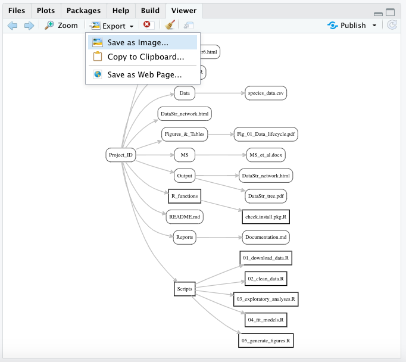
Figure 6.7: Snapshot showing how to export the diagram in RStudio.
- Once you have executed the latter step, a window will open allowing you to select the image format, directory and file name as shown in Figure 6.8.
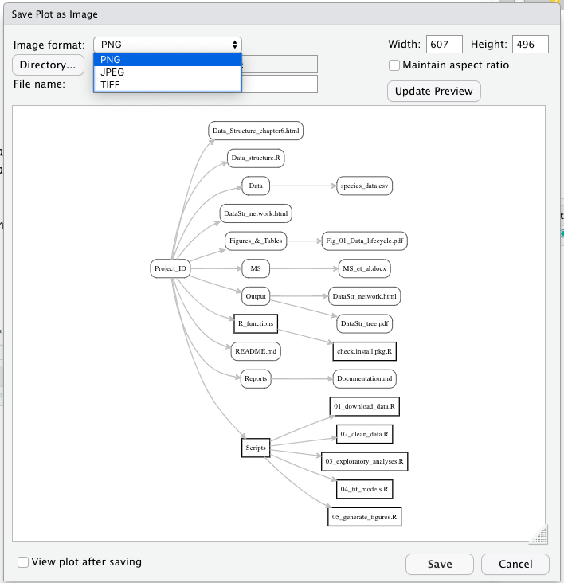
Figure 6.8: Snapshot showing how to save the diagram in RStudio.
To find out more about your options to export/save DiagrammeR graphs please visit this website:
6.3.6.9 Informative, consistent naming
Good naming extends to all files, folders and even objects in your analysis and serves to make the contents and relationships among elements of your analysis understandable, searchable and organised in a logical fashion (see Figure 6.5 for examples and Chapter 5: Data management for more details).
6.3.7 Ensure basic programming standards
6.3.7.1 Writing pseudocode
Pseudocode is an informal high-level description of the operating principle of a computer program or other algorithm. It uses the structural conventions of a normal programming language (here R), but is intended for human reading rather than machine reading. Here, you will establish the big steps (and their associated tasks) and tie R functions (existing or that have to be made) to those steps. This provides the backbone of your code and will support writing it.
6.3.7.2 Writing code
Writing clear, reproducible code has (at least) three main benefits: 1. It makes returning to the code much easier a few months down the line; whether revisiting an old project, or making revisions following peer review. 2. The results of your analysis are more easily scrutinized by the readers of your paper, meaning it is easier to show their validity. 3. Having clean and reproducible code available can encourage greater uptake of new methods that you have developed.
To write clear and reproducible code, it is recommended to follow the workflow depicted in Figure 6.4. The following section explains each part of the workflow along with some tips for writing code. Although this workflow would be the ‘gold standard’, just picking up some of the elements can help to make your code more effective and readable.
6.3.7.3 Style guides
The foundation of writing readable code is to choose a logical and readable coding style, and to stick to it. Some key elements to consider when developing a coding style are:
- Using meaningful file names, and numbering these if they are in a sequence (see Figure 6.5 for examples and Chapter 5: Data management for more details).
### Naming files
# Good
fit-models.R
utility-functions.R
# Bad
foo.r
stuff.r- Concise and descriptive object names. Variable names should usually be nouns and function names verbs. Using names of existing variables or functions should be avoided.
### Naming objects
# Good
day_one
day_1
# Bad
first_day_of_the_month
DayOne
dayone
djm1- Spacing should be used to improve visual effect: use spaces around operators (
=,+,-,<-, etc.), and after commas (much like in a sentence).
### Spacing
# Good
average <- mean(feet / 12 + inches, na.rm = TRUE)
# Bad
average<-mean(feet/12+inches,na.rm=TRUE)- Indentation should be with two spaces, not tabs, and definitely not a mixture of tabs and spaces.
### Indentation
long_function_name <- function(a = "a long argument",
b = "another argument",
c = "another long argument") {
# As usual code is indented by two spaces.
}- Assignment. Use
<-, not=, for assignment.
### Assignment
# Good
x <- 5
# Bad
x = 5The most important role of a style guide, however, is to introduce consistency to scripts.
6.3.7.4 Portable code: Absolute vs. Relative paths
When working collaboratively, portability between machines is very important, i.e. will your code work on someone else’s computer? Portability is also important if code is being run on another server, for example a High Performance Cluster. One way to improve portability of code is to avoid using absolute paths and use only relative paths (see https://en.wikipedia.org/wiki/Path_(computing)#Absolute_and_relative_paths).
- An absolute path is one that gives the full address to a folder or file.
- A relative path gives the location of the file from the current working directory. Relative paths are favored to promote code portability.
For example based on species_data.csv stored in the Data folder shown in Figure 6.5:
# Absolute path -----------------------------
C:/Project_ID/Data/species_data.csv
Project_ID = Project root folder = working directory
# Relative path ------
Data/species_data.csvRelative paths are particularly useful when transferring between computers because while I may have stored my project folder in ‘C:/Project_ID/’, you may have yours stored in ‘C:/Users/My Documents’. Using relative paths and running from the project folder will ensure that file-not-found errors are avoided.
RStudio is especially designed to help portability of code. For instance, you can easily set the working directory in RStudio by clicking:
Session > Set Working Directory > To Source File Locationor using the setwd() function. Please see Chapter 1 for more details.
6.3.7.5 Commenting code
How often have you revisited an old script six months down the line and not been able to figure out what you had been doing? Or have taken on a script from a collaborator and not been able to understand what their code is doing and why? An easy win for making code more readable and reproducible is the liberal, and effective, use of comments. A comment is a line of code that is visible, but does not get run with the rest of the script. In R and Python this is signified by beginning the line with a #.
One good principle to adhere to is to comment the ‘why’ rather than the ‘what’. The code itself tells the reader what is being done, it is far more important to document the reasoning behind a particular section of code or, if it is doing something nonstandard or complicated, to take some time to describe that section of code.
It is also good practice to use comments to add an overview at the beginning of a script, and commented lines of --- to break up the script: e.g. in R
# Load data -------6.3.7.6 Writing functions
Often when you are analyzing data, you need to repeat the same task many times. For example, you might have several files that all need loading and cleaning in the same way, or you might need to perform the same analysis for multiple species or parameters. The best way (by far) to handle those tasks is to write functions and store those in a specific folder (e.g. R_functions in 6.5). Those functions will be loaded into the R environment (and therefore made available to users) by using the source() function, which will be placed at the top of your R script. Please see Chapter 1 part D for more details.
6.3.7.7 Testing scientific code
In the experimental sciences, rigorous testing is applied to ensure that results are accurate, reproducible and reliable. Testing will show that the experimental setup is doing what it is meant to do and will quantify any systematic biases. Results of experiments will not be trusted without such tests; why should your code be any different? Testing scientific code allows you to be sure that it is working as intended and to understand and quantify any limitations of the code. Using tests can also help to speed up the code development process by finding errors early on.
Although the instructor recognizes the importance of establishing protocols, those tests will be especially relevant if you were to design R packages. However, the instructor would recommend informal testing by loading functions that have been written by the students and running ad hoc tests in the command line to make sure that they perform as expected.
6.3.8 Document and manage dependencies
Reproducibility is also about making sure someone else can re-use your code to obtain the same results as you (see Appendix 1 for more details).
For someone else to be able to reproduce the results included in your report, you need to provide more than the code and the data. You also need to document the exact versions of all the packages, libraries, and software you used, and potentially your operating system as well as your hardware.
R itself is very stable, and the core team of developers takes backward compatibility (old code works with recent versions of R) very seriously. However, default values in some functions change, and new functions get introduced regularly. If you wrote your code on a recent version of R and give it to someone who has not upgraded recently, they may not be able to run your code. Code written for one version of a package may produce very different results with a more recent version.
6.3.8.1 Reporting R packages and versions
With R, the simplest (but a useful and important) approach to document your dependencies is to report the output of sessionInfo() (or devtools::session_info()). Among other information, this will show all the packages and their versions that are loaded in the session you used to run your analysis. If someone wants to recreate your analysis, they will know which packages they will need to install. Please see Appendix 2 for more details.
For instance, here is the output of sessionInfo() showing the R version and packages that I used to create this document:
sessionInfo()## R version 4.2.0 (2022-04-22)
## Platform: x86_64-apple-darwin17.0 (64-bit)
## Running under: macOS Big Sur/Monterey 10.16
##
## Matrix products: default
## BLAS: /Library/Frameworks/R.framework/Versions/4.2/Resources/lib/libRblas.0.dylib
## LAPACK: /Library/Frameworks/R.framework/Versions/4.2/Resources/lib/libRlapack.dylib
##
## locale:
## [1] en_US.UTF-8/en_US.UTF-8/en_US.UTF-8/C/en_US.UTF-8/en_US.UTF-8
##
## attached base packages:
## [1] stats graphics grDevices utils datasets methods base
##
## other attached packages:
## [1] rticles_0.27 DiagrammeR_1.0.11 DT_0.34.0
## [4] data.tree_1.2.0 kfigr_1.2.1 devtools_2.4.5
## [7] usethis_3.2.1 bibtex_0.5.1 knitcitations_1.0.12
## [10] htmltools_0.5.7 prettydoc_0.4.1 magrittr_2.0.3
## [13] dplyr_1.1.4 kableExtra_1.4.0 formattable_0.2.1
## [16] bookdown_0.36 rmarkdown_2.29 knitr_1.44
##
## loaded via a namespace (and not attached):
## [1] Rcpp_1.0.11 svglite_2.1.3 lubridate_1.9.3 visNetwork_2.1.4
## [5] digest_0.6.33 mime_0.12 R6_2.6.1 plyr_1.8.9
## [9] backports_1.4.1 evaluate_1.0.5 highr_0.11 httr_1.4.7
## [13] pillar_1.11.1 rlang_1.1.2 rstudioapi_0.17.1 miniUI_0.1.2
## [17] jquerylib_0.1.4 urlchecker_1.0.1 RefManageR_1.4.0 stringr_1.5.2
## [21] htmlwidgets_1.6.4 shiny_1.7.5.1 compiler_4.2.0 httpuv_1.6.13
## [25] xfun_0.41 pkgconfig_2.0.3 systemfonts_1.0.5 pkgbuild_1.4.8
## [29] tidyselect_1.2.0 tibble_3.2.1 viridisLite_0.4.2 withr_3.0.2
## [33] later_1.3.2 jsonlite_1.8.8 xtable_1.8-4 lifecycle_1.0.4
## [37] formatR_1.14 scales_1.4.0 cli_3.6.2 stringi_1.8.3
## [41] cachem_1.0.8 farver_2.1.1 fs_1.6.3 promises_1.2.1
## [45] remotes_2.5.0 xml2_1.3.6 bslib_0.5.1 ellipsis_0.3.2
## [49] generics_0.1.4 vctrs_0.6.5 RColorBrewer_1.1-3 tools_4.2.0
## [53] glue_1.6.2 purrr_1.0.2 crosstalk_1.2.2 pkgload_1.4.1
## [57] fastmap_1.1.1 yaml_2.3.8 timechange_0.2.0 sessioninfo_1.2.3
## [61] memoise_2.0.1 profvis_0.3.8 sass_0.4.86.3.8.2 Using R packages to help managing dependencies and recreate setup
This will not be covered in this class, but it is worth noting that there are at least two R packages allowing to better manage dependencies and recreate your setup. Those packages are:
- checkpoint: https://cran.r-project.org/web/packages/checkpoint/vignettes/checkpoint.html
- packrat: https://rstudio.github.io/packrat/
The instructor expects students to discuss with their supervisors to identify if those packages are potentially useful for their projects.
7 Chapter 6
7.1 Introduction
This chapter is subdivided into two parts as follows:
7.2 Getting published
7.2.1 Learning outcome
- Learn procedures to present your research and disseminate it through publications.
To support the learning outcome, we will focus on discussing:
- The importance of knowing the key conclusion that you want to communicate and revolve your publication around it.
- The steps towards getting your research published:
- Selecting your journal.
- Writing your manuscript.
- Submitting your manuscript.
- Acceptance and publication.
7.2.2 Literature and web resources
This chapter is mostly based on the following books, publications and web resources:
Books and Guides
- British Ecological Society (2014b) – A Guide to Getting Published in Ecology and Evolution published by the British Ecological Society.
- Cargill and O’Connor (2011) – A book entitled “Writing Scientific Research Articles: Strategy and Steps” available to download here.
- COPE: The guide entitled “How to handle authorship disputes: a guide for new researchers” available for download here: http://publicationethics.org/files/2003pdf12_0.pdf
- Moore, A. An eBook entitled “Writing Science Well: Techniques, tips and pitfalls” available to download here: http://www.wiley.com/legacy/wileyblackwell/gmspdfs/69204eBookECR/#/1/
Publications
- Allen et al. (2014) – Comment published in Nature advocating for a “taxonomy” of author roles.
- Fox and Burns (2015) – A publication investigating the relationship between manuscript title structure and success in Ecology.
Websites
- The Committee on Publication Ethics (COPE) website for general information on publishing ethics (http://publicationethics.org/).
- CRediT (Contribution Roles Taxonomy): https://authorservices.wiley.com/author-resources/Journal-Authors/open-access/credit.html
- Directory of Open Access journals: https://doaj.org/
- The Wiley Author Webinars website is full of seminars covering topics such as: How to get published; How to write for scientific publications; Grant funding tips; Understand the peer review process; Improve article/publication discoverability; Ethics in publishing; Open Access; Time management skills. Available here: https://authorservices.wiley.com/author-resources/Journal-Authors/Prepare/webinars/index.html
7.2.3 Download presentation
The presentation slides for Chapter 6 - part A can be downloaded here.
7.2.4 Why publish?
Publishing research results is the one thing that unites scientists across disciplines, and it is a necessary part of the scientific process. You can have the best ideas in the world, but if you don’t communicate them clearly enough to be published, your work won’t be acknowledged by the scientific community.
By publishing you are achieving three key goals for yourself and the larger scientific endeavor:
- Disseminating your research.
- Advancing your career.
- Advancing science.
In biology, publishing research is equal to journal articles.
7.2.5 Know your message
Before beginning writing your journal article and thinking where to submit it, it is important to thoroughly understand your own research and know the key conclusion you want to communicate (see chapter 3). In other words, what is your take home message?
Consider your conclusion and ask yourself, is it:
- New and interesting?
- Contributing to a hot topic?
- Providing solutions to difficult problems?
If you can answer ‘yes’ to all three, you have a good foundation message for a paper.
Shape the whole narrative of your paper around this message.
7.2.6 Steps towards getting your research published
Once you know your message, getting your research published will be a four steps process:
- Step 1: Selecting your journal.
- Step 2: Writing your manuscript.
- Step 3: Submitting your manuscript.
- Step 4: Acceptance and publication.
Each step will be discussed below. Please seek support from your supervisor to learn more about specifics from you field.
7.2.7 Step 1: Selecting your journal
To target the best journal to publish your research, you need to ask yourself what audience do I want my paper to reach?
Your manuscript should be tailored to the journal you want to submit to in terms of content and in terms of style (as outlined in journals’ author guidelines). To confirm that a journal is the best outlet to publish your research ask yourself this question: can I relate my research to other papers published in this journal?
Here are some things to consider when choosing which journal to submit to:
7.2.7.1 Journal aims and scope
Look closely at what the journal publishes; manuscripts are often rejected on the basis that they would be more suitable for another journal. There can be crossover between different journals’ aims and scope – differences may be subtle, but all important when it comes to getting accepted.
Do you want your article read by a more specialist audience working on closely related topics to yours, or researchers within your broader discipline?
Once you have decided which journal you are most interested in, make sure that you tailor the article according to its aims and scope.
7.2.7.2 Editors and editorial boards
It is a good sign if you recognize the names of the editors and editorial board members of a journal from the work you have already encountered (even better if they contributed to some of the references cited in your manuscript). Research who would likely deal with your paper if you submitted to a journal and find someone who would appreciate reading your paper. You can suggest handling editors in your cover letter or in the submission form, if it allows, but be aware that journals do not have to follow your suggestions and/or requests.
7.2.7.3 Impact factor and other metrics
A summary of our previously discussed material is presented below to provide more context for this chapter, but please consult Chapter 4 for more details on this topic.
Impact factors are the one unambiguous measure widely used to compare journal quality based on citations the journal receives. However, other metrics are becoming more common, e.g. altmetric score measuring the impact of individual articles through online activity (shares on different social media platforms etc.), or article download figures listed next to the published paper.
None of the metrics described here are an exact measure of the quality of the journal or published research. You will have to decide which of these metrics (if any) matter most to your work or your funders and institutions.
7.2.7.4 Open access
Do you need to publish open access (OA)? Some funders mandate it and grant money often has an amount earmarked to cover the article processing charge (APC) required for Gold OA. Some universities have established agreements with publishers whereby their staff get discounts on APCs when publishing in certain journals (or even a quota of manuscripts that can be published for “free” on a yearly basis). If you do not have grant funding, check whether your university or department has got an OA fund that you could tap into.
However, if you are not mandated to publish OA by your funder and/or you do not have the funds to do so, your paper will still reach your target audience if you select the right journal for your paper. Remember, you can share your paper over email.
7.2.7.6 Time to publication
The length of time a paper takes to be peer reviewed does not correlate to the quality of peer review, but rather reflects the resources a journal has to manage the process (e.g. do they have paid editorial staff or is it managed by full-time academics?).
Journals usually give their average time to a decision on their website, so take note of this if time is a consideration for you.
Some journals also make it clear that they are reviewing for soundness of science rather than novelty and will therefore often have a faster review process (e.g. PLoS ONE).
7.2.7.7 Ethics
Ethics can be divided into two groups:
- Research ethics: this term includes aspects such as how you manage sensitive species information, whether you adhere to animal welfare guidelines and regulations or how you deal with data protection.
- Publication ethics: this term concerns practices around the publication process. Standards set across scholarly publishing help define good practice and identify cases of misconduct. The Committee on Publication Ethics (COPE) provides the main forum for advice on ethics within scholarly publishing and has issued several sets of guidelines that help journals, editors and publishers handle cases of misconduct such as data fabrication, peer review fraud, plagiarism, etc.
As an author, it helps if you are familiar with what constitutes good practices and what is considered unacceptable. Please see section “Used literature & web resources” for more details on this topic.
7.2.8 Step 2: Writing your manuscript
7.2.8.1 Planning to write
Develop a narrative that leads to your main conclusion and develop a backbone around that narrative. The narrative should progress logically, which does not necessarily mean chronologically. Work out approximate word counts for each section to help manage the article structure and keep you on track for word limits.
It is important to set aside enough time to write your manuscript and – importantly – enough time to edit, which may actually take longer than the writing itself.
7.2.8.2 Structure
The article structure will be defined in the author guidelines, but if the journal’s guidelines permit it, there may be scope to use your own subheadings. By breaking down your manuscript into smaller sections, you will be communicating your message in a much more digestible form.
Use subheadings to shape your narrative and write each subheading in statement form (e.g. ecological variables do not predict genome size variation).
7.2.8.3 Title
The title is the most visible part of your paper and it should thus clearly communicates your key message. Pre-publication, reviewers base their decision on whether to review a paper on the quality of the title and abstract. Post-publication, if you publish in a subscription journal and not OA, the title and abstract are the only freely available parts of your paper, which will turn up in search engines and thus reach the widest audience. A good title will help you get citations and may even be picked up by the press.
Draft a title before you write your manuscript to help focusing your paper. The title needs to be informative and interesting to make it stand out to reviewers and subsequently readers. Some key tips for a successful title include:
- Write it in statement form. When scanning papers, most people skip to the last sentence of the abstract to look for the key message, so make that sentence your title.
- Keep it around 15 words – any longer or shorter and it has more chance of being rejected at peer review.
- Use punctuation to split the main message and qualifier/subtitle e.g. ‘Feeding evolution of a herbivore influences an arthropod community through plants: implications for plant-mediated eco-evolutionary feedback loop’.
- Keep it general – readers prefer titles that emphasize broader conceptual or comparative issues, and these titles fare better both pre- and post-publication than papers with organism-specific titles. Try to avoid using species names, put them in the abstract and keywords instead.
- Do not use abbreviations even if they are familiar in your field. You should keep a broad audience in mind.
- Do not use phrases such as ‘The effect of…’, ‘The involvement of…’. These phrases give the reader scope to question your message – instead tell the reader what they are being told.
7.2.8.4 Abstract
Write your abstract after you have written your paper, when you are fully aware of the narrative of your paper. After the title, the abstract is the most read part of your paper. Abstracts are freely available and affect how discoverable your article is via search engines.
Given its importance, your abstract should:
- Articulate your new and interesting key message.
- Outline the methods and results.
- Contextualize the work.
- Highlight how your research contributes to the field and its future implications.
- Have the last sentence communicating the key message.
7.2.8.5 Writing style
Writing with clarity, simplicity and accuracy takes practice and we can all get carried away with what we think is ‘academic writing’ (i.e. long words and jargon) but good science speaks for itself. Write short sentences (ca. 12 words on average).
Every extra word you write is another word for a reviewer to disagree with. Single out the narrative that leads to your main conclusion and write that – it is easy to get side tracked with lots of interesting avenues distracting from your work, but by including those in your paper, you are inviting more criticism from reviewers.
Write in an active, positive voice (e.g. ‘we found this…’ ‘we did this…’) and be direct so that your message is clear. Ambiguous writing is another invitation for reviewers to disagree with you.
In your introduction, state that your research is timely, important, and why. Begin each section with that section’s key message and end each section with that message again plus further implications. This will place your work in the broader context that high-quality journals like.
Draft and redraft your work to ensure it flows well and your message is clear and focused throughout. While doing this process, keep the reader in mind at all times (to have a critical look on your research and its presentation).
7.2.8.6 Keywords
Keywords are used by readers to discover your paper. You will increase chances of your paper being discovered through search engines by using them strategically throughout your paper – this is search engine optimization (SEO).
Think of the words you would search for to bring up your paper in a Google search. Try it and see what comes up – are there papers that cover similar research to your own?
Build up a list of 15–20 terms relevant to your paper and divide them into two groups:
- A core group of around 5 keywords,
- A larger group of secondary keywords.
Place your core keywords in the title, abstract and subheadings, and the secondary keywords throughout the text and in figures and tables. Repeat keywords in the abstract and text naturally.
7.2.8.7 References
Reference all sources and do it as you go along (e.g. copy the BibTeX citation into a reference file; see chapter 1 part B), then tidy them once the paper is complete.
Make sure that most of your references are recent to demonstrate both that you have a good understanding of current literature, and that your research is relevant to current topics.
7.2.8.8 Figures and tables
Figures and tables enhance your paper by communicating results or data concisely (more on this topic in chapters 9 and 10).
Use figures and tables to maintain the flow of your narrative – e.g. instead of trying to describe patterns in your results, create a figure and say ‘see Fig. 1’. Not only does this keep your word count down, but a well-designed figure can replace 1000 words!
Figures are useful for communicating overall trends and shapes, allowing simple comparisons between fewer elements. Tables should be used to display precise data values that require comparisons between many different elements.
Figure captions and table titles should explain what is presented and highlight the key message of this part of your narrative – the figure/table and its caption/title should be understandable in isolation from the rest of your manuscript.
Check the journal’s author guidelines for details on table and figure formatting, appropriate file types, number of tables and figures allowed and any other specifications that may apply. Material presented in chapter 1 part C can help you produce figures meeting journal expectations.
7.2.8.9 Editing
Once you have finished writing your manuscript, put it on ice for a week so you come back to it with fresh eyes. Take your time to read it through. Editing can take more time than you expect, but this is your opportunity to fine-tune and submit the best paper possible. Don’t hesitate to seek support from your thesis committee to fasten and streamline this process.
Key things to look out for when editing include:
- Spelling and grammar – a surprising amount of errors slip through. If you are a non-native English speaker, ask a native speaker, ideally a colleague who knows a little bit about the subject, to read it through, or use a language-editing service if you have the funds to do so.
- Make sure all statements and assumptions are explained.
- Remove redundant words or phrases – keep it concise and jargon-free to avoid diluting your message.
- Abbreviations – check that they have been expanded on the first use.
- Acknowledgements – make sure all funders are clearly mentioned and that all people who contributed in any way are acknowledged.
- Keywords – they should be consistent, evenly spaced throughout the text and placed at key points in your manuscript e.g. subheadings.
- Make sure you have specifically dealt with the hypothesis set out in the introduction – you’d be surprised at the number of papers submitted that don’t!
- Circulate the manuscript to your co-authors to get their comments and final approval before submission.
7.2.9 Step 3: Submitting your manuscript
You are now ready to submit your paper to your chosen journal. Each journal will have a different submission procedure that you will have to adhere to, and most manage their submissions through online submission systems (e.g. ScholarOne Manuscripts).
Only submit your paper for consideration to one journal at a time otherwise you will be breaching publishing ethics.
7.2.9.1 Cover letters
A great cover letter can set the stage towards convincing editors to send your paper for review. Write a concise and engaging letter addressed to the editor-in-chief, who may not be an expert in your field or sub-field.
The following points should be covered in your cover letter:
- State your key message and why your paper is important and relevant to the journal.
- State that your paper is not under review in another journal and hasn’t been published before (although you will most likely adhere to that during the submission process and if it is the case you then don’t need to mention this in the cover letter).
- The cover letter should be shorter than your abstract and be written in less technical language.
- Use it to recommend reviewers (include their emails) and/or a relevant handling editor. Pick suggested reviewers with a good reputation to demonstrate both your knowledge of the field and your belief that your paper can stand up to their scrutiny.
- State any potential conflict of interest with other teams and blacklist potential reviewers.
7.2.9.2 Handling revisions
Very rarely is a paper immediately accepted – almost all papers go through few rounds of reviews before they get published.
If a decision comes back asking for revisions you should reply to all comments politely. Here are some tips on handling reviewer comments and revising your paper:
- Look at the reviewer comments with scrutiny and make a list of all the points that need to be addressed.
- Start with the minor revisions such as spelling, grammar, inconsistencies – these are often the most numerous but the easiest to correct.
- If you disagree with certain comments, disagree politely and with evidence. Do not skip over them when writing your reply.
- If things can’t be dealt with in this paper then explain that to the editor – reviewers may try to push their own agenda e.g. ‘why don’t you write this paper instead’, but you have the right to disagree if you don’t feel it is appropriate to deal with this in your paper.
- Respond to comments as thoroughly as you can.
- Include a point-by-point response to the reviewer comments in the relevant section of the online system.
7.2.9.3 Handling rejection
Reviewers are volunteers, but the service they provide is invaluable – by undergoing peer review, regardless of the outcome, you are receiving some of the best advice from leading experts for free. With this in mind, any feedback you get will be constructive in the end and will lead you on the way to a successful publishing portfolio.
Keep in mind that feedback is another person’s opinion on what you have done, not on who you are, and it is up to you to decide what to do with it.
If your paper is rejected look at the reviewer’s comments and use their feedback to improve your paper before resubmitting it.
7.2.9.4 Appeals
If you are unhappy with a reject decision, 99.9% of the time, move on. However, don’t be afraid of appealing if you have well-founded concerns or think that the reviewers have done a bad job. There are instances where journals grant your appeal and allow you to revise your paper, but in the large majority of cases, the decision to reject will be upheld.
7.2.10 Step 4: Acceptance and publication
Congratulations! By now you should have an acceptance email from the editor-in-chief in your inbox. The process from here will vary according to each journal, but the post-acceptance workflow is usually as follows:
- Your paper will be published online, unedited, but citable as an ‘Accepted Article’ within a week of acceptance (usually a DOI is assigned and your paper is citable at this stage).
- Your paper will be copy-edited. The level of copy-editing your paper will receive will vary according to each journal, so it is worth checking your proof thoroughly.
- Your paper will be typeset and a proof will be sent to you for checking. Author queries will be marked on the proof. At this stage, only minor corrections related to the typesetting are allowed.
- Your finalized proof will be published online in ‘Early View’.
- Finally, according to the journal’s schedule, your paper will be placed in an issue (or not if it is an online only journal, e.g. Scientific Reports).
It might be then time to coordinate the publication of a press release or post the link of your article on social media to share your joy!
7.3 Writing papers in R Markdown
7.3.1 Download presentation
The presentation slides for Chapter 6 - part B can be downloaded here.
7.3.2 Literature and web resources
This chapter is mostly based on the following books and web resources:
Bookdown ebook on writing scientific papers: https://bookdown.org/yihui/rmarkdown/journals.html
A blog on “Writing papers in R Markdown” by Francisco Rodriguez-Sanchez: https://sites.google.com/site/rodriguezsanchezf/news/writingpapersinrmarkdown
rmdTemplates R package GitHub repository: https://github.com/Pakillo/rmdTemplates
rticles R package GitHub repository: https://github.com/rstudio/rticles
7.3.3 Software requirements
To apply the approach described below make sure that you have a Tex distribution installed on your computer. More information on this topic is available here. You will also need to install the R rticles package as demonstrated here.
7.3.4 Challenges to writing publications in R Markdown
Traditionally, journals are accepting manuscripts submitted in either Word (.doc) or LaTex (.tex) formats. In addition, most journals are requesting figures to be submitted as separate files (in e.g. .tiff or .eps formats). Online submission platforms are collating your different files to produce a .pdf document, which is shared with reviewers for evaluation. In this context, although the .Rmd format is growing in popularity (due to its ability to “mesh” data analyses with data communication), this format is technically currently not accepted by journals. In this document, we are discussing ways that have been developed to circumvent this issue and allow using the approach implemented in R Markdown for journal submissions.
7.3.5 Solution: Develop templates producing LaTex files matching journal requirements!
As mentioned above, many journals support the LaTeX format (.tex) for manuscript submissions. While you can convert R Markdown (.Rmd) to LaTeX, different journals have different typesetting requirements and LaTeX styles. The solution is to develop scripts converting R Markdown files into LaTex files, which are meeting journal requirements.
7.3.6 The rticles package
Submitting scientific manuscripts written in R Markdown is still challenging; however the R rticles package was designed to simplify the creation of documents that conform to submission standards for academic journals (see Allaire et al., 2024). The package provides a suite of custom R Markdown LaTeX formats and templates for the following journals/publishers that are relevant to the EEB program:
- Biometrics articles
- Elsevier journal submissions
- Frontiers articles
- MDPI journal submissions
- PeerJ articles
- PNAS articles
- Royal Society Open Science journal submissions
- Sage journal submissions
- Springer journal submissions
- The R Journal articles
- Taylor & Francis articles
An understanding of LaTeX is recommended, but not essential in order to use this package. R Markdown templates may sometimes inevitably contain LaTeX code, but usually we can use the simpler R Markdown and knitr function to produce elements like figures, tables, and math equations.
7.3.6.1 Install rticles and use templates to write publications
- Install the rticles package:
- Type the above code in the R console:
install.packages("rticles")- Or use the RStudio interface to install the package by clicking:
Tools -> Install Packages...
Then, type "rticles" in the prompted window to install package. - If you wish to install the development version from GitHub (which often contains new article formats), you can do this (note that this code uses a function from the remotes package, Hester et al., 2019):
remotes::install_github("rstudio/rticles")- Create a new R Markdown document in RStudio:
File -> New File -> R Markdown... - In the
New R Markdownwindow, click onFrom Templatein the left panel and select the journal style that you would like to follow for your article (here PNAS Journal Article; see Figure 7.1). Before pushing theOKbutton, provide a name for your project and set a location where the project will be saved (see Figure 7.1).
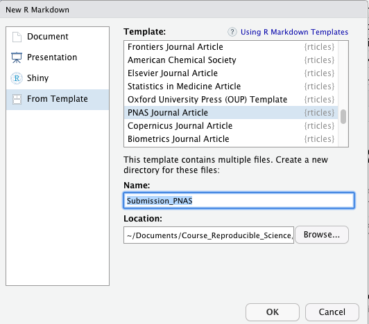
Figure 7.1: R Markdown window allowing to select templates following journal styles.
- Once you completed this task, a folder will be created (and saved in the path that you provided) containing files associated with the article submission process and the template will be automatically opened in RStudio (see Figure 7.2).
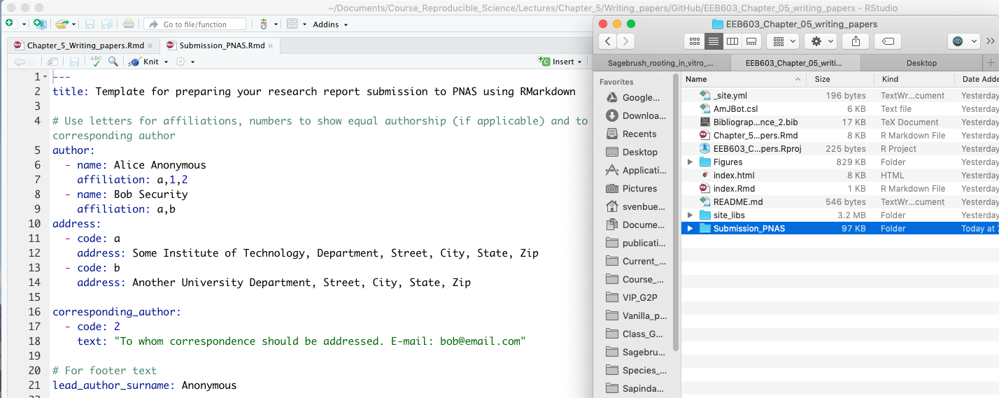
Figure 7.2: Snapshot showing the template R Markdown and the associated folder created to generate your submission.
- In this example, the following suite of files were created (see Figure 7.3):
Submission_PNAS.Rmd: R Markdown file that will be used to write your article.pnas-sample.bib: BibTeX file to store your bibliography.pnas.cslandpnas-new.cls: Files containing information about the formatting of citations and bibliography adapted to journal policies.frog.png: A.pngfile used to show you how to include figures in.Rmddocument.
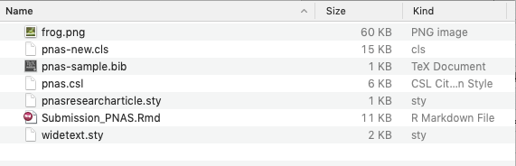
Figure 7.3: Snapshot showing the suite of files associated to your submission and saved in your project folder.
- Start writing your article
- Open
Submission_PNAS.Rmdand update the YAML metadata section with information on authors, your abstract, summary and keywords (see Figure 7.4).
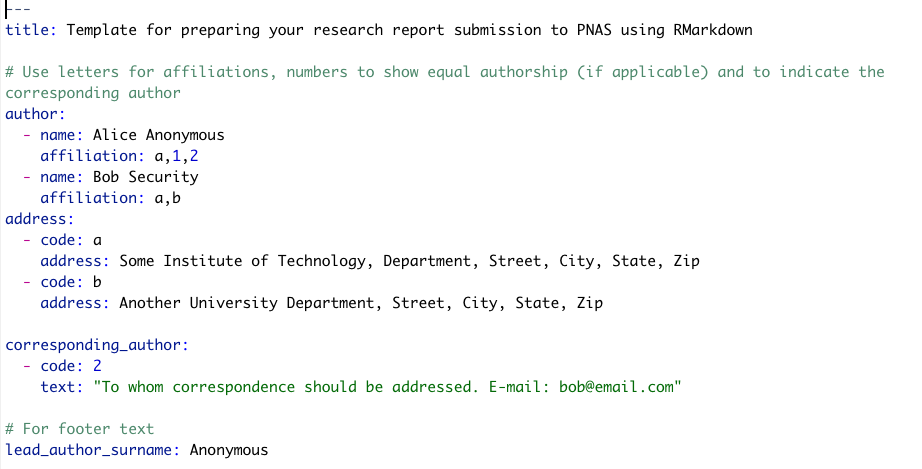
Figure 7.4: Update YAML metadata section with information on authors, your abstract, summary and keywords.
- Write your manuscript by following the journal’s structure. You can take advantage of the R Markdown language in your manuscript (e.g. include R code chunks and outputs) and those will be converted by knitr and rticles packages during the compilation procedure.
- Compile your document and use both
.pdfand.texfiles to submit your article (see Figure 7.5). The output files will be saved in your project folder.
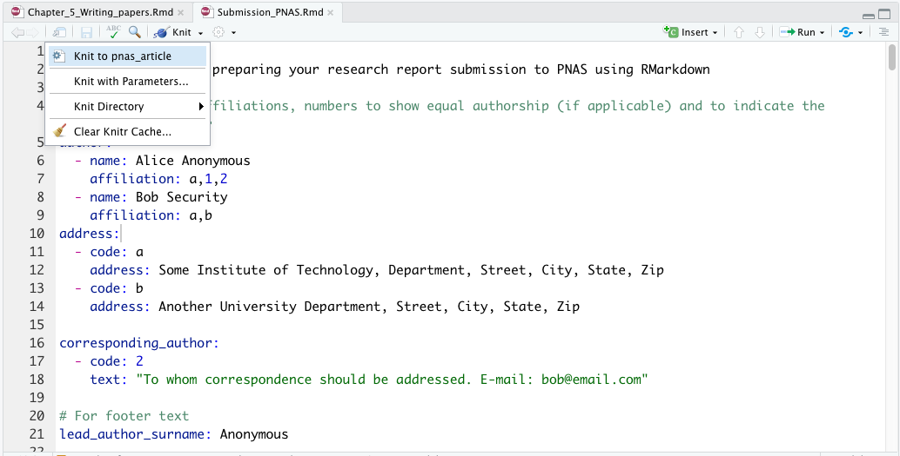
Figure 7.5: Snapshot of the procedure to knit the document.
7.3.6.2 Exercise
To get familiar with this procedure, please practice by applying the above approach to different journal templates by favoring those where you might be submitting to.
Enjoy writing scientific publications in R Markdown!
8 Chapter 7
8.1 Introduction
In this chapter, we will study protocols to import and gather data with R. As stated by Gandrud (2015) in the chapter 6 of his book, how you gather your data directly impacts how reproducible your research will be. In this context, it is your duty to try your best to document every step of your data gathering process. Reproduction will be easier if all of your data gathering steps are tied together by your source code, then independent researchers (and you) can more easily regather the data. Regathering data will be easiest if running your code allows you to get all the way back to the raw data files (the rawer the better). Of course, this may not always be possible. You may need to conduct interviews or compile information from paper based archives, for example. The best you can sometimes do is describe your data gathering process in detail. Nonetheless, R’s automated data gathering capabilities for internet-based information is extensive. Learning how to take full advantage of these capabilities greatly increases reproducibility and can save you considerable time and effort over the long run.
Gathering data can be done by either importing locally stored data sets (= files stored on your computer) or by importing data sets from the Internet. Usually, these data sets are saved in plain-text format (usually in comma-separated values format or csv) making importing them into R a fairly straightforward task (using the read.csv() function). However, if data sets are not saved in plain-text format, the users will have to start by converting them. In most cases, data sets will be saved in xls or xlsx formats and functions implemented in the readxl package (Wickham and Bryan, 2019) would be used (using the read_xlsx() function). If your data sets were created by other statistical programs such as SPSS, SAS or Stata, these could be imported into R using functions from the foreign package (R Core Team, 2020). Finally, data sets could be saved in compressed documents, which will have to be processed prior to importing the data into R.
Learning skills to import and gather data sets is especially important in the fields of Ecology, Evolution and Behavior since your research is highly likely to depend on large and complex data sets (see Figure 8.1). In addition, testing your hypotheses will rely on your ability to manage your data sets to test for complex interactions (e.g. does abiotic factors such as temperature drive selection processes in plants?; Figure 8.1).
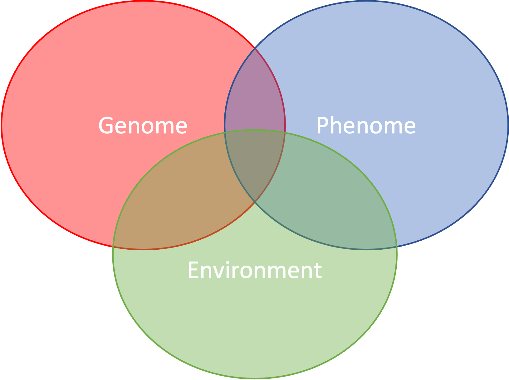
Figure 8.1: Example of datasets involved in Ecology, Evolution and Behavior and their intercations.
Here, we are providing methods and R functions that are applied to manage your projects and gather, convert and clean your data. Ultimately these tools will be applied to document and produce the raw data at the basis of your research.
8.2 Learning outcomes
- Creating RStudio projects to manage your reproducible project.
- Importing
csvfiles deposited on GitHub into R. - Learning about SHA-1 hash accession numbers and their usage to retrieve
csvfiles associated to specific GitHubcommitevents. - Downloading whole GitHub repository (in
zipformat) on your computer. - Listing all files in a compressed
zipfile. - Extracting and saving selected files from a
zipfile without decompressing it. - Manipulating files and directories to organize your project.
8.3 Managing projects in RStudio
RStudio projects (.Rproj) allow users to manage their project, more specifically by dividing their work into multiple contexts, each with their own working directory, workspace, history, and source documents.
8.3.1 Creating projects
RStudio projects are associated with R working directories. You can create an RStudio project:
- In a brand new directory.
- In an existing directory where you already have R code and data.
- By cloning a version control (Git or Subversion) repository.
We will be covering the last option during Chapter 11.
To create a new project in RStudio, do File > New Project... and then a window will pop-up allowing you to select among the 3 options (see Figure 8.2).
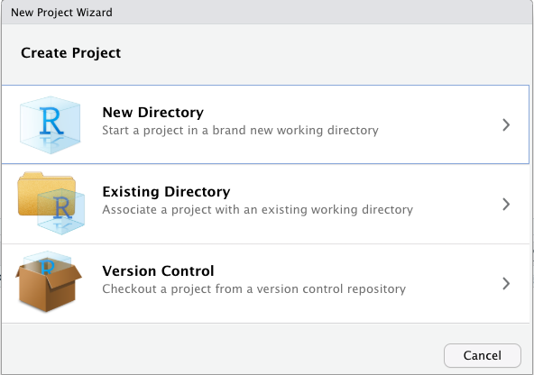
Figure 8.2: Window allowing you to create a New RStudio project. See text for more details.
When a new project is created RStudio:
- Creates a project file (with an
.Rprojextension) within the project directory. This file contains various project options and can also be used as a shortcut for opening the project directly from the filesystem. - Creates a hidden directory (named .
Rproj.user) where project-specific temporary files (e.g. auto-saved source documents, window-state, etc.) are stored. This directory is also automatically added to.Rbuildignore,.gitignore, etc. if required. - Loads the project into RStudio and display its name in the Projects toolbar (which is located on the far right side of the main toolbar).
8.3.2 Working with projects
To open a project, go to your project directory and double-click on the project file (*.Rproj). When your project opens within RStudio, the following actions will be taken:
- A new R session (process) is started.
- The current working directory is set to the project directory.
- Previously edited source documents are restored into editor tabs.
- If you saved your workspace into a
.RDatafile (see below), it will be loaded into your environment and allowing you to purse your work.
When you are within a project and choose to either Quit, close the project, or open another project the following actions will be taken:
.RDataand/or.Rhistoryare written to the project directory (if current options indicate they should be).- The list of open source documents is saved (so it can be restored next time the project is opened).
- The R session is terminated.
8.3.3 Additional information
Additional information on RStudio projects can be found here:
https://support.rstudio.com/hc/en-us/articles/200526207-Using-Projects
8.4 Bioinformatic dependencies and data repositories
The list of R packages and GitHub repositories used in this chapter are listed below. Please make sure you have all these set-up before starting reading and completing the material presented in this chapter.
8.4.1 R packages
Most of the functions that we will be using in this chapter are base R functions installed (by default) in the utils package (R Core Team, 2019). However, the following R package (and its dependencies) has to be installed on your computer prior to starting this tutorial: repmis (Gandrud, 2016). In the event that you wanted to import xsl or xlsx files into R, you would also have to install the readxl package (Wickham and Bryan, 2019).
8.4.2 GitHub repositories used in this chapter
8.4.2.1 EEB603_Reproducible_Science repository
This repository is dedicated to this course and is used to demonstrate the procedure to import csv files into R from GitHub repositories. More specifically, we will be importing different versions of the file (Timetable_EEB603_topic_tasks.csv) at the origin of the Timetable to study procedure associated to file versioning in GitHub. It is located at this URL (Uniform Resource Locator):
8.4.2.2 Sagebrush_rooting_in_vitro_prop
This repository is associated to Barron et al. (2020) and is used to demonstrate procedure to download whole GitHub repositories. We will be downloading the whole repository on your local computer and then extracting all csv files in the 01_Raw_Data/ folder and saving them on your local computer using R (see Figure 8.3 for more details on file content).
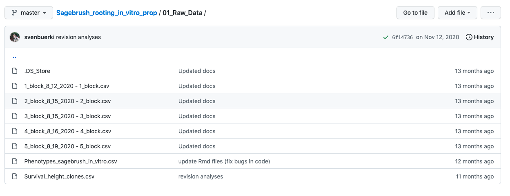
Figure 8.3: Snapshot showing files in the 01_Raw_Data folder that we will be targeting in the GitHub repository.
This approach is aimed at demonstrating how you could access raw data deposited on GitHub. The repository is located at this URL:
8.5 Overview of methods applied in this chapter
In this chapter, we will be focusing on learning procedures to import data from the internet focusing on GitHub. More precisely, we will be learning procedures to:
- Import comma-separated values format (
csv) stored in GitHub repositories. - Download and process whole GitHub repositories saved in compressed
zipformat.
8.6 List of R functions covered in this chapter
The list of major R functions covered in this chapter are provided in the Table below.
8.7 Getting started!
Before starting coding, please do the following:
- Open RStudio and create a New Project in a New Directory entitled
EEB603_Chapter_06. - Open the new project and create and save a new R script entitled
01_Data_gathering.R.
8.8 Importing csv files from GitHub into R
Before delving into this subject, there are several topics that we need to cover.
8.8.1 The SHA-1 hash accession number
With the growing popularity of GitHub, several authors are depositing their data sets on GitHub and you might would like to access those for your research. Since Git and GitHub are supporting version control, it is important to report the exact version of the file or data set that you have downloaded. To support such feature, each version of a file/data set is associated to a unique encrypted SHA-1 (Secure Hash Algorithm 1) hash accession number. This means that if the file changes (because the owner of the repository updated it), its SHA-1 hash accession number will change. Such feature allows users to referring to the exact file/data set used in their analyses therefore supporting reproducibility.
8.8.2 How to retrieve the URL of a GitHub csv file?
Before being able to import a csv file deposited in GitHub into R you have to find it’s raw URL. In this section, we will demonstrate how to obtain this information by using the Timetable_EEB603_topic_tasks.csv file located on the course’s GitHub repository.
To retrieve the raw URL associated to Timetable_EEB603_topic_tasks.csv do the following:
- Navigate to the file location on the GitHub repository by clicking here (see Figure 8.4).
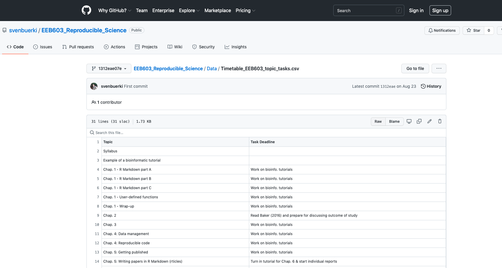
Figure 8.4: Location of Timetable_EEB603_topic_tasks.csv on the EEB603_Reproducible_Science GitHub repository.
- Click on the
Rawbutton on the right just above the file preview (Figure 8.4). This action should open a new window showing you the rawcsvfile (see Figure 8.5).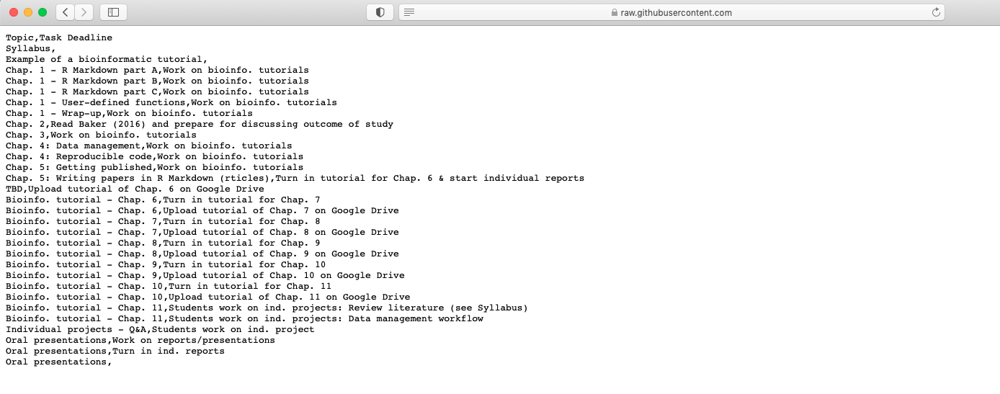
Figure 8.5: Raw csv file associated to Timetable_EEB603_topic_tasks.csv. See text for more details.
- The raw URL for this
csvfile can be retrieved by copying the URL address (see Figure 8.5). In this case, the URL is as follows: https://raw.githubusercontent.com/svenbuerki/EEB603_Reproducible_Science/master/Data/Timetable_EEB603_topic_tasks.csv - The URL can be shorten for free by using Bitly at https://bitly.com. In this case, the short URL pointing to our
csvfile is https://bit.ly/3BDxECl. We will be using this URL in the example below.
8.8.3 Importing GitHub csv into R
Now that we have retrieved and shortened the raw GitHub URL pointing to our target csv file, we can use the source_data() function implemented in the R package repmis (Gandrud, 2016) to download the file. The object return by source_data() is a data.frame and can therefore be easily manipulated and saved on your local computer (using e.g. write.csv()). Retrieving a csv data set from a GitHub repository can be done as follows:
### ~~~ Load package ~~~
library(repmis)
### ~~~ Store raw short URL into object ~~~
urlcsv <- "https://bit.ly/3BDxECl"
### ~~~ Download/Import csv into R ~~~
csvTimeTable <- repmis::source_data(url = urlcsv)## Downloading data from: https://bit.ly/3BDxECl## SHA-1 hash of the downloaded data file is:
## 0f53121f426640575e9a546b576cf5eb0c220443### ~~~ Check class ~~~ Class should be `data.frame`
class(csvTimeTable)## [1] "data.frame"### ~~~ Print csv ~~~
print(csvTimeTable)## Topic
## 1 [Syllabus](https://svenbuerki.github.io/EEB603_Reproducible_Science/index.html)
## 2 [Chapt. 1 - part A](https://svenbuerki.github.io/EEB603_Reproducible_Science/Chapters.html#23_What_is_Reproducible_Science)
## 3 [Chapt. 1 - part A](https://svenbuerki.github.io/EEB603_Reproducible_Science/Chapters.html#23_What_is_Reproducible_Science)
## 4 [Chapt. 1 - part B](https://svenbuerki.github.io/EEB603_Reproducible_Science/Chapters.html#24_What_Factors_Break_Reproducibility)
## 5 [Chap. 2 - part A: Learning the basics](https://svenbuerki.github.io/EEB603_Reproducible_Science/Chapters.html#32_PART_A:_Learning_the_Basics)
## 6 Review Chap. 2 - part A and [Chap. 2 - part B: Setting Your R Markdown Document](https://svenbuerki.github.io/EEB603_Reproducible_Science/Chapters.html#33_PART_B:_Setting_Your_R_Markdown_Document)
## 7 Complete [Chap. 2 - Part B: Setting Your R Markdown Document](https://svenbuerki.github.io/EEB603_Reproducible_Science/Chapters.html#33_PART_B:_Setting_Your_R_Markdown_Document) (we will start at the ""Install R Dependencies and Load Packages"" section)
## 8 Start [Chap. 2 - Part C: Tables, Figures, and References](https://svenbuerki.github.io/EEB603_Reproducible_Science/Chapters.html#34_PART_C:_Tables,_Figures_and_References) and complete it until the end of the ""Cross-reference Tables and Figures in the Text"" section
## 9 Complete [Chap. 2 - part C: Tables, Figures and References](https://svenbuerki.github.io/EEB603_Reproducible_Science/Chapters.html#34_PART_C:_Tables,_Figures_and_References) (we will start at section 3.4.7 ""Cite References in the Text"")
## 10 [Chap. 2 - part D: Advanced R and R Markdown settings](https://svenbuerki.github.io/EEB603_Reproducible_Science/Chapters.html#35_PART_D:_Advanced_R_and_R_Markdown_settings)
## 11 [Chap. 2 - part E: User-Defined Functions in R](https://svenbuerki.github.io/EEB603_Reproducible_Science/Chapters.html#36_PART_E:_User-Defined_Functions_in_R)
## 12 Complete [Chap. 2 - part E: User-Defined Functions in R](https://svenbuerki.github.io/EEB603_Reproducible_Science/Chapters.html#36_PART_E:_User-Defined_Functions_in_R) (we will start at section 3.6.8 Create, Name, and Access Elements of a List in R) and [Chap. 3: A roadmap to implement reproducible science](https://svenbuerki.github.io/EEB603_Reproducible_Science/Chapters.html#4_Chapter_3)
## 13 [Chap. 4: Open science and CARE principles](https://svenbuerki.github.io/EEB603_Reproducible_Science/Chapters.html#5_Chapter_4)
## 14 [Chap. 5: Data management](https://svenbuerki.github.io/EEB603_Reproducible_Science/Chapters.html#partDM)
## 15 [Chap. 5: Reproducible Code](https://svenbuerki.github.io/EEB603_Reproducible_Science/Chapters.html#repcode)
## 16 [Chap. 6: Getting published & Writing papers in R Markdown](https://svenbuerki.github.io/EEB603_Reproducible_Science/Chapters.html#7_Chapter_6)
## 17 Chap. 7: Lesson taught by the instructor
## 18 Bioinfo. tutorial - Chap. 7
## 19 Bioinfo. tutorial - Chap. 8
## 20 Bioinfo. tutorial - Chap. 8
## 21 Bioinfo. tutorial - Chap. 9
## 22 Bioinfo. tutorial - Chap. 9
## 23 Bioinfo. tutorial - Chap. 10
## 24 Bioinfo. tutorial - Chap. 10
## 25 Bioinfo. tutorial - Chap. 11
## 26 Bioinfo. tutorial - Chap. 11
## 27 Bioinfo. tutorial - Chap. 12
## 28 Bioinfo. tutorial - Chap. 12
## 29 Individual projects - Q&A
## 30 Individual projects - Q&A
## 31 Oral presentations of individual projects
## 32 Oral presentations of individual projects
## Homework
## 1
## 2 Read the syllabus carefully and ask questions if you need any clarification
## 3 Read your assigned publication for Chapter 1 - part A and identify its reproducibility challenges
## 4 Read Baker (2016) and Summary (pages 5-19) of the Reproducibility and replicability in science report (from The National Academies Press)
## 5 [Install software](https://svenbuerki.github.io/EEB603_Reproducible_Science/index.html#82_Installing_Software) and Sign up for bioinformatics tutorial (see [Syllabus](https://svenbuerki.github.io/EEB603_Reproducible_Science/index.html#1013_Google_Sheet) )
## 6 Complete Chapter 2 - part A
## 7 Complete the sections of Chapter 2 – Part B up to the end of the “YAML Metadata Section.” Read the “Install R Dependencies and Load Packages” section to familiarize yourself with its content and purpose
## 8 Make sure that your ""Chapter2_partB.Rmd"" file knits successfully and includes all the material from Chapter 2 - Part B
## 9 Make sure that your `Chapter2_partC.Rmd` file knits successfully and includes all the material up to the end of section [3.4.6 ""Cross-reference Tables and Figures in the Text""](https://svenbuerki.github.io/EEB603_Reproducible_Science/Chapters.html#346_Cross-reference_Tables_and_Figures_in_the_Text). Refer to section 3.4.4.2 ""Double Table in Caption"" for guidance on how to debug this issue if needed
## 10 Complete Chap. 2 - part C: Tables, Figures and References
## 11 Read material presented in Chap. 2 - part E: User-Defined Functions in R
## 12 Read material presented in Chapter 3
## 13 Read material presented in Chapter 4
## 14 Read material presented in Chapter 5 - Data Management
## 15 Read material presented in Chapter 5 - Reproducible Code
## 16 Read material presented in Chapter 6
## 17 TBD
## 18 Students work on bioinformatics tutorials and their individual projects
## 19 Students work on bioinformatics tutorials and their individual projects
## 20 Students work on bioinformatics tutorials and their individual projects
## 21 Students work on bioinformatics tutorials and their individual projects
## 22 Students work on bioinformatics tutorials and their individual projects
## 23 Students work on bioinformatics tutorials and their individual projects
## 24 Students work on bioinformatics tutorials and their individual projects
## 25 Students work on bioinformatics tutorials and their individual projects
## 26 Students work on bioinformatics tutorials and their individual projects
## 27 Students work on bioinformatics tutorials and their individual projects
## 28 Students work on bioinformatics tutorials and their individual projects
## 29 Students work on bioinformatics tutorials and their individual projects
## 30 Upload slides of individual projects (on [Google Drive](https://drive.google.com/drive/folders/1MZt5kNKusCv6OeZpjuuPxUiqBaoQVQAc?usp=sharing))
## 31
## 32
## Deadline
## 1
## 2
## 3
## 4
## 5
## 6
## 7
## 8
## 9
## 10
## 11
## 12
## 13
## 14
## 15 Turn in tutorial for Chap. 7
## 16 Upload tutorial of Chap. 7 on Google Drive
## 17 Turn in tutorial for Chap. 8
## 18 Upload tutorial of Chap. 8 on Google Drive
## 19 Turn in tutorial for Chap. 9
## 20 Upload tutorial of Chap. 9 on Google Drive
## 21 Turn in tutorial for Chap. 10
## 22 Upload tutorial of Chap. 10 on Google Drive
## 23 Turn in tutorial for Chap. 11
## 24 Upload tutorial of Chap. 11 on Google Drive
## 25 Turn in tutorial for Chap. 12
## 26 Upload tutorial of Chap. 12 on Google Drive
## 27
## 28
## 29
## 30 Turn in ind. projects (on [Google Drive](https://drive.google.com/drive/folders/1MZt5kNKusCv6OeZpjuuPxUiqBaoQVQAc?usp=sharing))
## 31
## 32
## URL
## 1 [Syllabus](https://svenbuerki.github.io/EEB603_Reproducible_Science/index.html)
## 2 [Chapter 1](https://svenbuerki.github.io/EEB603_Reproducible_Science/Chapters.html#2_Chapter_1) & [Chapter 2](https://svenbuerki.github.io/EEB603_Reproducible_Science/Chapters.html#3_Chapter_2)
## 3 [Part A](https://svenbuerki.github.io/EEB603_Reproducible_Science/Chapters.html#partA)
## 4 [Part A](https://svenbuerki.github.io/EEB603_Reproducible_Science/Chapters.html#partA) & [Part B: Set your R Markdown environment](https://svenbuerki.github.io/EEB603_Reproducible_Science/Chapters.html#233_Set_your_R_Markdown_environment)
## 5 [Part B](https://svenbuerki.github.io/EEB603_Reproducible_Science/Chapters.html#13_PART_B:_Tables,_Figures_and_References)
## 6 [Part B](https://svenbuerki.github.io/EEB603_Reproducible_Science/Chapters.html#13_PART_B:_Tables,_Figures_and_References)
## 7 [Part B](https://svenbuerki.github.io/EEB603_Reproducible_Science/Chapters.html#13_PART_B:_Tables,_Figures_and_References) & [Part C](https://svenbuerki.github.io/EEB603_Reproducible_Science/Chapters.html#14_PART_C:_Advanced_R_and_R_Markdown_settings)
## 8 [Part D](https://svenbuerki.github.io/EEB603_Reproducible_Science/Chapters.html#15_PART_D:_User_Defined_Functions_in_R)
## 9 [Part D](https://svenbuerki.github.io/EEB603_Reproducible_Science/Chapters.html#15_PART_D:_User_Defined_Functions_in_R)
## 10 [Publications and Resources for bioinformatic tutorials](https://svenbuerki.github.io/EEB603_Reproducible_Science/index.html#7_Publications__Textbooks)
## 11 [Chapter 3](https://svenbuerki.github.io/EEB603_Reproducible_Science/Chapters.html#4_Chapter_3)
## 12 [Chapter 4](https://svenbuerki.github.io/EEB603_Reproducible_Science/Chapters.html#5_Chapter_4)
## 13 [Chapter 5 - Part A](https://svenbuerki.github.io/EEB603_Reproducible_Science/Chapters.html#partDM)
## 14 [Chapter 5 - Part B](https://svenbuerki.github.io/EEB603_Reproducible_Science/Chapters.html#repcode)
## 15 [Chapter 6 - Part A](https://svenbuerki.github.io/EEB603_Reproducible_Science/Chapters.html#getpub)
## 16 [Chapter 6 - Part B](https://svenbuerki.github.io/EEB603_Reproducible_Science/Chapters.html#writpub)
## 17
## 18
## 19
## 20
## 21
## 22
## 23
## 24
## 25
## 26
## 27
## 28
## 29
## 30
## 31
## 32source_data() will always download the most recent version of the file from the master branch and return its unique SHA-1 hash. However, you could also download a prior version of the file by providing its specific SHA-1 hash associated to a previous commit.
8.8.4 Retrieving csv from previous commit
Retrieving the csv file associated to a specific commit can be done by applying the following approach (here using the same example than above):
- To find a file’s particular
commitraw URL navigate to its location on GitHub by clicking here. - Click the button. This action will take you to a page listing all of the file’s versions (see Figure 8.6).
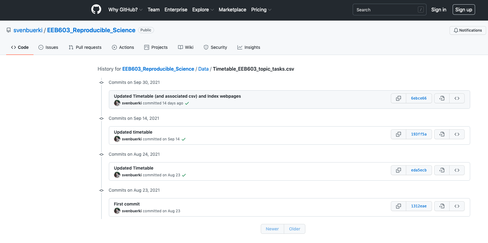
Figure 8.6: Page showing commit history associated to Timetable_EEB603_topic_tasks.csv.
- Click on the
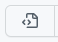
button next to the version of the file that you want to use (hereCommits on Aug 23, 2021; Figure 8.6). This will take you to the version of the file at this point in history.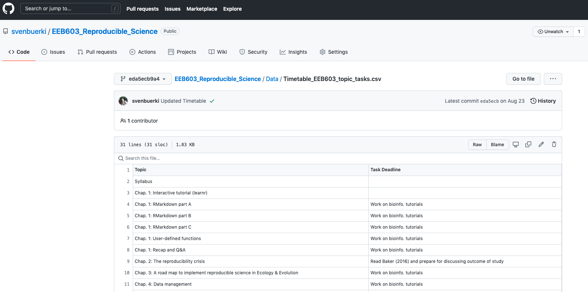
Figure 8.7: Page showing prior commit associated to Timetable_EEB603_topic_tasks.csv.
- Clicking on the
Rawbutton will load thecsvfile and allow you to retrieve the URL (as done above). - Download the file using the following R code:
### ~~~ Store raw URL into object ~~~
urlcsvold <- "https://raw.githubusercontent.com/svenbuerki/EEB603_Reproducible_Science/1312eae07e0515d8d2423ff83834b184cf6eeb8d/Data/Timetable_EEB603_topic_tasks.csv"
### ~~~ Download/Import csv into R ~~~
csvTimeTableOld <- repmis::source_data(url = urlcsvold)## Downloading data from: https://raw.githubusercontent.com/svenbuerki/EEB603_Reproducible_Science/1312eae07e0515d8d2423ff83834b184cf6eeb8d/Data/Timetable_EEB603_topic_tasks.csv## SHA-1 hash of the downloaded data file is:
## e7071b1e85ada38d6b2cf2a93bbb43c2b96a331f### ~~~ Check class ~~~ Class should be `data.frame`
class(csvTimeTableOld)## [1] "data.frame"### ~~~ Print csv ~~~
print(csvTimeTableOld)## Topic
## 1 Syllabus
## 2 Example of a bioinformatic tutorial
## 3 Chap. 1 - R Markdown part A
## 4 Chap. 1 - R Markdown part B
## 5 Chap. 1 - R Markdown part C
## 6 Chap. 1 - User-defined functions
## 7 Chap. 1 - Wrap-up
## 8 Chap. 2
## 9 Chap. 3
## 10 Chap. 4: Data management
## 11 Chap. 4: Reproducible code
## 12 Chap. 5: Getting published
## 13 Chap. 5: Writing papers in R Markdown (rticles)
## 14 TBD
## 15 Bioinfo. tutorial - Chap. 6
## 16 Bioinfo. tutorial - Chap. 6
## 17 Bioinfo. tutorial - Chap. 7
## 18 Bioinfo. tutorial - Chap. 7
## 19 Bioinfo. tutorial - Chap. 8
## 20 Bioinfo. tutorial - Chap. 8
## 21 Bioinfo. tutorial - Chap. 9
## 22 Bioinfo. tutorial - Chap. 9
## 23 Bioinfo. tutorial - Chap. 10
## 24 Bioinfo. tutorial - Chap. 10
## 25 Bioinfo. tutorial - Chap. 11
## 26 Bioinfo. tutorial - Chap. 11
## 27 Individual projects - Q&A
## 28 Oral presentations
## 29 Oral presentations
## 30 Oral presentations
## Task Deadline
## 1
## 2
## 3 Work on bioinfo. tutorials
## 4 Work on bioinfo. tutorials
## 5 Work on bioinfo. tutorials
## 6 Work on bioinfo. tutorials
## 7 Work on bioinfo. tutorials
## 8 Read Baker (2016) and prepare for discussing outcome of study
## 9 Work on bioinfo. tutorials
## 10 Work on bioinfo. tutorials
## 11 Work on bioinfo. tutorials
## 12 Work on bioinfo. tutorials
## 13 Turn in tutorial for Chap. 6 & start individual reports
## 14 Upload tutorial of Chap. 6 on Google Drive
## 15 Turn in tutorial for Chap. 7
## 16 Upload tutorial of Chap. 7 on Google Drive
## 17 Turn in tutorial for Chap. 8
## 18 Upload tutorial of Chap. 8 on Google Drive
## 19 Turn in tutorial for Chap. 9
## 20 Upload tutorial of Chap. 9 on Google Drive
## 21 Turn in tutorial for Chap. 10
## 22 Upload tutorial of Chap. 10 on Google Drive
## 23 Turn in tutorial for Chap. 11
## 24 Upload tutorial of Chap. 11 on Google Drive
## 25 Students work on ind. projects: Review literature (see Syllabus)
## 26 Students work on ind. projects: Data management workflow
## 27 Students work on ind. project
## 28 Work on reports/presentations
## 29 Turn in ind. reports
## 30- You can see here that the SHA-1 hash is different from our previous download confirming that the files are different.
8.9 Downloading and processing GitHub repositories
Before being able to download a GitHub repository and work with its files into R, you have to find the URL pointing to the compressed zip file containing all the files for the target repository. In this section, we will demonstrate how to obtain this information by using the Sagebrush_rooting_in_vitro_prop GitHub repository. As mentioned above, we will be downloading the whole repository and then extract all the csv files in the 01_Raw_Data/ folder (see Figure 8.3).
8.9.1 How to retrieve the URL for the GitHub repository?
To retrieve the URL associated to the compressed zip file containing all files for the repository do the following:
- Navigate to the GitHub repository page by clicking here (see Figure 8.8).
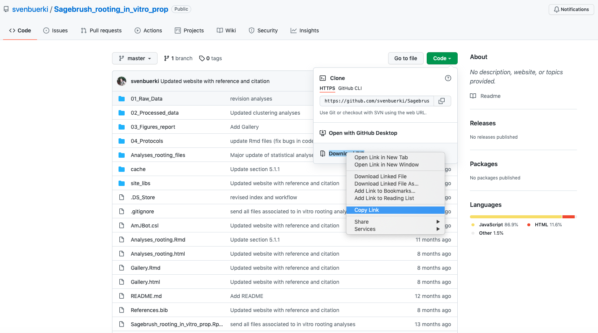
Figure 8.8: GitHub repository page for Sagebrush_rooting_in_vitro_prop.
- To copy the URL pointing to the compressed
zipfile do the following actions:
- Click on the button.
- Navigate to the section.
- Right-click to copy the link (as shown in Figure 8.8).
- The copied URL (https://github.com/svenbuerki/Sagebrush_rooting_in_vitro_prop/archive/refs/heads/master.zip) will serve as input for downloading the repository on your local computer (see below).
8.9.2 Downloading GitHub repository on your computer
Now that we have secured the URL pointing to the compressed zip file for the target repository (by copying it), we will use this URL and the base R download.file() function as input to download the file on our local computer. Since compressed files could be large, we are also providing some code to check if the file already exists on your computer before downloading.
### ~~~ Store URL in object ~~~ Paste the URL that you
### copied in the previous section here
URLrepo <- "https://github.com/svenbuerki/Sagebrush_rooting_in_vitro_prop/archive/refs/heads/master.zip"
### ~~~ Download the repository from GitHub ~~~ Arguments:
### - url: URLrepo - destfile: Path and name of destination
### file on your computer YOU HAVE TO ADJUST PATH TO YOUR
### COMPUTER
# First check if the file exists, if yes then return file
# already downloaded else proceed with download
if (file.exists("Data/GitHubRepoSagebrush.zip") == TRUE) {
# File already exists!
print("file already exists and doesn't need to be downloaded!")
} else {
# Download the file
print("Downloading GitHub repository!")
download.file(url = URLrepo, destfile = "Data/GitHubRepoSagebrush.zip")
}## [1] "file already exists and doesn't need to be downloaded!"8.9.3 Extracting raw data from compressed GitHub repository
Compressed files can be quite large and you might would like to avoid decompressing them, but rather accessing target files and only decompressing those. Here, we are practicing such approach by using GitHubRepoSagebrush.zip and targeting csv files in the 01_Raw_Data/ folder.
8.9.3.1 What is the size of the zip file?
To estimate the size (in bytes) of a file you can use base R function file.size() as follows:
### ~~~ Infer file size of GitHubRepoSagebrush.zip ~~~
# Transform and round file size from bytes to Mb
ZipSize <- round(file.size("Data/GitHubRepoSagebrush.zip")/1e+06,
2)
print(paste("The zip file size is", ZipSize, "Mb", sep = " "))## [1] "The zip file size is 22.26 Mb"8.9.3.2 Decompressing and saving csv files in 01_Raw_Data/
Finally, we can now i) list all files in the zip file, ii) identify csv files in 01_Raw_Data/ and iii) save these files on our local computer in a folder entitled 01_Raw_Data/. These files will then constitute the raw data for your subsequent analyses.
### ~~~ List all files in zip file without decompressing it
### ~~~
filesZip <- as.character(unzip("Data/GitHubRepoSagebrush.zip",
list = TRUE)$Name)
### ~~~ Identify files in 01_Raw_Data/ that are csv ~~~ Use
### grepl() to match criteria
targetF <- which(grepl("01_Raw_Data/", filesZip) & grepl(".csv",
filesZip) == TRUE)
# Subset files from filesZip to only get our target files
rawcsvfiles <- filesZip[targetF]
# print list of target files
print(rawcsvfiles)## [1] "Sagebrush_rooting_in_vitro_prop-master/01_Raw_Data/1_block_8_12_2020 - 1_block.csv"
## [2] "Sagebrush_rooting_in_vitro_prop-master/01_Raw_Data/2_block_8_15_2020 - 2_block.csv"
## [3] "Sagebrush_rooting_in_vitro_prop-master/01_Raw_Data/3_block_8_15_2020 - 3_block.csv"
## [4] "Sagebrush_rooting_in_vitro_prop-master/01_Raw_Data/4_block_8_16_2020 - 4_block.csv"
## [5] "Sagebrush_rooting_in_vitro_prop-master/01_Raw_Data/5_block_8_19_2020 - 5_block.csv"
## [6] "Sagebrush_rooting_in_vitro_prop-master/01_Raw_Data/Phenotypes_sagebrush_in_vitro.csv"
## [7] "Sagebrush_rooting_in_vitro_prop-master/01_Raw_Data/Survival_height_clones.csv"### ~~~ Create local directory to save csv files ~~~ Check
### if the folder already exists if not then creates it
output_dir <- file.path(paste0("Data/01_Raw_Data/"))
if (dir.exists(output_dir)) {
print(paste0("Dir", output_dir, " already exists!"))
} else {
print(paste0("Created ", output_dir))
dir.create(output_dir)
}## [1] "DirData/01_Raw_Data/ already exists!"### ~~~ Save csv in output_dir ~~~ Use loop to read csv
### file in and then save it in output_dir
for (i in 1:length(rawcsvfiles)) {
### ~~~ Decompress and read in csv file ~~~
tempcsv <- read.csv(unz("Data/GitHubRepoSagebrush.zip", rawcsvfiles[i]))
### ~~~ Write file in ~~~ Extract file name
csvName <- strsplit(rawcsvfiles[i], split = "01_Raw_Data/")[[1]][2]
# Write csv file in output_dir
write.csv(tempcsv, file = paste0(output_dir, csvName))
}We can verify that all the files are in the newly created directory on your computer by listing them as follows (compare your results with files shown in Figure 8.3):
# List all the files in output_dir (on your local computer)
list.files(paste0(output_dir))## [1] "1_block_8_12_2020 - 1_block.csv" "2_block_8_15_2020 - 2_block.csv"
## [3] "3_block_8_15_2020 - 3_block.csv" "4_block_8_16_2020 - 4_block.csv"
## [5] "5_block_8_19_2020 - 5_block.csv" "Phenotypes_sagebrush_in_vitro.csv"
## [7] "Survival_height_clones.csv"9 References
Appendices
A Appendix 1
Citations of all R packages used to generate this report.
[1] J. Allaire, Y. Xie, C. Dervieux, et al. rmarkdown: Dynamic Documents for R. R package version 2.29. 2024. https://github.com/rstudio/rmarkdown.
[2] J. Allaire, Y. Xie, C. Dervieux, et al. rticles: Article Formats for R Markdown. R package version 0.27. 2024. https://github.com/rstudio/rticles.
[3] S. M. Bache and H. Wickham. magrittr: A Forward-Pipe Operator for R. R package version 2.0.3. 2022. https://magrittr.tidyverse.org.
[4] C. Boettiger. knitcitations: Citations for Knitr Markdown Files. R package version 1.0.12. 2021. https://github.com/cboettig/knitcitations.
[5] J. Cheng, C. Sievert, B. Schloerke, et al. htmltools: Tools for HTML. R package version 0.5.7. 2023. https://github.com/rstudio/htmltools.
[6] R. Francois and D. Hernangómez. bibtex: Bibtex Parser. R package version 0.5.1. 2023. https://github.com/ropensci/bibtex.
[7] C. Glur. data.tree: General Purpose Hierarchical Data Structure. R package version 1.2.0. 2025. https://github.com/gluc/data.tree.
[8] R. Iannone and O. Roy. DiagrammeR: Graph/Network Visualization. R package version 1.0.11. 2024. https://rich-iannone.github.io/DiagrammeR/.
[9] M. C. Koohafkan. kfigr: Integrated Code Chunk Anchoring and Referencing for R Markdown Documents. R package version 1.2.1. 2021. https://github.com/mkoohafkan/kfigr.
[10] Y. Qiu. prettydoc: Creating Pretty Documents from R Markdown. R package version 0.4.1. 2021. https://github.com/yixuan/prettydoc.
[11] R Core Team. R: A Language and Environment for Statistical Computing. R Foundation for Statistical Computing. Vienna, Austria, 2022. https://www.R-project.org/.
[12] K. Ren and K. Russell. formattable: Create Formattable Data Structures. R package version 0.2.1. 2021. https://renkun-ken.github.io/formattable/.
[13] H. Wickham, J. Bryan, M. Barrett, et al. usethis: Automate Package and Project Setup. R package version 3.2.1. 2025. https://usethis.r-lib.org.
[14] H. Wickham, R. François, L. Henry, et al. dplyr: A Grammar of Data Manipulation. R package version 1.1.4. 2023. https://dplyr.tidyverse.org.
[15] H. Wickham, J. Hester, W. Chang, et al. devtools: Tools to Make Developing R Packages Easier. R package version 2.4.5. 2022. https://devtools.r-lib.org/.
[16] Y. Xie. bookdown: Authoring Books and Technical Documents with R Markdown. Boca Raton, Florida: Chapman and Hall/CRC, 2016. ISBN: 978-1138700109. https://bookdown.org/yihui/bookdown.
[17] Y. Xie. bookdown: Authoring Books and Technical Documents with R Markdown. R package version 0.36. 2023. https://github.com/rstudio/bookdown.
[18] Y. Xie. Dynamic Documents with R and knitr. 2nd. ISBN 978-1498716963. Boca Raton, Florida: Chapman and Hall/CRC, 2015. https://yihui.org/knitr/.
[19] Y. Xie. “knitr: A Comprehensive Tool for Reproducible Research in R”. In: Implementing Reproducible Computational Research. Ed. by V. Stodden, F. Leisch and R. D. Peng. ISBN 978-1466561595. Chapman and Hall/CRC, 2014.
[20] Y. Xie. knitr: A General-Purpose Package for Dynamic Report Generation in R. R package version 1.44. 2023. https://yihui.org/knitr/.
[21] Y. Xie, J. Allaire, and G. Grolemund. R Markdown: The Definitive Guide. Boca Raton, Florida: Chapman and Hall/CRC, 2018. ISBN: 9781138359338. https://bookdown.org/yihui/rmarkdown.
[22] Y. Xie, J. Cheng, X. Tan, et al. DT: A Wrapper of the JavaScript Library DataTables. R package version 0.34.0. 2025. https://github.com/rstudio/DT.
[23] Y. Xie, C. Dervieux, and E. Riederer. R Markdown Cookbook. Boca Raton, Florida: Chapman and Hall/CRC, 2020. ISBN: 9780367563837. https://bookdown.org/yihui/rmarkdown-cookbook.
[24] H. Zhu. kableExtra: Construct Complex Table with kable and Pipe Syntax. R package version 1.4.0. 2024. http://haozhu233.github.io/kableExtra/.
B Appendix 2
Version information about R, the operating system (OS) and attached or R loaded packages. This appendix was generated using sessionInfo().
## R version 4.2.0 (2022-04-22)
## Platform: x86_64-apple-darwin17.0 (64-bit)
## Running under: macOS Big Sur/Monterey 10.16
##
## Matrix products: default
## BLAS: /Library/Frameworks/R.framework/Versions/4.2/Resources/lib/libRblas.0.dylib
## LAPACK: /Library/Frameworks/R.framework/Versions/4.2/Resources/lib/libRlapack.dylib
##
## locale:
## [1] en_US.UTF-8/en_US.UTF-8/en_US.UTF-8/C/en_US.UTF-8/en_US.UTF-8
##
## attached base packages:
## [1] stats graphics grDevices utils datasets methods base
##
## other attached packages:
## [1] repmis_0.5.1 rticles_0.27 DiagrammeR_1.0.11
## [4] DT_0.34.0 data.tree_1.2.0 kfigr_1.2.1
## [7] devtools_2.4.5 usethis_3.2.1 bibtex_0.5.1
## [10] knitcitations_1.0.12 htmltools_0.5.7 prettydoc_0.4.1
## [13] magrittr_2.0.3 dplyr_1.1.4 kableExtra_1.4.0
## [16] formattable_0.2.1 bookdown_0.36 rmarkdown_2.29
## [19] knitr_1.44
##
## loaded via a namespace (and not attached):
## [1] httr_1.4.7 sass_0.4.8 pkgload_1.4.1 jsonlite_1.8.8
## [5] viridisLite_0.4.2 R.utils_2.13.0 bslib_0.5.1 shiny_1.7.5.1
## [9] highr_0.11 yaml_2.3.8 remotes_2.5.0 sessioninfo_1.2.3
## [13] pillar_1.11.1 backports_1.4.1 glue_1.6.2 digest_0.6.33
## [17] RColorBrewer_1.1-3 promises_1.2.1 RefManageR_1.4.0 R.oo_1.27.1
## [21] httpuv_1.6.13 plyr_1.8.9 pkgconfig_2.0.3 purrr_1.0.2
## [25] xtable_1.8-4 scales_1.4.0 svglite_2.1.3 later_1.3.2
## [29] timechange_0.2.0 tibble_3.2.1 generics_0.1.4 farver_2.1.1
## [33] ellipsis_0.3.2 cachem_1.0.8 withr_3.0.2 cli_3.6.2
## [37] mime_0.12 memoise_2.0.1 evaluate_1.0.5 R.methodsS3_1.8.2
## [41] fs_1.6.3 R.cache_0.17.0 xml2_1.3.6 pkgbuild_1.4.8
## [45] data.table_1.14.10 profvis_0.3.8 tools_4.2.0 formatR_1.14
## [49] lifecycle_1.0.4 stringr_1.5.2 compiler_4.2.0 jquerylib_0.1.4
## [53] systemfonts_1.0.5 rlang_1.1.2 rstudioapi_0.17.1 htmlwidgets_1.6.4
## [57] visNetwork_2.1.4 crosstalk_1.2.2 miniUI_0.1.2 curl_5.2.0
## [61] R6_2.6.1 lubridate_1.9.3 fastmap_1.1.1 stringi_1.8.3
## [65] Rcpp_1.0.11 vctrs_0.6.5 tidyselect_1.2.0 xfun_0.41
## [69] urlchecker_1.0.1What is a Hypothesis? A hypothesis is a tentative, testable answer to a scientific question. Once a scientist has a scientific question they perform a literature review to find out what is already known on the topic. Then this information is used to form a tentative answer to the scientific question. Keep in mind, that the hypothesis also has to be testable since the next step is to do an experiment to determine whether or not the hypothesis is right! A hypothesis leads to one or more predictions that can be tested by experimenting. Predictions often take the shape of “If ____then ____” statements, but do not have to. Predictions should include both an independent variable (the factor you change in an experiment) and a dependent variable (the factor you observe or measure in an experiment). A single hypothesis can lead to multiple predictions.↩︎
GBIF — the Global Biodiversity Information Facility — is an international network and research infrastructure funded by the world’s governments and aimed at providing anyone, anywhere, open access to data about all types of life on Earth.↩︎
Postdiction involves explanation after the fact.↩︎